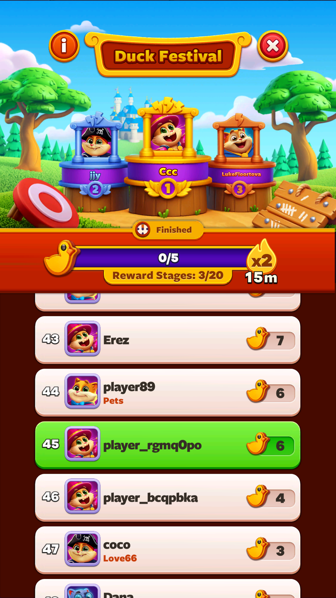
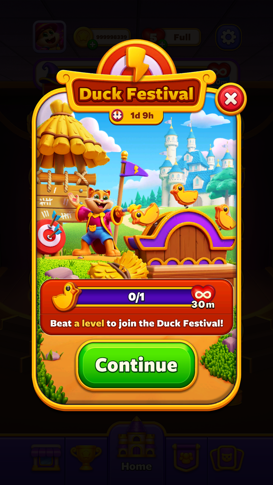
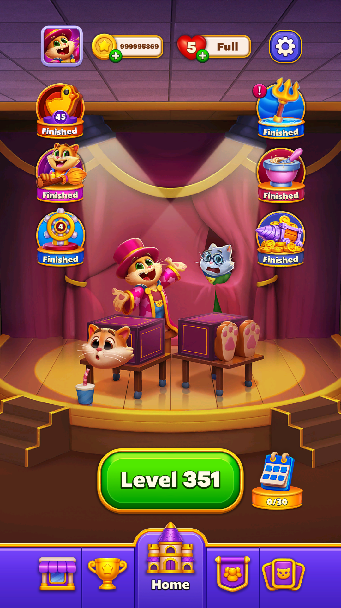
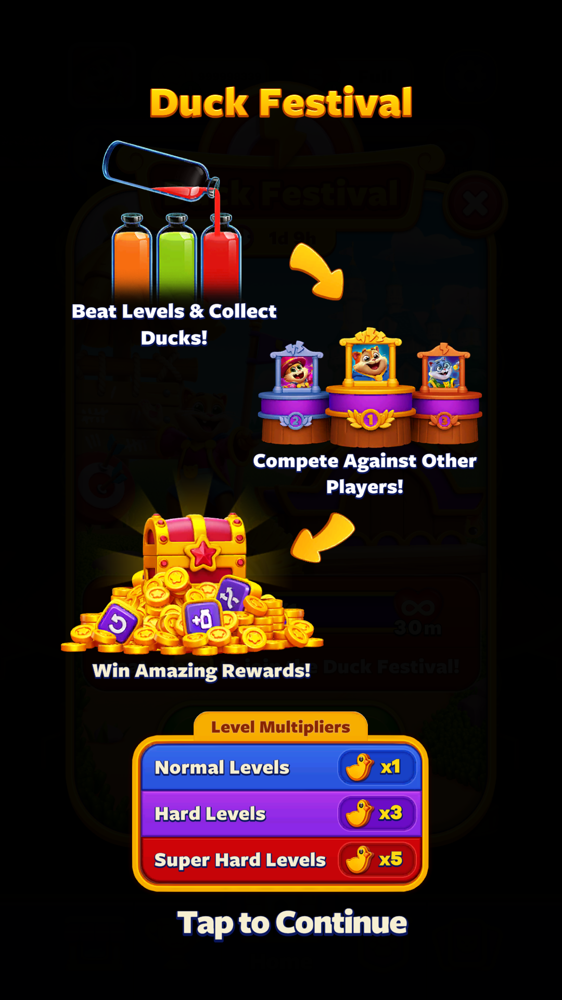
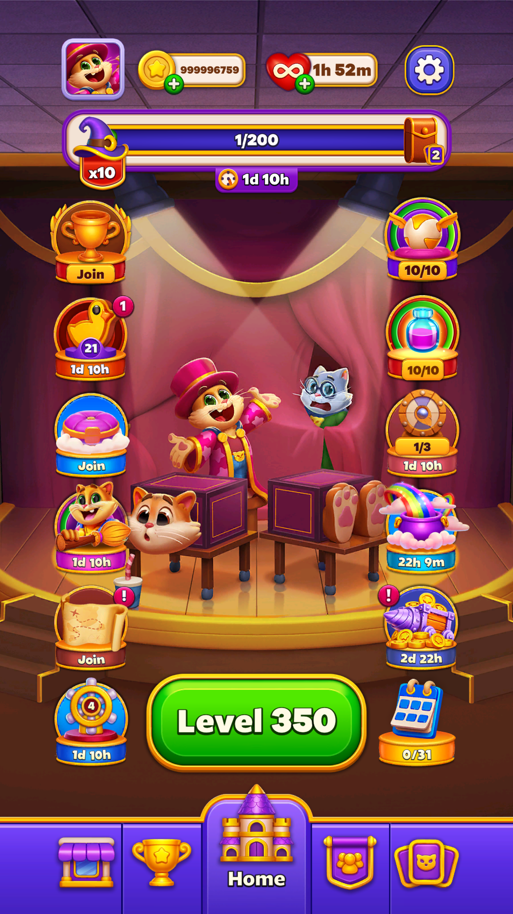
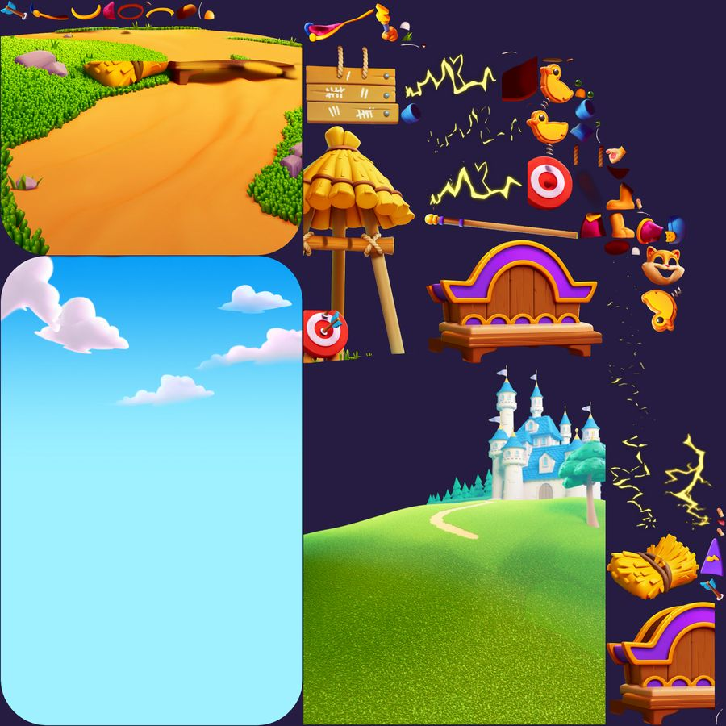

Lễ hội Vịt (Duck Festival)
Kết hợp tiến độ cá nhân với đua hạng để người chơi có quà mốc ngay cả khi không đứng đầu bảng.
3 UC có nhánh liên quan tới case quan sát. Chưa có kết luận toàn bộ tính năng hoặc mọi UC đã pass. Xem bằng chứng và phần còn thiếu.
Thiết kế chi tiết
Tóm tắt thiết kế
Kết hợp tiến độ cá nhân với đua hạng để người chơi có quà mốc ngay cả khi không đứng đầu bảng.
Thu điểm sự kiện → vượt mốc → theo dõi rank → nhận kết quả cuối đợt.
Thiết kế đọc từ dossier và nguồn đã đối chiếu. Outcome là expected; câu ghi round2 là actual theo case, không phải full-feature pass.
11 ảnh chụp có nguồn · ảnh hiện ngay trong khung, bấm để mở ảnh gốc. Màu nhãn phân biệt playtest, lịch sử và ngữ cảnh.



Luồng người chơi từng bước
- 01
Qua cửa Pre-Join
Người chơi và hệ thốngTích điều kiện đầu vào của event.
Điều kiện / luật: preJoinScore và joinWindowEndEpoch thuộc instance; không lấy mốc unlock làm đã Join.
Kết quả theo đặc tả: Đủ điều kiện ghép bảng khi cửa còn mở.

Ảnh lịch sử Popup pre-join Duck Festival (còn 1 ngày 9 giờ): thanh 0/1 vịt, thưởng  30 phút mạng vô hạn — "Beat a level to join the Duck Festival!"Ảnh chụp lịch sử · giữ snapshot và điều kiện trong chú thíchHồ sơ ảnh lịch sử
30 phút mạng vô hạn — "Beat a level to join the Duck Festival!"Ảnh chụp lịch sử · giữ snapshot và điều kiện trong chú thíchHồ sơ ảnh lịch sử - 02
Nhận quà tiến độ
Người chơi và hệ thốngVượt NeededDuckCount của từng bước.
Điều kiện / luật: Có 20 mốc; DuckMultiplier là tài nguyên theo thời gian, khác điểm bảng xếp hạng.
Kết quả theo đặc tả: Quà mốc không phụ thuộc việc nằm top3.
- 03
Đọc kết quả cuối đợt
Người chơi và hệ thốngMở popup Finished và xem rank/reward.
Điều kiện / luật: Round2 thấy rank 45 và dấu gạch reward; help ghi Normal/Hard/SuperHard 1/3/5, không phải runtime đã kiếm đủ các loại điểm.
Kết quả theo đặc tả: Chỉ ghi nhận nhánh result UI; Continue báo No Internet chưa phải claim.
15/11/2026 · Event hết hạn: settlement và lỗi mạng16/11/2026 · Finishedrank45, rulesUI vàContinuebịNo InternetNguồn: DuckFestival.json · use_cases/11 · review_cases_20261116_round2.json
Playtest Help Duck Festival trình bày các hệ số 1, 3, 5; đây là luật UI, chưa kiểm scoring bằng level.16/11/2026 · app 0.0.3129 · fixture offlineXem case 
Playtest Continue trên kết quả Duck hiện No Internet Connection, bảng result vẫn mở; chưa có claim hoặc ack server.16/11/2026 · app 0.0.3129 · fixture offlineXem case

Quy tắc cần nắm
| Quy tắc | Hành vi theo nguồn | Căn cứ |
|---|---|---|
| Qua cửa Pre-Join | preJoinScore và joinWindowEndEpoch thuộc instance; không lấy mốc unlock làm đã Join. | |
| Nhận quà tiến độ | Có 20 mốc; DuckMultiplier là tài nguyên theo thời gian, khác điểm bảng xếp hạng. | |
| Đọc kết quả cuối đợt | Round2 thấy rank 45 và dấu gạch reward; help ghi Normal/Hard/SuperHard 1/3/5, không phải runtime đã kiếm đủ các loại điểm. | Nguồn: DuckFestival.json · use_cases/11 · review_cases_20261116_round2.json |
Số liệu & phần thưởng
Phần thưởng
PHẦN THƯỞNG 20 MỐC THANH TIẾN ĐỘ (GaeRewardSteps)
| Mốc | Số vịt cần | Phần thưởng |
|---|---|---|
| Mốc 1 | 1 vịt (cộng dồn 1) |  ∞30 phútUnlimited Lives ∞30 phútUnlimited Lives |
| Mốc 2 | 5 vịt (cộng dồn 6) |  1 Undo 1 Undo |
| Mốc 3 | 4 vịt (cộng dồn 10) | 1 phút Duck Multiplier |
| Mốc 4 | 5 vịt (cộng dồn 15) | ∞30 phútUnlimited Lives |
| Mốc 5 | 10 vịt (cộng dồn 25) |  1 Shuffle 1 Shuffle |
| Mốc 6 | 5 vịt (cộng dồn 30) | ∞30 phútUnlimited Lives |
| Mốc 7 | 10 vịt (cộng dồn 40) |  100Coin 100Coin |
| Mốc 8 | 10 vịt (cộng dồn 50) | 1 giờ Unlimited Lives |
| Mốc 9 | 4 vịt (cộng dồn 54) | 1 phút Duck Multiplier |
| Mốc 10 | 15 vịt (cộng dồn 69) | 150Coin |
| Mốc 11 | 10 vịt (cộng dồn 79) | 2 giờ Unlimited Lives |
| Mốc 12 | 20 vịt (cộng dồn 99) | 2 Undo |
| Mốc 13 | 4 vịt (cộng dồn 103) | 10 phút Duck Multiplier |
| Mốc 14 | 5 vịt (cộng dồn 108) | 1 Undo |
| Mốc 15 | 15 vịt (cộng dồn 123) | 200Coin |
| Mốc 16 | 25 vịt (cộng dồn 148) |  1 Extra Bottle 1 Extra Bottle |
| Mốc 17 | 10 vịt (cộng dồn 158) | 1 giờ Unlimited Lives |
| Mốc 18 | 10 vịt (cộng dồn 168) | 100Coin |
| Mốc 19 | 4 vịt (cộng dồn 172) | 1 giờ Duck Multiplier |
| Mốc 20 | 60 vịt (cộng dồn 232) | 750Coin |
PHẦN THƯỞNG 20 MỐC KHI COLLECTION BẬT (GaeRewardStepsWithCollection)
| Mốc | Số vịt cần | Phần thưởng |
|---|---|---|
| Mốc 1 | 1 vịt (cộng dồn 1) | ∞30 phútUnlimited Lives |
| Mốc 2 | 5 vịt (cộng dồn 6) | 1 Undo |
| Mốc 3 | 4 vịt (cộng dồn 10) | 1 phút Duck Multiplier |
| Mốc 4 | 8 vịt (cộng dồn 18) |  1 gói thẻ Collection loại 1 1 gói thẻ Collection loại 1 |
| Mốc 5 | 5 vịt (cộng dồn 23) | ∞30 phútUnlimited Lives |
| Mốc 6 | 10 vịt (cộng dồn 33) | 1 Shuffle |
| Mốc 7 | 10 vịt (cộng dồn 43) | 100Coin |
| Mốc 8 | 4 vịt (cộng dồn 47) | 1 phút Duck Multiplier |
| Mốc 9 | 8 vịt (cộng dồn 55) | 1 giờ Unlimited Lives |
| Mốc 10 | 15 vịt (cộng dồn 70) | 150Coin |
| Mốc 11 | 4 vịt (cộng dồn 74) | 5 phút Duck Multiplier |
| Mốc 12 | 20 vịt (cộng dồn 94) |  1 gói thẻ Collection loại 3 1 gói thẻ Collection loại 3 |
| Mốc 13 | 10 vịt (cộng dồn 104) | 1 Shuffle |
| Mốc 14 | 15 vịt (cộng dồn 119) | 200Coin |
| Mốc 15 | 10 vịt (cộng dồn 129) | 1 gói thẻ Collection loại 1 |
| Mốc 16 | 25 vịt (cộng dồn 154) | 1 Extra Bottle |
| Mốc 17 | 8 vịt (cộng dồn 162) | 1 giờ Unlimited Lives |
| Mốc 18 | 30 vịt (cộng dồn 192) | 1 gói thẻ Collection loại 4 |
| Mốc 19 | 20 vịt (cộng dồn 212) | 2 Shuffle |
| Mốc 20 | 60 vịt (cộng dồn 272) | 750Coin |
PHẦN THƯỞNG BẢNG XẾP HẠNG (LeaderboardRewards)
| Hạng | Điều kiện | Phần thưởng |
|---|---|---|
| Hạng 1 | Xếp hạng 1 cuối sự kiện | rương ChestType 13 gồm  1000 coin 1 Undo 1 Shuffle 1 Extra Bottle 1000 coin 1 Undo 1 Shuffle 1 Extra Bottle |
| Hạng 2 | Xếp hạng 2 cuối sự kiện | rương ChestType 12 gồm 500 coin 1 Undo 1 Shuffle |
| Hạng 3 | Xếp hạng 3 cuối sự kiện | rương ChestType 11 gồm 250 coin 1 Undo |
| Hạng 4 | Xếp hạng 4 cuối sự kiện | 100Coin |
| Hạng 5 | Xếp hạng 5 cuối sự kiện | 100Coin |
| Hạng 6 | Xếp hạng 6 cuối sự kiện | 100Coin |
| Hạng 7 | Xếp hạng 7 cuối sự kiện | 100Coin |
| Hạng 8 | Xếp hạng 8 cuối sự kiện | 100Coin |
| Hạng 9 | Xếp hạng 9 cuối sự kiện | 100Coin |
| Hạng 10 | Xếp hạng 10 cuối sự kiện | 100Coin |
PHẦN THƯỞNG BẢNG XẾP HẠNG KHI COLLECTION BẬT (LeaderboardRewardsWithCollection)
| Hạng | Điều kiện | Phần thưởng |
|---|---|---|
| Hạng 1 | Xếp hạng 1 cuối sự kiện | rương ChestType 13 gồm  1 gói thẻ Collection loại 5 1000 coin 1 Undo 1 Shuffle 1 gói thẻ Collection loại 5 1000 coin 1 Undo 1 Shuffle |
| Hạng 2 | Xếp hạng 2 cuối sự kiện | rương ChestType 12 gồm 1 gói thẻ Collection loại 3 500 coin 1 Undo |
| Hạng 3 | Xếp hạng 3 cuối sự kiện | rương ChestType 11 gồm  1 gói thẻ Collection loại 2 250 coin 1 gói thẻ Collection loại 2 250 coin |
| Hạng 4 | Xếp hạng 4 cuối sự kiện | rương ChestType 9 gồm 1 gói thẻ Collection loại 1 50 coin |
| Hạng 5 | Xếp hạng 5 cuối sự kiện | rương ChestType 9 gồm 1 gói thẻ Collection loại 1 50 coin |
| Hạng 6 | Xếp hạng 6 cuối sự kiện | rương ChestType 9 gồm 1 gói thẻ Collection loại 1 50 coin |
| Hạng 7 | Xếp hạng 7 cuối sự kiện | rương ChestType 9 gồm 1 gói thẻ Collection loại 1 50 coin |
| Hạng 8 | Xếp hạng 8 cuối sự kiện | rương ChestType 9 gồm 1 gói thẻ Collection loại 1 50 coin |
| Hạng 9 | Xếp hạng 9 cuối sự kiện | rương ChestType 9 gồm 1 gói thẻ Collection loại 1 50 coin |
| Hạng 10 | Xếp hạng 10 cuối sự kiện | rương ChestType 9 gồm 1 gói thẻ Collection loại 1 50 coin |
Phần thưởng theo code
| Ngữ cảnh | Phần thưởng | Evidence |
|---|---|---|
| 20 mốc thanh tiến độ | Life vô hạn (30'/1h/2h) Undo Shuffle ExtraBottle Coin (100-750) DuckMultiplier (1'/10'/1h) | DuckFestivalConfigModel.json GaeRewardSteps |
| 20 mốc bản Collection | Thay 4 mốc bằng CollectionPack loại 1/3/1/4 | DuckFestivalConfigModel.json GaeRewardStepsWithCollection |
| Hạng 1 bảng xếp hạng | Rương ChestType 13: 1000 Coin Undo Shuffle ExtraBottle | DuckFestivalConfigModel.json LeaderboardRewards[0] |
| Hạng 2 | Rương ChestType 12: 500 Coin Undo Shuffle | DuckFestivalConfigModel.json LeaderboardRewards[1] |
| Hạng 3 | Rương ChestType 11: 250 Coin Undo | DuckFestivalConfigModel.json LeaderboardRewards[2] |
| Hạng 4-10 | 100 Coin (bản Collection: rương ChestType 9 CollectionPack loại 1 50 Coin) | DuckFestivalConfigModel.json LeaderboardRewards / LeaderboardRewardsWithCollection |
Số liệu chính
| Chỉ số | Giá trị | Nguồn |
|---|---|---|
| Level mở sự kiện | 110 | DuckFestivalConfigModel.json: EventOpenLevel |
| IsEventEnabled mặc định | false (chờ remote config bật) | DuckFestivalConfigModel.json: IsEventEnabled |
| TournamentType | 1 | DuckFestivalConfigModel.json: TournamentType |
| Số mốc thanh tiến độ | 20 | DuckFestivalConfigModel.json: GaeRewardSteps |
| Tổng vịt để hoàn thành 20 mốc | 232 vịt | DuckFestivalConfigModel.json: GaeRewardSteps (NeededDuckCount cộng dồn) |
| Tổng vịt bản Collection | 272 vịt | DuckFestivalConfigModel.json: GaeRewardStepsWithCollection |
| Mốc cuối cùng | 60 vịt đổi 750 coin | DuckFestivalConfigModel.json: GaeRewardSteps[19] |
| Số hạng có thưởng | 10 | DuckFestivalConfigModel.json: LeaderboardRewards |
| Thưởng hạng 1 | Rương ChestType 13: 1000 coin, 1 Undo, 1 Shuffle, 1 Extra Bottle | DuckFestivalConfigModel.json: LeaderboardRewards[0] |
| Thưởng hạng 4–10 | 100 coin | DuckFestivalConfigModel.json: LeaderboardRewards[3..9] |
| Số mốc chưa nhận để ép mở popup | 4 | DuckFestivalService.MinimumClaimCountForForcePopUp |
| HTTP status báo sự kiện tắt | 425 | DuckFestivalService.NotActiveStatusCode |
| Các mức Duck Multiplier | 1 phút, 10 phút, 1 giờ (bản Collection thêm 5 phút) | DuckFestivalConfigModel.json: GaeRewardSteps / GaeRewardStepsWithCollection |
| Số mốc cấp Duck Multiplier | 4 mốc (bậc 3, 9, 13, 19) | DuckFestivalConfigModel.json: GaeRewardSteps |
| Các mức Unlimited Lives của mốc | 30 phút, 1 giờ, 2 giờ | DuckFestivalConfigModel.json: GaeRewardSteps |
| Các mức coin của mốc | 100, 150, 200, 750 | DuckFestivalConfigModel.json: GaeRewardSteps |
| Số màu vịt | 6 (Blue=1, Orange=2, Wine=3, Green=4, Red=5, Yellow=6) | DuckType |
| Số trạng thái sự kiện | 10 (Disable=0 … Claim=9) | DuckFestivalStateType |
| CurrencyType của vật phẩm nhân đôi | DuckMultiplier = 16 | Modules.Contexts.Application.Inventory.Scripts.CurrencyType |
| Nhiệm vụ Wheel of Fortune liên quan | WheelOfFortuneTaskType.DuckFestivalWin = 5 | DuckFestivalService.IsAvailableForWheelOfFortune |
| Tên khối đồng bộ | DuckFestivalSyncModel | DuckFestivalDataService.GetSyncName |
| Số endpoint backend | 4 (/v1/pre-join, /v1/join, /v1/get-leaderboard, /v1/claim) | DuckFestivalRemoteService |
Các quyết định trong luồng
| Tình huống | Cách xử lý theo nguồn | Căn cứ |
|---|---|---|
| Vì sao cần phân biệt điểm mốc và rank? | Một giá trị đóng góp có thể đẩy hai mục tiêu nhưng reward và thời điểm claim khác nhau; result rank 45 không phủ định quà mốc trước đó. | Nhận định thiết kế dựa trên cơ chế, không phải kết quả A/B. |
Nhánh lỗi và phục hồi
| Điều kiện | Hành vi mong đợi | Phạm vi đã kiểm |
|---|---|---|
| Gián đoạn hoặc kết thúc Lễ hội Vịt (Duck Festival) | Offline result có thể đọc cache; chưa xác nhận grant cuối event hoặc điểm mới gửi server. | Đọc source/UC; không thực hiện runtime mới trong lượt biên tập. |
Nhận định & vận dụng
Một giá trị đóng góp có thể đẩy hai mục tiêu nhưng reward và thời điểm claim khác nhau; result rank 45 không phủ định quà mốc trước đó.
Phân tích thiết kế, chưa đo retention/conversion.
Ảnh chụp bổ sung & nguồn bằng chứng
Mô tả trạng thái hoặc bước nhìn thấy trong ảnh và ngữ cảnh case; không nâng preview, cache hay lỗi thành grant, online hoặc full UC pass.
Không coi ảnh lịch sử hoặc ảnh ép bật bằng fixture là trạng thái production hiện tại.
Những ảnh còn lại của tính năng được giữ mở sẵn bên dưới. Các ảnh đã đặt ở phần tóm tắt hoặc bước liên quan không lặp lại trong gallery này.




 Undo x1, "Reward Stages 2/20"Ảnh chụp lịch sử · giữ snapshot và điều kiện trong chú thíchHồ sơ ảnh lịch sử
Undo x1, "Reward Stages 2/20"Ảnh chụp lịch sử · giữ snapshot và điều kiện trong chú thíchHồ sơ ảnh lịch sử
Case đầy đủ: expected, actual và ledger · Ảnh lịch sử và tài nguyên gốc
Tổng quan & điều kiện mở
Mô tả
- Duck Festival là sự kiện thu thập gắn thẳng vào gameplay: nhà vịt (DuckHouse) xuất hiện như vật cản trong level và chứa vịt màu.
- Mỗi con vịt giải cứu được cộng điểm sự kiện; số điểm mỗi con phụ thuộc độ khó level chứ không phụ thuộc màu vịt.
- Điểm nuôi hai hệ thống song song: thanh tiến độ 20 mốc phần thưởng và bảng xếp hạng 10 hạng thưởng.
- Trước khi được ghép bảng, người chơi phải qua giai đoạn pre-join: đạt mốc preJoinScore do server gửi về.
- Việc ghép bảng dùng hệ Elo; mỗi bảng có capacity gồm cả người thật (realUserCount) và bot (botCount).
- Vật phẩm Duck Multiplier (CurrencyType 16) được trao theo thời hạn và nhân đôi điểm vịt trong khoảng thời gian đó.
- Có biến thể bảng thưởng riêng khi sự kiện Collection đang chạy, chèn gói thẻ vào cả mốc tiến độ lẫn thưởng hạng.
- Thắng level trong Duck Festival còn tính vào nhiệm vụ WheelOfFortuneTaskType.DuckFestivalWin (5).
- Trạng thái sự kiện chạy qua mười bước từ Disable tới Claim, quyết định icon lobby và loại popup hiển thị.
Mở khóa & điểm vào
DuckFestivalStateService.GetState(): Disable(0) nếu DuckFestivalConfigModel.IsEventEnabled == false; ProgressNotEnough(1) nếu level < EventOpenLevel; NoCache(2); NotIntroduced(3); PreJoin(4); PreJoinCompleted(5); InProgress(6); LocalEnd(7); RemoteEnd(8); Claim(9). Client default: IsEventEnabled=false, EventOpenLevel=110, TournamentType=1 (Resources/defaultconfigs/DuckFestivalConfigModel.json).
Điểm vào:
- Nút lobby Duck Festival (ShouldShowLobbyIcon), có thể kèm text thưởng (ShouldShowLobbyRewardText)
- Icon x2 vịt trên lobby khi có DuckMultiplier (HasVisibleMultiplier / GetRemainingMultiplierSeconds)
- Popup pre-join (DuckFestivalPopupStateType.PreJoin(2), OnPreJoinPopUpShow)
- Popup sự kiện/leaderboard (DuckFestivalPopupStateType.InProgress(3))
- Popup ép mở khi tích đủ mốc chưa nhận (ShouldShowForcePopUp, MinimumClaimCountForForcePopUp = 4)
- Popup info ép mở lần đầu (ShouldShowForceInfo / ShouldForceIntroduce / MarkInfoShown)
- Nhà vịt (DuckHouse) trong màn chơi — nguồn điểm chính
Các sự kiện liên quan
Luồng chi tiết theo nguồn
Cách hoạt động
- Sự kiện chỉ chạy khi IsEventEnabled = true (json default false) và level người chơi đạt EventOpenLevel = 110, nếu không trạng thái là Disable (0) hoặc ProgressNotEnough (1).
- Client dựng _scoreByLevelDifficultyMap để biết mỗi vịt đáng bao nhiêu điểm theo độ khó level (Initialize).
- Bước pre-join: client gửi tournamentType = 1 tới /v1/pre-join-duck-festival và nhận preJoinScore, trạng thái chuyển PreJoin (4).
- Người chơi giải cứu vịt cho tới khi đạt preJoinScore, trạng thái chuyển PreJoinCompleted (5) (IsPreJoinProgressCompleted).
- Client gửi /v1/join-duck-festival kèm progress; server ghép bảng theo Elo và trả leaderboardID, players, capacity, avgProgress, elo, previousElo.
- Analytics duck_festival_joined ghi entrance_rank, elo, total_users, real_user_count, bot_count, avg_progress; joinWindowEndEpoch chặn tham gia muộn.
- Trong màn chơi, mỗi nhà vịt bị phá sẽ giải phóng vịt (DuckType Blue=1 … Yellow=6); điểm được cộng theo độ khó level (OnDuckCollects, TryIncreaseScore).
- Nếu đang có Duck Multiplier còn hiệu lực, điểm mỗi vịt được nhân và analytics duck_collected ghi is_x2_active cùng x2_remaining_time.
- Mỗi lần vượt một mốc trên thanh 20 bậc, analytics duck_festival_stage_completed gửi reward_stage, rewards, progress, segment (OnStepComplete).
- Thưởng mốc không tự cộng ngay: GetUnclaimCount() đếm mốc chưa nhận và GetGaeRewardsToGive() trả danh sách cần trao khi mở popup.
- Khi số mốc chưa nhận đạt 4, popup bị ép mở (ShouldShowForcePopUp); nguồn mở popup ghi lại là FirstImpression (0), Force (1) hoặc LobbyButton (2).
- Điểm được đẩy lên server qua /v1/get-duck-festival-leaderboard kèm score, đồng thời lấy lại danh sách xếp hạng gồm cả bot (IsBot).
- Nút lobby chạy animation tiến độ chưa xem, so LastSeenLeaderboardRank và LastSeenLeaderboardProgress với giá trị hiện tại.
- Nếu mất mạng, trạng thái giữ NoCache (2) hoặc popup NoInternetConnection (1); điểm vẫn tích local rồi đẩy kèm request kế tiếp.
- Hết giờ, trạng thái chuyển LocalEnd (7), RemoteEnd (8) rồi Claim (9); thưởng hạng chọn theo GetRewardOfRank(playerRank).
- Client gửi /v1/claim-duck-festival để nhận rương, rồi FinishEvent() bắn duck_festival_finished với rank, previous_rank, elo, previous_elo, stage_completed, total_users, real_user_count, bot_count.
Luồng chi tiết theo code
Initialize() dựng _scoreByLevelDifficultyMap (điểm theo độ khó level). InitializeData/IntervalUpdate → DuckFestivalStateService.ShouldSendPreJoinRequest()/ShouldSendJoinRequest()/ShouldSendGetLeaderboardRequest() quyết định request nào. Pre-join: DuckFestivalRemoteService.SendPreJoinRequest(tournamentType) tới preJoinDuckFestival (/v1/pre-join-duck-festival) — trả preJoinScore là mốc điểm cần đạt trước khi được ghép bảng; GetTargetPreJoinScore()/GetPreJoinProgressModel()/IsPreJoinProgressCompleted() điều khiển UI. Join: SendJoinRequest(tournamentType, progress) tới joinDuckFestival (/v1/join-duck-festival); analytics duck_festival_joined ghi entrance_rank, elo, total_users, real_user_count, bot_count, avg_progress. Lấy bảng: GetLeaderboardRequest(tournamentType, tournamentId, score) tới getDuckFestivalLeaderboard (/v1/get-duck-festival-leaderboard). Response DuckFestivalResponse{tournamentID, leaderboardID, players, startTime, finishTime, joinWindowEndEpoch, capacity, isClaimed, isFinished, isJoinWindowEnded, preJoinScore, avgProgress, elo, previousElo}; TryUpdateEventDataFromResponse(apiResponse, isJoinResponse, isPreJoinResponse) rồi UpdateEventData(responseData) ghi DuckFestivalModel; RequestProfileImages() nạp avatar. Trong gameplay: giải cứu vịt → OnDuckCollects() và TryIncreaseScore(LevelDifficultyType) → DuckFestivalDataService.IncreaseScore(increment) (increment lấy từ _scoreByLevelDifficultyMap, nhân đôi nếu _hasMultiplier); analytics duck_collected ghi duck_amount, duck_score, is_x2_active, x2_remaining_time. Mỗi khi vượt một mốc, DuckFestivalDataService.OnStepComplete(progressModel) gửi analytics duck_festival_stage_completed (reward_stage, rewards, progress, segment). Nhận thưởng mốc: GetGaeRewardsToGive() / GetUnclaimCount() / GetCurrentProgressbarRewardIndex() / GetProgressbarAllRewards(); TryGetLastClaimedStep() theo dõi mốc cuối đã nhận. Kết thúc: CanClaim() → SendClaimRequestAsync() tới claimDuckFestival (/v1/claim-duck-festival); TryGetLeaderboardRewards(out rewardModel) / GetRewardOfRank(playerRank) trả rương theo hạng; FinishEvent(DuckFestivalFinishEventParameters) gửi analytics duck_festival_finished với rank, previous_rank, elo, previous_elo, stage_completed, total_users, real_user_count, bot_count, avg_progress.
Use case (16)
Đặc tả UC mô tả hành vi theo nguồn. Kết quả mong đợi không phải kết quả đã chạy; case quan sát được liên kết riêng ở từng UC.
Bấm vào từng use case để mở. Mở/đóng tất cả
UC-01 Kiểm tra điều kiện và hiện icon
Chưa có case trực tiếp trong hai lượt review 15–16/11.
Các bước- DuckFestivalStateService.GetState() trả Disable(0)/ProgressNotEnough(1)/NoCache(2)/NotIntroduced(3)/PreJoin(4)/PreJoinCompleted(5)/InProgress(6)/LocalEnd(7)/RemoteEnd(8)/Claim(9)
- IsDisabled() / IsEventActive(); UpdateState() cập nhật _cacheState
- DuckFestivalService.ShouldShowLobbyIcon() / ShouldShowLobbyRewardText()
- DuckFestivalDataService.GetEventOpenLevel() so với level người chơi
| Actor | System |
|---|---|
| Trigger | Vào lobby / IntervalUpdate |
| Điều kiện | RemoteConfigs sẵn sàng |
| Kết quả mong đợi theo nguồn | Nút lobby hiện/ẩn, có thể kèm nhãn phần thưởng sắp tới |
| Quy tắc / số liệu | Client default: IsEventEnabled=false, EventOpenLevel=110, TournamentType=1 |
| Bằng chứng đặc tả | DuckFestivalStateService.GetState; DuckFestivalStateService.IsDisabled; DuckFestivalStateService.IsEventActive; DuckFestivalService.ShouldShowLobbyIcon; DuckFestivalDataService.GetEventOpenLevel |
UC-02 Giai đoạn pre-join: đạt điểm để được ghép bảng
Chưa có case trực tiếp trong hai lượt review 15–16/11.
Các bước- DuckFestivalStateService.ShouldSendPreJoinRequest() → DuckFestivalRemoteService.SendPreJoinRequest(tournamentType) tới preJoinDuckFestival (/v1/pre-join-duck-festival)
- Response trả preJoinScore; DuckFestivalService.GetTargetPreJoinScore()
- GetPreJoinProgressModel() dựng DuckFestivalProgressViewModel cho thanh tiến độ pre-join
- Người chơi giải cứu vịt để đạt mốc; DuckFestivalDataService.IsPreJoinProgressCompleted() → state PreJoinCompleted(5)
- OnPreJoinPopUpShow() ghi nhận đã xem popup pre-join
| Actor | Player |
|---|---|
| Trigger | Sự kiện mở nhưng chưa vào bảng xếp hạng |
| Điều kiện | State PreJoin(4) |
| Kết quả mong đợi theo nguồn | Chỉ người thực sự chơi mới được vào bảng xếp hạng → giảm người chơi 'ma' |
| Quy tắc / số liệu | preJoinScore do server gửi |
| Bằng chứng đặc tả | DuckFestivalStateService.ShouldSendPreJoinRequest; DuckFestivalRemoteService.SendPreJoinRequest; DuckFestivalService.GetTargetPreJoinScore; DuckFestivalService.GetPreJoinProgressModel; DuckFestivalDataService.IsPreJoinProgressCompleted; DuckFestivalService.OnPreJoinPopUpShow |
UC-03 Tham gia bảng xếp hạng (Join)
Chưa có case trực tiếp trong hai lượt review 15–16/11.
Các bước- DuckFestivalRemoteService.SendJoinRequest(tournamentType, progress) tới joinDuckFestival (/v1/join-duck-festival)
- TryUpdateEventDataFromResponse(apiResponse, isJoinResponse: true) ghi leaderboardID, players, capacity, elo, previousElo, avgProgress
- DuckFestivalDataService.IsJoinWindowEnded() / joinWindowEndEpoch chặn tham gia muộn
- EventSender.SendDuckFestivalJoined (duck_festival_joined) với entrance_rank, elo, total_users, real_user_count, bot_count, avg_progress, leaderboard_id
| Actor | Player |
|---|---|
| Trigger | Hoàn thành pre-join, cửa sổ join còn mở |
| Điều kiện | DuckFestivalStateService.ShouldSendJoinRequest() == true |
| Kết quả mong đợi theo nguồn | Người chơi vào một bảng xếp hạng ghép theo Elo, state InProgress(6) |
| Quy tắc / số liệu | capacity giới hạn số người trong bảng; GetTotalUserCount()/GetRealUserCount()/GetBotUserCount() cho biết cơ cấu |
| Bằng chứng đặc tả | DuckFestivalStateService.ShouldSendJoinRequest; DuckFestivalRemoteService.SendJoinRequest; DuckFestivalService.TryUpdateEventDataFromResponse; DuckFestivalDataService.IsJoinWindowEnded; DuckFestivalService.GetTotalUserCount; DuckFestivalService.GetRealUserCount; DuckFestivalService.GetBotUserCount |
UC-04 Giải cứu vịt trong màn chơi để cộng điểm
Chưa có case trực tiếp trong hai lượt review 15–16/11.
Các bước- DuckFestivalService.OnDuckCollects() ghi nhận vịt vừa được giải cứu; HasUncollectedDucks() theo dõi vịt chưa quy đổi
- TryIncreaseScore(LevelDifficultyType levelDifficultyType) tra _scoreByLevelDifficultyMap để biết điểm mỗi con theo độ khó level
- DuckFestivalDataService.IncreaseScore(increment) tăng DuckFestivalModel.Progress
- Nếu đang có DuckMultiplier (_hasMultiplier / CacheMultiplierValues()) thì điểm được nhân
- EventSender.SendDuckCollected(collectedDuckAmount) (duck_collected) với duck_amount, duck_score, is_x2_active, x2_remaining_time
| Actor | Player |
|---|---|
| Trigger | Phá nhà vịt (DuckHouse) trong level |
| Điều kiện | DuckFestivalStateService.CanEarnScore() == true |
| Kết quả mong đợi theo nguồn | Điểm sự kiện tăng, thanh tiến độ và thứ hạng thay đổi |
| Quy tắc / số liệu | DuckType (Blue=1, Orange=2, Wine=3, Green=4, Red=5, Yellow=6) là màu vịt trong level; điểm phụ thuộc độ khó level chứ không phải màu |
| Bằng chứng đặc tả | DuckFestivalService.OnDuckCollects; DuckFestivalService.TryIncreaseScore; DuckFestivalDataService.IncreaseScore; DuckFestivalService.HasUncollectedDucks; DuckFestivalService.CacheMultiplierValues; EventSender.SendDuckCollected |

UC-05 Vật phẩm nhân đôi vịt (DuckMultiplier)
Chưa có case trực tiếp trong hai lượt review 15–16/11.
Các bước- DuckMultiplier được trao dưới dạng TimeSpan (ví dụ 00:01:00, 00:05:00, 00:10:00, 01:00:00)
- DuckFestivalService.HasVisibleMultiplier() / GetRemainingMultiplierSeconds() cho UI đồng hồ
- CacheMultiplierValues() lưu trạng thái _hasMultiplier
- Trong thời gian hiệu lực, mỗi vịt tính điểm gấp đôi (analytics is_x2_active = true)
- Hoạt ảnh theo DuckFestivalLobbyMultiplierAnimationConfig
| Actor | Player |
|---|---|
| Trigger | Nhận DuckMultiplier (CurrencyType 16) từ mốc thưởng |
| Điều kiện | - |
| Kết quả mong đợi theo nguồn | Người chơi bị thúc đẩy chơi liên tục trong khung thời gian x2 |
| Quy tắc / số liệu | Các mốc cấp DuckMultiplier: bậc 3 (1 phút), bậc 9 (1 phút), bậc 13 (10 phút), bậc 19 (1 giờ) trong GaeRewardSteps |
| Bằng chứng đặc tả | DuckFestivalService.HasVisibleMultiplier; DuckFestivalService.GetRemainingMultiplierSeconds; DuckFestivalService.CacheMultiplierValues; DuckFestivalConfigModel.GaeRewardSteps (CurrencyType 16) |
UC-06 Vượt mốc trên thanh tiến độ 20 bậc
Chưa có case trực tiếp trong hai lượt review 15–16/11.
Các bước- DuckFestivalDataService.GetRewardSteps() trả List<DuckFestivalRewardStepModel>{NeededDuckCount, RewardModel}
- GetProgressModelFromRewardModel(stepModel, stepIndex, totalStepCount) dựng DuckFestivalProgressModel
- OnStepComplete(progressModel) gửi analytics duck_festival_stage_completed (reward_stage, rewards, progress, segment, tournament_start_time, remaining_duration)
- DuckFestivalService.GetCurrentProgressbarRewardIndex() / GetProgressbarAllRewards() / GetRewardStage() cho UI
- GetUnclaimCount() đếm mốc chưa nhận; GetGaeRewardsToGive() trả danh sách thưởng cần trao
| Actor | Player |
|---|---|
| Trigger | Tổng số vịt đạt NeededDuckCount của mốc kế |
| Điều kiện | Sự kiện đang chạy |
| Kết quả mong đợi theo nguồn | Nhận life vô hạn/booster/coin/DuckMultiplier/CollectionPack theo mốc |
| Quy tắc / số liệu | NeededDuckCount là số vịt CỘNG THÊM cho mỗi mốc (không phải tổng tích luỹ) — tổng của bảng mặc định là 1+5+4+5+10+5+10+10+4+15+10+20+4+5+15+25+10+10+4+60 |
| Bằng chứng đặc tả | DuckFestivalDataService.GetRewardSteps; DuckFestivalDataService.OnStepComplete; DuckFestivalDataService.GetProgressModelFromRewardModel; DuckFestivalService.GetGaeRewardsToGive; DuckFestivalService.GetUnclaimCount; DuckFestivalService.GetCurrentProgressbarRewardIndex |
UC-07 Thưởng mốc có Collection pack
Chưa có case trực tiếp trong hai lượt review 15–16/11.
Các bước- DuckFestivalDataService.GetRewardSteps() dùng GaeRewardStepsWithCollection thay GaeRewardSteps
- DuckFestivalService.ShouldShowCollectibleEarnAnimationOnLobbyReturn() hoãn animation thẻ tới lobby
| Actor | System |
|---|---|
| Trigger | Collection đang bật |
| Điều kiện | - |
| Kết quả mong đợi theo nguồn | Bốn mốc đổi thành CollectionPack: bậc 4 (loại 1), bậc 12 (loại 3), bậc 15 (loại 1), bậc 18 (loại 4) |
| Quy tắc / số liệu | Bảng WithCollection cũng đổi một số ngưỡng NeededDuckCount (ví dụ bậc 4 = 8 vịt, bậc 9 = 8 vịt) |
| Bằng chứng đặc tả | DuckFestivalDataService.GetRewardSteps; DuckFestivalService.ShouldShowCollectibleEarnAnimationOnLobbyReturn; DuckFestivalConfigModel.GaeRewardStepsWithCollection |
UC-08 Xem bảng xếp hạng và thứ hạng của mình
Có bằng chứng một số nhánh; chưa full UC pass.
15/11/2026 · Event hết hạn: settlement và lỗi mạng16/11/2026 · Finishedrank45, rulesUI vàContinuebịNo InternetCác bước- DuckFestivalDataService.GetLeaderboardPlayers() / GetMyPlayer() trả DuckFestivalLeaderboardPlayer{UserPublicID, NickName, Score, Rank, IsBot, IsMe, ImageUrl, ImageID, TokenID, TeamName, NameStyle, FrameId}
- DuckFestivalService.GetLeaderboardPlayerViewModels() dựng DuckFestivalLeaderboardViewModel
- GetMyPlayerRank() / TryGetMyPlayerRank(out rank) / GetLeaderScore() / GetAvgProgress() / GetElo() / GetPreviousElo()
- SetMyPlayerLastSeenRank(currentRank) / GetMyPlayerLastSeenRank() cho chấm đỏ khi tụt/lên hạng
- EventSender.SendDuckFestivalLeaderboardImpression(source) (duck_festival_leaderboard_impression) với rank, entrance_rank, leader_score, elo, total_users, real_user_count, bot_count
- DuckFestivalLeaderboardViewFactory dựng item
| Actor | Player |
|---|---|
| Trigger | Mở popup leaderboard |
| Điều kiện | Đã join |
| Kết quả mong đợi theo nguồn | Người chơi thấy vị trí của mình và điểm của người dẫn đầu |
| Quy tắc / số liệu | Bảng gồm cả bot (IsBot) |
| Bằng chứng đặc tả | DuckFestivalDataService.GetLeaderboardPlayers; DuckFestivalService.GetLeaderboardPlayerViewModels; DuckFestivalService.GetMyPlayerRank; DuckFestivalService.GetLeaderScore; DuckFestivalService.GetElo; DuckFestivalService.SetMyPlayerLastSeenRank; EventSender.SendDuckFestivalLeaderboardImpression |
UC-09 Tiến độ chưa xem và animation trên nút lobby
Chưa có case trực tiếp trong hai lượt review 15–16/11.
Các bước- DuckFestivalService.IsLobbyButtonProgressIncreased() / GetTotalProgressToAddForLobby()
- GetUnseenProgressViewModels(forLobby) và GetLastSeenProgressViewModel(forLobby) để chạy animation từ trạng thái cũ
- TrySetLastSeenLobbyButtonProgress() / MarkProgressSeen() / DuckFestivalDataService.MarkSeenProgress() / MarkLastSeenData()
- SetMyPlayerLastSeenLeaderboardProgress(progress) / GetMyPlayerLastSeenLeaderboardProgress()
- Animation theo DuckFestivalLobbyButtonAnimationConfig và DuckFestivalProgressAnimationConfig
| Actor | System |
|---|---|
| Trigger | Về lobby sau khi giải cứu vịt |
| Điều kiện | - |
| Kết quả mong đợi theo nguồn | Nút lobby chạy animation cộng vịt rồi tắt chấm đỏ |
| Quy tắc / số liệu | DuckFestivalSessionCacheModel giữ ProgressModel và ExtraEarnedProgress cho phiên hiện tại |
| Bằng chứng đặc tả | DuckFestivalService.IsLobbyButtonProgressIncreased; DuckFestivalService.GetTotalProgressToAddForLobby; DuckFestivalService.GetUnseenProgressViewModels; DuckFestivalService.TrySetLastSeenLobbyButtonProgress; DuckFestivalDataService.MarkSeenProgress; DuckFestivalDataService.GetExtraEarnedProgress |
UC-10 Popup ép mở khi tích nhiều mốc chưa nhận
Chưa có case trực tiếp trong hai lượt review 15–16/11.
Các bước- DuckFestivalService.ShouldShowForcePopUp() so GetUnclaimCount() với MinimumClaimCountForForcePopUp = 4
- GetPopUpType() / DuckFestivalStateService.GetPopupState() trả DuckFestivalPopupStateType: Disable(0), NoInternetConnection(1), PreJoin(2), InProgress(3)
- EventSender.SendDuckFestivalInfoImpression(source) / SendDuckFestivalLeaderboardImpression(source) với DuckFestivalPopUpImpressionSource: FirstImpression(0), Force(1), LobbyButton(2)
| Actor | System |
|---|---|
| Trigger | Về lobby với nhiều mốc chưa claim |
| Điều kiện | GetUnclaimCount() >= MinimumClaimCountForForcePopUp |
| Kết quả mong đợi theo nguồn | Người chơi được kéo vào popup để nhận thưởng, tăng engagement |
| Quy tắc / số liệu | MinimumClaimCountForForcePopUp = 4 (const DuckFestivalService) |
| Bằng chứng đặc tả | DuckFestivalService.ShouldShowForcePopUp; DuckFestivalService.MinimumClaimCountForForcePopUp; DuckFestivalService.GetPopUpType; DuckFestivalStateService.GetPopupState |
UC-11 Giới thiệu sự kiện lần đầu
Chưa có case trực tiếp trong hai lượt review 15–16/11.
Các bước- DuckFestivalStateService.ShouldForceIntroduce() / DuckFestivalService.ShouldShowForceInfo()
- MarkInfoShown() → DuckFestivalModel.IsInfoIntroduced = true
- DuckFestivalDataService.SetIsIntroduced(state) → DuckFestivalModel.IsIntroduced
- EventSender.SendDuckFestivalInfoImpression(DuckFestivalPopUpImpressionSource) (duck_festival_info_impression)
| Actor | System |
|---|---|
| Trigger | Sự kiện mở lần đầu với người chơi |
| Điều kiện | State NotIntroduced(3) |
| Kết quả mong đợi theo nguồn | Người chơi hiểu luật trước khi bắt đầu |
| Quy tắc / số liệu | Hai cờ riêng: IsIntroduced (sự kiện) và IsInfoIntroduced (popup info) |
| Bằng chứng đặc tả | DuckFestivalStateService.ShouldForceIntroduce; DuckFestivalService.ShouldShowForceInfo; DuckFestivalService.MarkInfoShown; DuckFestivalDataService.SetIsIntroduced; EventSender.SendDuckFestivalInfoImpression |

UC-12 Kết thúc sự kiện và nhận thưởng hạng
Có bằng chứng một số nhánh; chưa full UC pass.
15/11/2026 · Event hết hạn: settlement và lỗi mạng16/11/2026 · Finishedrank45, rulesUI vàContinuebịNo InternetCác bước- DuckFestivalService.GetRemainingSeconds() / GetEventEndDate() / GetShownEndDate() / DuckFestivalDataService.GetEventEndDate()
- State → LocalEnd(7) / RemoteEnd(8) / Claim(9); DuckFestivalDataService.IsFinished()
- CanClaim() / DuckFestivalStateService.CanClaim(); GetRewardOfRank(playerRank) và TryGetLeaderboardRewards(out rewardModel) chọn rương theo hạng
- SendClaimRequestAsync() → DuckFestivalRemoteService.SendClaimRequest() tới claimDuckFestival (/v1/claim-duck-festival)
- FinishEvent(DuckFestivalFinishEventParameters) → EventSender.SendDuckFestivalFinished (duck_festival_finished) với rank, previous_rank, elo, previous_elo, stage_completed, duck_score, total_users, real_user_count, bot_count, avg_progress, leaderboard_id
- IsClaimed() / DuckFestivalDataService.IsClaimed()
| Actor | Player |
|---|---|
| Trigger | Hết giờ hoặc server báo isFinished |
| Điều kiện | Đã join |
| Kết quả mong đợi theo nguồn | Nhận rương theo hạng; Elo cập nhật cho lần ghép sau |
| Quy tắc / số liệu | Thưởng hạng mặc định: hạng 1 = rương ChestType 13 (1000 Coin + Undo + Shuffle + ExtraBottle), hạng 2 = ChestType 12 (500 Coin + Undo + Shuffle), hạng 3 = ChestType 11 (250 Coin + Undo), hạng 4-10 = 100 Coin |
| Bằng chứng đặc tả | DuckFestivalService.CanClaim; DuckFestivalService.GetRewardOfRank; DuckFestivalService.TryGetLeaderboardRewards; DuckFestivalService.SendClaimRequestAsync; DuckFestivalRemoteService.SendClaimRequest; DuckFestivalService.FinishEvent; DuckFestivalDataService.GetLeaderboardRewards |
UC-13 Thưởng hạng bản Collection
Chưa có case trực tiếp trong hai lượt review 15–16/11.
Các bước- DuckFestivalDataService.GetLeaderboardRewards() dùng LeaderboardRewardsWithCollection
- Hạng 1: rương ChestType 13 gồm CollectionPack loại 5 + 1000 Coin + Undo + Shuffle
- Hạng 2: ChestType 12 gồm CollectionPack loại 3 + 500 Coin + Undo
- Hạng 3: ChestType 11 gồm CollectionPack loại 2 + 250 Coin
- Hạng 4 trở đi: ChestType 9 gồm CollectionPack loại 1 + 50 Coin
| Actor | System |
|---|---|
| Trigger | Collection bật khi nhận thưởng hạng |
| Điều kiện | - |
| Kết quả mong đợi theo nguồn | Bản Collection thay coin bằng thẻ sưu tập ở mọi hạng |
| Quy tắc / số liệu | Khác bản thường ở chỗ hạng 4-10 vẫn có CollectionPack thay vì chỉ 100 Coin |
| Bằng chứng đặc tả | DuckFestivalDataService.GetLeaderboardRewards; DuckFestivalConfigModel.LeaderboardRewardsWithCollection |
UC-14 Đóng góp cho MagicLab và Wheel of Fortune
Chưa có case trực tiếp trong hai lượt review 15–16/11.
Các bước- DuckFestivalService.IsAvailableForWheelOfFortune() / DuckFestivalStateService.IsAvailableForWheelOfFortune()
- MagicLabService và WheelOfFortuneService được inject vào .ctor
- Thắng level trong Duck Festival tính vào WheelOfFortuneTaskType.DuckFestivalWin(5)
- Nếu sự kiện không khả dụng, WOF gọi TryResetTaskProgress(DuckFestivalWin)
| Actor | System |
|---|---|
| Trigger | Thắng/hoàn thành trong Duck Festival |
| Điều kiện | MagicLab / WOF bật |
| Kết quả mong đợi theo nguồn | Duck Festival là nguồn nhiệm vụ cho các meta khác |
| Quy tắc / số liệu | Key localization: MagicLabDuckFestivalWinTaskDescription |
| Bằng chứng đặc tả | DuckFestivalService.IsAvailableForWheelOfFortune; DuckFestivalStateService.IsAvailableForWheelOfFortune; DuckFestivalService..ctor |
UC-15 Offline / lỗi request
Có bằng chứng một số nhánh; chưa full UC pass.
15/11/2026 · Event hết hạn: settlement và lỗi mạng16/11/2026 · Finishedrank45, rulesUI vàContinuebịNo InternetCác bước- NotActiveStatusCode = 425 phân biệt sự kiện không hoạt động với lỗi mạng
- DuckFestivalPopupStateType.NoInternetConnection(1) hiển thị popup báo mất mạng
- State giữ NoCache(2) nếu chưa từng fetch được
- TryFetchCurrentEvent() / TryFetchCurrentEventAsync() thử lại ở IntervalUpdate
- Điểm vịt vẫn tích local và đẩy kèm trường score ở request kế
| Actor | System |
|---|---|
| Trigger | PreJoin/Join/GetLeaderboard/Claim thất bại |
| Điều kiện | - |
| Kết quả mong đợi theo nguồn | Không mất vịt đã thu thập; thao tác server bị hoãn |
| Quy tắc / số liệu | - |
| Bằng chứng đặc tả | DuckFestivalService.NotActiveStatusCode; DuckFestivalService.TryFetchCurrentEvent; DuckFestivalService.TryFetchCurrentEventAsync; DuckFestivalStateService.GetPopupState |
UC-16 Đồng bộ dữ liệu Duck Festival
Chưa có case trực tiếp trong hai lượt review 15–16/11.
Các bước- DuckFestivalDataService.GetSyncName() = 'DuckFestivalSyncModel'
- SerializeModelForSync() gửi DuckFestivalModel{StartDate, EndDate, LeaderboardId, TournamentId, LastClaimedStep, IsFinished, IsClaimed, Progress, IsIntroduced, IsInfoIntroduced, IsJoinWindowEnded, Players, LastSeenLeaderboardRank, CompletedProgressModels, ActiveProgressModel, LastSeenLeaderboardProgress, AvgProgress, Elo, PreviousElo, JoinWindowEndEpoch}
- OverwriteModelFromSync(data); DataSynced(); LateUpdate() lưu khi dirty
- DuckFestivalSessionCacheModel chỉ tồn tại trong phiên (không sync)
| Actor | Server |
|---|---|
| Trigger | Sync / đổi thiết bị |
| Điều kiện | ISyncable |
| Kết quả mong đợi theo nguồn | Điểm vịt, mốc đã nhận và Elo giữ nguyên khi đổi máy |
| Quy tắc / số liệu | LastClaimedStep là Nullable<int> — null nghĩa là chưa nhận mốc nào |
| Bằng chứng đặc tả | DuckFestivalDataService.GetSyncName; DuckFestivalDataService.SerializeModelForSync; DuckFestivalDataService.OverwriteModelFromSync; DuckFestivalDataService.TryGetLastClaimedStep; DuckFestivalSessionCacheModel |
Playtest & phần chưa xác minh
Case ghi lại một chuỗi thao tác và phạm vi quan sát. Các bước chưa chạy và hợp đồng server vẫn giữ trạng thái riêng.
16/11/2026 Finishedrank45, rulesUI vàContinuebịNo InternetMS-R16B-DUCK01
16/11/2026 · build 0.0.3129 ARM64 · fixture offline · quan sát nhánh
Điều kiện: Build0.0.3129ARM64 đã xác minh hash bởi root; Home352, offline_existing_fixture và gameplayUID cô lập mạng. Root thao tác; tác giả case chỉ đọc ảnh/safe ledger.
- MởDuckFestival062: đọcFinished, rank45, rewarddash.
- BấmInfo vàđọcfullhelp064:Normal×1/Hard×3/SuperHard×5; TaptoContinueđónghelp.
- BấmContinue trênresult065.
Mong đợi
Khi offline, ghi nhận resultcached vàgate Continue; không mặc định đã claim.
Đã quan sát
062 bảngFinished córank45, điểm6, reward—. Help064 hiển thịmultiplier1/3/5. Continue065 hiệnNo InternetConnection trênbảngresult vẫn mở.
Giới hạn: Không chơi levelđể kiểmduckmultiplier; helplàUIruleskhôngempiricalscoring. Chưa claim/rewardgrant/serverack/newinstance; negativeContinuekhông fullUC12pass.
UC chỉ liên quan, chưa coi là thực thi: UC-04 UC-11 UC-13
Phạm vi từng nhánh UC
- UC-08: Cachedfinishedranking render.
- UC-12: Chỉ result vàattemptContinuebịnetworkgate; chưa claim/reset.
- UC-15: OfflineContinue tạoNo Internet; chưarecovery/onlineack.
Trước thao tác: ledger đầy đủ · Sau thao tác: ledger đầy đủ
15/11/2026 Event hết hạn: settlement và lỗi mạngMS-R15-EVT01
15/11/2026 · build 0.0.3129 ARM64 · fixture offline · quan sát nhánh
Điều kiện: 0.0.3129 ARM64, level 351, offline UID, instance cache cũ và tài nguyên fixture.
- Mở Duck Finished
- Đóng bảng tiến độ để hiện kết quả
- Bấm Continue
- Đóng bằng X
Mong đợi
Ghi nhận settlement và xử lý offline.
Đã quan sát
Hạng45/50,6điểm; panel Rank45/Reward-; Continue báo No Internet Connection; X về Home. Trong chuyển tiếp tiến độ→settlement Undo tăng9997→9998, nên không kết luận toàn quá trình không có thưởng.
Giới hạn: Chưa tách được callback cấp Undo/mốc tiến độ; chưa xác nhận settlement backend, bot hay nhận thưởng hạng. Tên file EVT02_magiclab_finished thực tế là màn Duck settlement.
Điều kiện cần để kiểm tiếp
Nhánh UC cần kiểm tiếp
Đã có nhánh vòng 2; tiếp tục các branch chưa vào và biên chưa đo. Kiểm tra icon/state sau settlement hôm trước và reopen nếu còn; chỉ chụp nhánh info/rank reward chưa có.
UC chưa có case: UC-01 UC-02 UC-03 UC-04 UC-05 UC-06 UC-07 UC-09 UC-10 UC-11 UC-13 UC-14 UC-16
Hợp đồng và phản hồi backend
capacity (số slot bảng) và tỉ lệ bot do server quyết định.
Chỉ thống kê Players.IsBot/capacity trong instance đã có; thuật toán/tỷ lệ ghép cần response backend khác.
Hồ sơ đầy đủ và trạng thái từng nhánh · Báo cáo đối soát 58 mục
Ảnh gốc & tài nguyên trong hồ sơ nền
Ảnh chụp & tài nguyên (5)
4 ảnh chụp trong game (LDPlayer, bản 0.0.3129, tài khoản thử level 321 → 351 (07/10/2026)); 1 ảnh tài nguyên trong APK. Bấm ảnh để phóng to; ảnh chụp lịch sử mở PNG gốc. Nhãn UC dẫn tới use case tương ứng.
30 phút mạng vô hạn — "Beat a level to join the Duck Festival!"Undo x1, "Reward Stages 2/20"

Segment & A/B
Pre-Join, Elo và Collection: Thay điều kiện vào bảng và reward; multiplier có tác dụng theo thời hạn.
| Trục phân nhóm | Điều kiện chọn | Tác động thiết kế | Mức bằng chứng |
|---|---|---|---|
| Pre-Join, Elo và Collection | Response mang thông tin bảng/nhóm; bảng reward có nhánh Collection. | Thay điều kiện vào bảng và reward; multiplier có tác dụng theo thời hạn. | Không suy từ field Elo ra thuật toán ghép; luật help1/3/5không chứng minh mọi điểm chỉ đến từ DuckHouse. |
Assignment của tài khoản, tỷ lệ traffic và uplift: chưa được xác minh. Reward bucket, phân khúc thương mại và A/B experiment được phân biệt theo nguồn.
- Không suy từ field Elo ra thuật toán ghép; luật help1/3/5không chứng minh mọi điểm chỉ đến từ DuckHouse.
Tải tất cả dòng liên quan của feature · Registry 345 dòng nguồn duy nhất
Dữ liệu đầy đủ theo nguồn
Bản mặc định đóng gói trong APK 0.0.3129. Đây là dữ liệu có kiểu đầy đủ; config thực được server chọn cho một tài khoản là phạm vi khác.
DuckFestivalConfigModel 241 giá trị / node rỗng
| Đường dẫn | Kiểu | Giá trị |
|---|---|---|
| $.EventOpenLevel | number | 110 |
| $.IsEventEnabled | boolean | false |
| $.TournamentType | number | 1 |
| $.GaeRewardSteps[0].NeededDuckCount | number | 1 |
| $.GaeRewardSteps[0].RewardModel.CurrencyType | number | 2 |
| $.GaeRewardSteps[0].RewardModel.TimeSpan | string | "00:30:00" |
| $.GaeRewardSteps[1].NeededDuckCount | number | 5 |
| $.GaeRewardSteps[1].RewardModel.CurrencyType | number | 4 |
| $.GaeRewardSteps[1].RewardModel.Amount | number | 1 |
| $.GaeRewardSteps[2].NeededDuckCount | number | 4 |
| $.GaeRewardSteps[2].RewardModel.CurrencyType | number | 16 |
| $.GaeRewardSteps[2].RewardModel.TimeSpan | string | "00:01:00" |
| $.GaeRewardSteps[3].NeededDuckCount | number | 5 |
| $.GaeRewardSteps[3].RewardModel.CurrencyType | number | 2 |
| $.GaeRewardSteps[3].RewardModel.TimeSpan | string | "00:30:00" |
| $.GaeRewardSteps[4].NeededDuckCount | number | 10 |
| $.GaeRewardSteps[4].RewardModel.CurrencyType | number | 5 |
| $.GaeRewardSteps[4].RewardModel.Amount | number | 1 |
| $.GaeRewardSteps[5].NeededDuckCount | number | 5 |
| $.GaeRewardSteps[5].RewardModel.CurrencyType | number | 2 |
| $.GaeRewardSteps[5].RewardModel.TimeSpan | string | "00:30:00" |
| $.GaeRewardSteps[6].NeededDuckCount | number | 10 |
| $.GaeRewardSteps[6].RewardModel.CurrencyType | number | 1 |
| $.GaeRewardSteps[6].RewardModel.Amount | number | 100 |
| $.GaeRewardSteps[7].NeededDuckCount | number | 10 |
| $.GaeRewardSteps[7].RewardModel.CurrencyType | number | 2 |
| $.GaeRewardSteps[7].RewardModel.TimeSpan | string | "01:00:00" |
| $.GaeRewardSteps[8].NeededDuckCount | number | 4 |
| $.GaeRewardSteps[8].RewardModel.CurrencyType | number | 16 |
| $.GaeRewardSteps[8].RewardModel.TimeSpan | string | "00:01:00" |
| $.GaeRewardSteps[9].NeededDuckCount | number | 15 |
| $.GaeRewardSteps[9].RewardModel.CurrencyType | number | 1 |
| $.GaeRewardSteps[9].RewardModel.Amount | number | 150 |
| $.GaeRewardSteps[10].NeededDuckCount | number | 10 |
| $.GaeRewardSteps[10].RewardModel.CurrencyType | number | 2 |
| $.GaeRewardSteps[10].RewardModel.TimeSpan | string | "02:00:00" |
| $.GaeRewardSteps[11].NeededDuckCount | number | 20 |
| $.GaeRewardSteps[11].RewardModel.CurrencyType | number | 4 |
| $.GaeRewardSteps[11].RewardModel.Amount | number | 2 |
| $.GaeRewardSteps[12].NeededDuckCount | number | 4 |
| $.GaeRewardSteps[12].RewardModel.CurrencyType | number | 16 |
| $.GaeRewardSteps[12].RewardModel.TimeSpan | string | "00:10:00" |
| $.GaeRewardSteps[13].NeededDuckCount | number | 5 |
| $.GaeRewardSteps[13].RewardModel.CurrencyType | number | 4 |
| $.GaeRewardSteps[13].RewardModel.Amount | number | 1 |
| $.GaeRewardSteps[14].NeededDuckCount | number | 15 |
| $.GaeRewardSteps[14].RewardModel.CurrencyType | number | 1 |
| $.GaeRewardSteps[14].RewardModel.Amount | number | 200 |
| $.GaeRewardSteps[15].NeededDuckCount | number | 25 |
| $.GaeRewardSteps[15].RewardModel.CurrencyType | number | 6 |
| $.GaeRewardSteps[15].RewardModel.Amount | number | 1 |
| $.GaeRewardSteps[16].NeededDuckCount | number | 10 |
| $.GaeRewardSteps[16].RewardModel.CurrencyType | number | 2 |
| $.GaeRewardSteps[16].RewardModel.TimeSpan | string | "01:00:00" |
| $.GaeRewardSteps[17].NeededDuckCount | number | 10 |
| $.GaeRewardSteps[17].RewardModel.CurrencyType | number | 1 |
| $.GaeRewardSteps[17].RewardModel.Amount | number | 100 |
| $.GaeRewardSteps[18].NeededDuckCount | number | 4 |
| $.GaeRewardSteps[18].RewardModel.CurrencyType | number | 16 |
| $.GaeRewardSteps[18].RewardModel.TimeSpan | string | "01:00:00" |
| $.GaeRewardSteps[19].NeededDuckCount | number | 60 |
| $.GaeRewardSteps[19].RewardModel.CurrencyType | number | 1 |
| $.GaeRewardSteps[19].RewardModel.Amount | number | 750 |
| $.GaeRewardStepsWithCollection[0].NeededDuckCount | number | 1 |
| $.GaeRewardStepsWithCollection[0].RewardModel.CurrencyType | number | 2 |
| $.GaeRewardStepsWithCollection[0].RewardModel.TimeSpan | string | "00:30:00" |
| $.GaeRewardStepsWithCollection[1].NeededDuckCount | number | 5 |
| $.GaeRewardStepsWithCollection[1].RewardModel.CurrencyType | number | 4 |
| $.GaeRewardStepsWithCollection[1].RewardModel.Amount | number | 1 |
| $.GaeRewardStepsWithCollection[2].NeededDuckCount | number | 4 |
| $.GaeRewardStepsWithCollection[2].RewardModel.CurrencyType | number | 16 |
| $.GaeRewardStepsWithCollection[2].RewardModel.TimeSpan | string | "00:01:00" |
| $.GaeRewardStepsWithCollection[3].NeededDuckCount | number | 8 |
| $.GaeRewardStepsWithCollection[3].RewardModel.CurrencyType | number | 14 |
| $.GaeRewardStepsWithCollection[3].RewardModel.Amount | number | 1 |
| $.GaeRewardStepsWithCollection[3].RewardModel.CollectionPackType | number | 1 |
| $.GaeRewardStepsWithCollection[4].NeededDuckCount | number | 5 |
| $.GaeRewardStepsWithCollection[4].RewardModel.CurrencyType | number | 2 |
| $.GaeRewardStepsWithCollection[4].RewardModel.TimeSpan | string | "00:30:00" |
| $.GaeRewardStepsWithCollection[5].NeededDuckCount | number | 10 |
| $.GaeRewardStepsWithCollection[5].RewardModel.CurrencyType | number | 5 |
| $.GaeRewardStepsWithCollection[5].RewardModel.Amount | number | 1 |
| $.GaeRewardStepsWithCollection[6].NeededDuckCount | number | 10 |
| $.GaeRewardStepsWithCollection[6].RewardModel.CurrencyType | number | 1 |
| $.GaeRewardStepsWithCollection[6].RewardModel.Amount | number | 100 |
| $.GaeRewardStepsWithCollection[7].NeededDuckCount | number | 4 |
| $.GaeRewardStepsWithCollection[7].RewardModel.CurrencyType | number | 16 |
| $.GaeRewardStepsWithCollection[7].RewardModel.TimeSpan | string | "00:01:00" |
| $.GaeRewardStepsWithCollection[8].NeededDuckCount | number | 8 |
| $.GaeRewardStepsWithCollection[8].RewardModel.CurrencyType | number | 2 |
| $.GaeRewardStepsWithCollection[8].RewardModel.TimeSpan | string | "01:00:00" |
| $.GaeRewardStepsWithCollection[9].NeededDuckCount | number | 15 |
| $.GaeRewardStepsWithCollection[9].RewardModel.CurrencyType | number | 1 |
| $.GaeRewardStepsWithCollection[9].RewardModel.Amount | number | 150 |
| $.GaeRewardStepsWithCollection[10].NeededDuckCount | number | 4 |
| $.GaeRewardStepsWithCollection[10].RewardModel.CurrencyType | number | 16 |
| $.GaeRewardStepsWithCollection[10].RewardModel.TimeSpan | string | "00:05:00" |
| $.GaeRewardStepsWithCollection[11].NeededDuckCount | number | 20 |
| $.GaeRewardStepsWithCollection[11].RewardModel.CurrencyType | number | 14 |
| $.GaeRewardStepsWithCollection[11].RewardModel.Amount | number | 1 |
| $.GaeRewardStepsWithCollection[11].RewardModel.CollectionPackType | number | 3 |
| $.GaeRewardStepsWithCollection[12].NeededDuckCount | number | 10 |
| $.GaeRewardStepsWithCollection[12].RewardModel.CurrencyType | number | 5 |
| $.GaeRewardStepsWithCollection[12].RewardModel.Amount | number | 1 |
| $.GaeRewardStepsWithCollection[13].NeededDuckCount | number | 15 |
| $.GaeRewardStepsWithCollection[13].RewardModel.CurrencyType | number | 1 |
| $.GaeRewardStepsWithCollection[13].RewardModel.Amount | number | 200 |
| $.GaeRewardStepsWithCollection[14].NeededDuckCount | number | 10 |
| $.GaeRewardStepsWithCollection[14].RewardModel.CurrencyType | number | 14 |
| $.GaeRewardStepsWithCollection[14].RewardModel.Amount | number | 1 |
| $.GaeRewardStepsWithCollection[14].RewardModel.CollectionPackType | number | 1 |
| $.GaeRewardStepsWithCollection[15].NeededDuckCount | number | 25 |
| $.GaeRewardStepsWithCollection[15].RewardModel.CurrencyType | number | 6 |
| $.GaeRewardStepsWithCollection[15].RewardModel.Amount | number | 1 |
| $.GaeRewardStepsWithCollection[16].NeededDuckCount | number | 8 |
| $.GaeRewardStepsWithCollection[16].RewardModel.CurrencyType | number | 2 |
| $.GaeRewardStepsWithCollection[16].RewardModel.TimeSpan | string | "01:00:00" |
| $.GaeRewardStepsWithCollection[17].NeededDuckCount | number | 30 |
| $.GaeRewardStepsWithCollection[17].RewardModel.CurrencyType | number | 14 |
| $.GaeRewardStepsWithCollection[17].RewardModel.Amount | number | 1 |
| $.GaeRewardStepsWithCollection[17].RewardModel.CollectionPackType | number | 4 |
| $.GaeRewardStepsWithCollection[18].NeededDuckCount | number | 20 |
| $.GaeRewardStepsWithCollection[18].RewardModel.CurrencyType | number | 5 |
| $.GaeRewardStepsWithCollection[18].RewardModel.Amount | number | 2 |
| $.GaeRewardStepsWithCollection[19].NeededDuckCount | number | 60 |
| $.GaeRewardStepsWithCollection[19].RewardModel.CurrencyType | number | 1 |
| $.GaeRewardStepsWithCollection[19].RewardModel.Amount | number | 750 |
| $.LeaderboardRewards[0].CurrencyType | number | 13 |
| $.LeaderboardRewards[0].ChestType | number | 13 |
| $.LeaderboardRewards[0].Rewards[0].CurrencyType | number | 1 |
| $.LeaderboardRewards[0].Rewards[0].Amount | number | 1000 |
| $.LeaderboardRewards[0].Rewards[1].CurrencyType | number | 4 |
| $.LeaderboardRewards[0].Rewards[1].Amount | number | 1 |
| $.LeaderboardRewards[0].Rewards[2].CurrencyType | number | 5 |
| $.LeaderboardRewards[0].Rewards[2].Amount | number | 1 |
| $.LeaderboardRewards[0].Rewards[3].CurrencyType | number | 6 |
| $.LeaderboardRewards[0].Rewards[3].Amount | number | 1 |
| $.LeaderboardRewards[1].CurrencyType | number | 13 |
| $.LeaderboardRewards[1].ChestType | number | 12 |
| $.LeaderboardRewards[1].Rewards[0].CurrencyType | number | 1 |
| $.LeaderboardRewards[1].Rewards[0].Amount | number | 500 |
| $.LeaderboardRewards[1].Rewards[1].CurrencyType | number | 4 |
| $.LeaderboardRewards[1].Rewards[1].Amount | number | 1 |
| $.LeaderboardRewards[1].Rewards[2].CurrencyType | number | 5 |
| $.LeaderboardRewards[1].Rewards[2].Amount | number | 1 |
| $.LeaderboardRewards[2].CurrencyType | number | 13 |
| $.LeaderboardRewards[2].ChestType | number | 11 |
| $.LeaderboardRewards[2].Rewards[0].CurrencyType | number | 1 |
| $.LeaderboardRewards[2].Rewards[0].Amount | number | 250 |
| $.LeaderboardRewards[2].Rewards[1].CurrencyType | number | 4 |
| $.LeaderboardRewards[2].Rewards[1].Amount | number | 1 |
| $.LeaderboardRewards[3].CurrencyType | number | 1 |
| $.LeaderboardRewards[3].Amount | number | 100 |
| $.LeaderboardRewards[4].CurrencyType | number | 1 |
| $.LeaderboardRewards[4].Amount | number | 100 |
| $.LeaderboardRewards[5].CurrencyType | number | 1 |
| $.LeaderboardRewards[5].Amount | number | 100 |
| $.LeaderboardRewards[6].CurrencyType | number | 1 |
| $.LeaderboardRewards[6].Amount | number | 100 |
| $.LeaderboardRewards[7].CurrencyType | number | 1 |
| $.LeaderboardRewards[7].Amount | number | 100 |
| $.LeaderboardRewards[8].CurrencyType | number | 1 |
| $.LeaderboardRewards[8].Amount | number | 100 |
| $.LeaderboardRewards[9].CurrencyType | number | 1 |
| $.LeaderboardRewards[9].Amount | number | 100 |
| $.LeaderboardRewardsWithCollection[0].CurrencyType | number | 13 |
| $.LeaderboardRewardsWithCollection[0].ChestType | number | 13 |
| $.LeaderboardRewardsWithCollection[0].Rewards[0].CurrencyType | number | 14 |
| $.LeaderboardRewardsWithCollection[0].Rewards[0].Amount | number | 1 |
| $.LeaderboardRewardsWithCollection[0].Rewards[0].CollectionPackType | number | 5 |
| $.LeaderboardRewardsWithCollection[0].Rewards[1].CurrencyType | number | 1 |
| $.LeaderboardRewardsWithCollection[0].Rewards[1].Amount | number | 1000 |
| $.LeaderboardRewardsWithCollection[0].Rewards[2].CurrencyType | number | 4 |
| $.LeaderboardRewardsWithCollection[0].Rewards[2].Amount | number | 1 |
| $.LeaderboardRewardsWithCollection[0].Rewards[3].CurrencyType | number | 5 |
| $.LeaderboardRewardsWithCollection[0].Rewards[3].Amount | number | 1 |
| $.LeaderboardRewardsWithCollection[1].CurrencyType | number | 13 |
| $.LeaderboardRewardsWithCollection[1].ChestType | number | 12 |
| $.LeaderboardRewardsWithCollection[1].Rewards[0].CurrencyType | number | 14 |
| $.LeaderboardRewardsWithCollection[1].Rewards[0].Amount | number | 1 |
| $.LeaderboardRewardsWithCollection[1].Rewards[0].CollectionPackType | number | 3 |
| $.LeaderboardRewardsWithCollection[1].Rewards[1].CurrencyType | number | 1 |
| $.LeaderboardRewardsWithCollection[1].Rewards[1].Amount | number | 500 |
| $.LeaderboardRewardsWithCollection[1].Rewards[2].CurrencyType | number | 4 |
| $.LeaderboardRewardsWithCollection[1].Rewards[2].Amount | number | 1 |
| $.LeaderboardRewardsWithCollection[2].CurrencyType | number | 13 |
| $.LeaderboardRewardsWithCollection[2].ChestType | number | 11 |
| $.LeaderboardRewardsWithCollection[2].Rewards[0].CurrencyType | number | 14 |
| $.LeaderboardRewardsWithCollection[2].Rewards[0].Amount | number | 1 |
| $.LeaderboardRewardsWithCollection[2].Rewards[0].CollectionPackType | number | 2 |
| $.LeaderboardRewardsWithCollection[2].Rewards[1].CurrencyType | number | 1 |
| $.LeaderboardRewardsWithCollection[2].Rewards[1].Amount | number | 250 |
| $.LeaderboardRewardsWithCollection[3].CurrencyType | number | 13 |
| $.LeaderboardRewardsWithCollection[3].ChestType | number | 9 |
| $.LeaderboardRewardsWithCollection[3].Rewards[0].CurrencyType | number | 14 |
| $.LeaderboardRewardsWithCollection[3].Rewards[0].Amount | number | 1 |
| $.LeaderboardRewardsWithCollection[3].Rewards[0].CollectionPackType | number | 1 |
| $.LeaderboardRewardsWithCollection[3].Rewards[1].CurrencyType | number | 1 |
| $.LeaderboardRewardsWithCollection[3].Rewards[1].Amount | number | 50 |
| $.LeaderboardRewardsWithCollection[4].CurrencyType | number | 13 |
| $.LeaderboardRewardsWithCollection[4].ChestType | number | 9 |
| $.LeaderboardRewardsWithCollection[4].Rewards[0].CurrencyType | number | 14 |
| $.LeaderboardRewardsWithCollection[4].Rewards[0].Amount | number | 1 |
| $.LeaderboardRewardsWithCollection[4].Rewards[0].CollectionPackType | number | 1 |
| $.LeaderboardRewardsWithCollection[4].Rewards[1].CurrencyType | number | 1 |
| $.LeaderboardRewardsWithCollection[4].Rewards[1].Amount | number | 50 |
| $.LeaderboardRewardsWithCollection[5].CurrencyType | number | 13 |
| $.LeaderboardRewardsWithCollection[5].ChestType | number | 9 |
| $.LeaderboardRewardsWithCollection[5].Rewards[0].CurrencyType | number | 14 |
| $.LeaderboardRewardsWithCollection[5].Rewards[0].Amount | number | 1 |
| $.LeaderboardRewardsWithCollection[5].Rewards[0].CollectionPackType | number | 1 |
| $.LeaderboardRewardsWithCollection[5].Rewards[1].CurrencyType | number | 1 |
| $.LeaderboardRewardsWithCollection[5].Rewards[1].Amount | number | 50 |
| $.LeaderboardRewardsWithCollection[6].CurrencyType | number | 13 |
| $.LeaderboardRewardsWithCollection[6].ChestType | number | 9 |
| $.LeaderboardRewardsWithCollection[6].Rewards[0].CurrencyType | number | 14 |
| $.LeaderboardRewardsWithCollection[6].Rewards[0].Amount | number | 1 |
| $.LeaderboardRewardsWithCollection[6].Rewards[0].CollectionPackType | number | 1 |
| $.LeaderboardRewardsWithCollection[6].Rewards[1].CurrencyType | number | 1 |
| $.LeaderboardRewardsWithCollection[6].Rewards[1].Amount | number | 50 |
| $.LeaderboardRewardsWithCollection[7].CurrencyType | number | 13 |
| $.LeaderboardRewardsWithCollection[7].ChestType | number | 9 |
| $.LeaderboardRewardsWithCollection[7].Rewards[0].CurrencyType | number | 14 |
| $.LeaderboardRewardsWithCollection[7].Rewards[0].Amount | number | 1 |
| $.LeaderboardRewardsWithCollection[7].Rewards[0].CollectionPackType | number | 1 |
| $.LeaderboardRewardsWithCollection[7].Rewards[1].CurrencyType | number | 1 |
| $.LeaderboardRewardsWithCollection[7].Rewards[1].Amount | number | 50 |
| $.LeaderboardRewardsWithCollection[8].CurrencyType | number | 13 |
| $.LeaderboardRewardsWithCollection[8].ChestType | number | 9 |
| $.LeaderboardRewardsWithCollection[8].Rewards[0].CurrencyType | number | 14 |
| $.LeaderboardRewardsWithCollection[8].Rewards[0].Amount | number | 1 |
| $.LeaderboardRewardsWithCollection[8].Rewards[0].CollectionPackType | number | 1 |
| $.LeaderboardRewardsWithCollection[8].Rewards[1].CurrencyType | number | 1 |
| $.LeaderboardRewardsWithCollection[8].Rewards[1].Amount | number | 50 |
| $.LeaderboardRewardsWithCollection[9].CurrencyType | number | 13 |
| $.LeaderboardRewardsWithCollection[9].ChestType | number | 9 |
| $.LeaderboardRewardsWithCollection[9].Rewards[0].CurrencyType | number | 14 |
| $.LeaderboardRewardsWithCollection[9].Rewards[0].Amount | number | 1 |
| $.LeaderboardRewardsWithCollection[9].Rewards[0].CollectionPackType | number | 1 |
| $.LeaderboardRewardsWithCollection[9].Rewards[1].CurrencyType | number | 1 |
| $.LeaderboardRewardsWithCollection[9].Rewards[1].Amount | number | 50 |
497 dòng cấu hình theo tất cả nguồn
Bảng nền có thể chứa preview giới hạn đã ghi nhãn. Model mặc định đầy đủ có kiểu ở trên; trường không có trong model giữ nguồn và trạng thái riêng.
Cấu hình (497)
Gộp mọi nguồn: const trong code, JSON mặc định trong Resources, bảng static, storage key, AB test, cờ server.
| Nguồn | Key | Kiểu | Giá trị | Ý nghĩa | Nơi định nghĩa |
|---|---|---|---|---|---|
| json default | IsEventEnabled | bool | false | Bật/tắt Duck Festival | Resources/defaultconfigs/DuckFestivalConfigModel.json |
| json default | EventOpenLevel | int | 110 | Level tối thiểu để mở sự kiện | DuckFestivalConfigModel.json |
| json default | TournamentType | int | 1 | Mã loại giải gửi backend | DuckFestivalConfigModel.json |
| code const | DuckFestivalService.NotActiveStatusCode | int | 425 | HTTP status báo sự kiện không hoạt động | DuckFestivalService |
| code const | DuckFestivalService.MinimumClaimCountForForcePopUp | int | 4 | Số mốc chưa nhận tối thiểu để ép mở popup | DuckFestivalService |
| json default | GaeRewardSteps[0..19].NeededDuckCount | int[] | 1, 5, 4, 5, 10, 5, 10, 10, 4, 15, 10, 20, 4, 5, 15, 25, 10, 10, 4, 60 | Số vịt cần thêm cho từng mốc trong 20 mốc | DuckFestivalConfigModel.json |
| json default | GaeRewardSteps[0] (1 vịt) | reward | Life(2) 00:30:00 | Mốc 1 | DuckFestivalConfigModel.json |
| json default | GaeRewardSteps[1] (5 vịt) | reward | 1 Undo(4) | Mốc 2 | DuckFestivalConfigModel.json |
| json default | GaeRewardSteps[2] (4 vịt) | reward | DuckMultiplier(16) 00:01:00 | Mốc 3 — x2 vịt 1 phút | DuckFestivalConfigModel.json |
| json default | GaeRewardSteps[3] (5 vịt) | reward | Life(2) 00:30:00 | Mốc 4 | DuckFestivalConfigModel.json |
| json default | GaeRewardSteps[4] (10 vịt) | reward | 1 Shuffle(5) | Mốc 5 | DuckFestivalConfigModel.json |
| json default | GaeRewardSteps[5] (5 vịt) | reward | Life(2) 00:30:00 | Mốc 6 | DuckFestivalConfigModel.json |
| json default | GaeRewardSteps[6] (10 vịt) | reward | 100 Coin(1) | Mốc 7 | DuckFestivalConfigModel.json |
| json default | GaeRewardSteps[7] (10 vịt) | reward | Life(2) 01:00:00 | Mốc 8 | DuckFestivalConfigModel.json |
| json default | GaeRewardSteps[8] (4 vịt) | reward | DuckMultiplier(16) 00:01:00 | Mốc 9 | DuckFestivalConfigModel.json |
| json default | GaeRewardSteps[9] (15 vịt) | reward | 150 Coin(1) | Mốc 10 | DuckFestivalConfigModel.json |
| json default | GaeRewardSteps[10] (10 vịt) | reward | Life(2) 02:00:00 | Mốc 11 | DuckFestivalConfigModel.json |
| json default | GaeRewardSteps[11] (20 vịt) | reward | 2 Undo(4) | Mốc 12 | DuckFestivalConfigModel.json |
| json default | GaeRewardSteps[12] (4 vịt) | reward | DuckMultiplier(16) 00:10:00 | Mốc 13 — x2 vịt 10 phút | DuckFestivalConfigModel.json |
| json default | GaeRewardSteps[13] (5 vịt) | reward | 1 Undo(4) | Mốc 14 | DuckFestivalConfigModel.json |
| json default | GaeRewardSteps[14] (15 vịt) | reward | 200 Coin(1) | Mốc 15 | DuckFestivalConfigModel.json |
| json default | GaeRewardSteps[15] (25 vịt) | reward | 1 ExtraBottle(6) | Mốc 16 | DuckFestivalConfigModel.json |
| json default | GaeRewardSteps[16] (10 vịt) | reward | Life(2) 01:00:00 | Mốc 17 | DuckFestivalConfigModel.json |
| json default | GaeRewardSteps[17] (10 vịt) | reward | 100 Coin(1) | Mốc 18 | DuckFestivalConfigModel.json |
| json default | GaeRewardSteps[18] (4 vịt) | reward | DuckMultiplier(16) 01:00:00 | Mốc 19 — x2 vịt 1 giờ | DuckFestivalConfigModel.json |
| json default | GaeRewardSteps[19] (60 vịt) | reward | 750 Coin(1) | Mốc cuối | DuckFestivalConfigModel.json |
| json default | GaeRewardStepsWithCollection — khác biệt | reward[] | Bậc 4 (8 vịt) = CollectionPack loại 1; bậc 9 (8 vịt) = Life 01:00:00; bậc 11 (4 vịt) = DuckMultiplier 00:05:00; bậc 12 (20 vịt) = CollectionPack loại 3; bậc 15 (10 vịt) = CollectionPack loại 1; bậc 18 (30 vịt) = CollectionPack loại 4; bậc 19 (20 vịt) = 2 Shuffle | Bảng mốc khi Collection bật | DuckFestivalConfigModel.json |
| json default | LeaderboardRewards[0] (hạng 1) | reward | Rương ChestType 13: 1000 Coin + 1 Undo + 1 Shuffle + 1 ExtraBottle | Thưởng vô địch | DuckFestivalConfigModel.json |
| json default | LeaderboardRewards[1] (hạng 2) | reward | Rương ChestType 12: 500 Coin + 1 Undo + 1 Shuffle | Thưởng hạng 2 | DuckFestivalConfigModel.json |
| json default | LeaderboardRewards[2] (hạng 3) | reward | Rương ChestType 11: 250 Coin + 1 Undo | Thưởng hạng 3 | DuckFestivalConfigModel.json |
| json default | LeaderboardRewards[3..9] (hạng 4-10) | reward | 100 Coin mỗi hạng | Thưởng an ủi | DuckFestivalConfigModel.json |
| json default | LeaderboardRewardsWithCollection | reward[] | Hạng 1: ChestType 13 + CollectionPack loại 5 + 1000 Coin + Undo + Shuffle; hạng 2: ChestType 12 + CollectionPack loại 3 + 500 Coin + Undo; hạng 3: ChestType 11 + CollectionPack loại 2 + 250 Coin; hạng 4+: ChestType 9 + CollectionPack loại 1 + 50 Coin | Bảng thưởng hạng khi Collection bật | DuckFestivalConfigModel.json |
| code enum | DuckType | enum | Blue=1, Orange=2, Wine=3, Green=4, Red=5, Yellow=6 | Màu vịt trong nhà vịt (vật cản trong level) | dump.cs TypeDefIndex 1629 |
| code enum | DuckFestivalStateType | enum | Disable=0, ProgressNotEnough=1, NoCache=2, NotIntroduced=3, PreJoin=4, PreJoinCompleted=5, InProgress=6, LocalEnd=7, RemoteEnd=8, Claim=9 | Trạng thái sự kiện | dump.cs TypeDefIndex 4087 |
| code enum | DuckFestivalPopupStateType | enum | Disable=0, NoInternetConnection=1, PreJoin=2, InProgress=3 | Loại popup hiển thị | dump.cs TypeDefIndex 4088 |
| code enum | DuckFestivalPopUpImpressionSource | enum | FirstImpression=0, Force=1, LobbyButton=2 | Nguồn mở popup | dump.cs TypeDefIndex 4146 |
| code enum | CurrencyType.DuckMultiplier | enum | 16 | Vật phẩm nhân đôi vịt (cấp theo TimeSpan) | dump.cs CurrencyType |
| server info | DuckFestivalResponse | object | tournamentID, leaderboardID, players, startTime, finishTime, joinWindowEndEpoch, capacity, isClaimed, isFinished, isJoinWindowEnded, preJoinScore, avgProgress, elo, previousElo | Toàn bộ trạng thái sự kiện | dump.cs TypeDefIndex 4071 |
| server info | DuckFestivalLeaderboardPlayer | object | UserPublicID, NickName, Score, Rank, IsBot, IsMe, ImageUrl, ImageID, TokenID, TeamName, NameStyle, FrameId | Một dòng bảng xếp hạng | dump.cs TypeDefIndex 4073 |
| server info | DuckFestivalRewardStepModel | object | NeededDuckCount, RewardModel | Một mốc trên thanh tiến độ | dump.cs TypeDefIndex 4068 |
| storage key | DuckFestivalSyncModel | string | - | Tên khối sync | DuckFestivalDataService.GetSyncName |
| storage key | DuckFestivalModel.{StartDate, EndDate, LeaderboardId, TournamentId, LastClaimedStep, IsFinished, IsClaimed, Progress, IsIntroduced, IsInfoIntroduced, IsJoinWindowEnded, Players, LastSeenLeaderboardRank, CompletedProgressModels, ActiveProgressModel, LastSeenLeaderboardProgress, AvgProgress, Elo, PreviousElo, JoinWindowEndEpoch} | object | - | Dữ liệu lưu và đồng bộ | dump.cs TypeDefIndex 4065 |
| storage key | DuckFestivalSessionCacheModel.{ProgressModel, ExtraEarnedProgress} | object | - | Cache theo phiên, không sync | dump.cs TypeDefIndex 4067 |
| asset | DuckAnimationConfig / DuckHouseAnimationConfig / DuckHouseCoverConfig | ScriptableObject | - | Hoạt ảnh vịt và nhà vịt trong level | Assets/MonoBehaviour/ |
| asset | DuckFestivalLobbyButtonAnimationConfig / DuckFestivalLobbyMultiplierAnimationConfig / DuckFestivalProgressAnimationConfig | ScriptableObject | - | Hoạt ảnh nút lobby, đồng hồ x2 và thanh tiến độ | Assets/MonoBehaviour/ |
| asset | DuckFestivalLeaderboardViewFactory / DuckFestivalTournamentRewardsFactory / DuckFestivalCurrencyViewFactory{Leaderboard,Masked,ProgressBar} | ScriptableObject | - | Factory prefab cho bảng xếp hạng, thưởng và icon tiền tệ | Assets/MonoBehaviour/ |
| json default | DuckFestivalConfigModel.json: GaeRewardSteps[0].NeededDuckCount | 1 | Resources/defaultconfigs/DuckFestivalConfigModel.json (client default, remote config ghi đè) | ||
| json default | DuckFestivalConfigModel.json: GaeRewardSteps[0].RewardModel.CurrencyType | 2 | Resources/defaultconfigs/DuckFestivalConfigModel.json (client default, remote config ghi đè) | ||
| json default | DuckFestivalConfigModel.json: GaeRewardSteps[0].RewardModel.TimeSpan | 00:30:00 | Resources/defaultconfigs/DuckFestivalConfigModel.json (client default, remote config ghi đè) | ||
| json default | DuckFestivalConfigModel.json: GaeRewardSteps[1].NeededDuckCount | 5 | Resources/defaultconfigs/DuckFestivalConfigModel.json (client default, remote config ghi đè) | ||
| json default | DuckFestivalConfigModel.json: GaeRewardSteps[1].RewardModel.CurrencyType | 4 | Resources/defaultconfigs/DuckFestivalConfigModel.json (client default, remote config ghi đè) | ||
| json default | DuckFestivalConfigModel.json: GaeRewardSteps[1].RewardModel.Amount | 1 | Resources/defaultconfigs/DuckFestivalConfigModel.json (client default, remote config ghi đè) | ||
| json default | DuckFestivalConfigModel.json: GaeRewardSteps[2].NeededDuckCount | 4 | Resources/defaultconfigs/DuckFestivalConfigModel.json (client default, remote config ghi đè) | ||
| json default | DuckFestivalConfigModel.json: GaeRewardSteps[2].RewardModel.CurrencyType | 16 | Resources/defaultconfigs/DuckFestivalConfigModel.json (client default, remote config ghi đè) | ||
| json default | DuckFestivalConfigModel.json: GaeRewardSteps[2].RewardModel.TimeSpan | 00:01:00 | Resources/defaultconfigs/DuckFestivalConfigModel.json (client default, remote config ghi đè) | ||
| json default | DuckFestivalConfigModel.json: GaeRewardSteps[3].NeededDuckCount | 5 | Resources/defaultconfigs/DuckFestivalConfigModel.json (client default, remote config ghi đè) | ||
| json default | DuckFestivalConfigModel.json: GaeRewardSteps[3].RewardModel.CurrencyType | 2 | Resources/defaultconfigs/DuckFestivalConfigModel.json (client default, remote config ghi đè) | ||
| json default | DuckFestivalConfigModel.json: GaeRewardSteps[3].RewardModel.TimeSpan | 00:30:00 | Resources/defaultconfigs/DuckFestivalConfigModel.json (client default, remote config ghi đè) | ||
| json default | DuckFestivalConfigModel.json: GaeRewardSteps[4].NeededDuckCount | 10 | Resources/defaultconfigs/DuckFestivalConfigModel.json (client default, remote config ghi đè) | ||
| json default | DuckFestivalConfigModel.json: GaeRewardSteps[4].RewardModel.CurrencyType | 5 | Resources/defaultconfigs/DuckFestivalConfigModel.json (client default, remote config ghi đè) | ||
| json default | DuckFestivalConfigModel.json: GaeRewardSteps[4].RewardModel.Amount | 1 | Resources/defaultconfigs/DuckFestivalConfigModel.json (client default, remote config ghi đè) | ||
| json default | DuckFestivalConfigModel.json: GaeRewardSteps[5].NeededDuckCount | 5 | Resources/defaultconfigs/DuckFestivalConfigModel.json (client default, remote config ghi đè) | ||
| json default | DuckFestivalConfigModel.json: GaeRewardSteps[5].RewardModel.CurrencyType | 2 | Resources/defaultconfigs/DuckFestivalConfigModel.json (client default, remote config ghi đè) | ||
| json default | DuckFestivalConfigModel.json: GaeRewardSteps[5].RewardModel.TimeSpan | 00:30:00 | Resources/defaultconfigs/DuckFestivalConfigModel.json (client default, remote config ghi đè) | ||
| json default | DuckFestivalConfigModel.json: GaeRewardSteps[6].NeededDuckCount | 10 | Resources/defaultconfigs/DuckFestivalConfigModel.json (client default, remote config ghi đè) | ||
| json default | DuckFestivalConfigModel.json: GaeRewardSteps[6].RewardModel.CurrencyType | 1 | Resources/defaultconfigs/DuckFestivalConfigModel.json (client default, remote config ghi đè) | ||
| json default | DuckFestivalConfigModel.json: GaeRewardSteps[6].RewardModel.Amount | 100 | Resources/defaultconfigs/DuckFestivalConfigModel.json (client default, remote config ghi đè) | ||
| json default | DuckFestivalConfigModel.json: GaeRewardSteps[7].NeededDuckCount | 10 | Resources/defaultconfigs/DuckFestivalConfigModel.json (client default, remote config ghi đè) | ||
| json default | DuckFestivalConfigModel.json: GaeRewardSteps[7].RewardModel.CurrencyType | 2 | Resources/defaultconfigs/DuckFestivalConfigModel.json (client default, remote config ghi đè) | ||
| json default | DuckFestivalConfigModel.json: GaeRewardSteps[7].RewardModel.TimeSpan | 01:00:00 | Resources/defaultconfigs/DuckFestivalConfigModel.json (client default, remote config ghi đè) | ||
| json default | DuckFestivalConfigModel.json: GaeRewardSteps[8].NeededDuckCount | 4 | Resources/defaultconfigs/DuckFestivalConfigModel.json (client default, remote config ghi đè) | ||
| json default | DuckFestivalConfigModel.json: GaeRewardSteps[8].RewardModel.CurrencyType | 16 | Resources/defaultconfigs/DuckFestivalConfigModel.json (client default, remote config ghi đè) | ||
| json default | DuckFestivalConfigModel.json: GaeRewardSteps[8].RewardModel.TimeSpan | 00:01:00 | Resources/defaultconfigs/DuckFestivalConfigModel.json (client default, remote config ghi đè) | ||
| json default | DuckFestivalConfigModel.json: GaeRewardSteps[9].NeededDuckCount | 15 | Resources/defaultconfigs/DuckFestivalConfigModel.json (client default, remote config ghi đè) | ||
| json default | DuckFestivalConfigModel.json: GaeRewardSteps[9].RewardModel.CurrencyType | 1 | Resources/defaultconfigs/DuckFestivalConfigModel.json (client default, remote config ghi đè) | ||
| json default | DuckFestivalConfigModel.json: GaeRewardSteps[9].RewardModel.Amount | 150 | Resources/defaultconfigs/DuckFestivalConfigModel.json (client default, remote config ghi đè) | ||
| json default | DuckFestivalConfigModel.json: GaeRewardSteps[10].NeededDuckCount | 10 | Resources/defaultconfigs/DuckFestivalConfigModel.json (client default, remote config ghi đè) | ||
| json default | DuckFestivalConfigModel.json: GaeRewardSteps[10].RewardModel.CurrencyType | 2 | Resources/defaultconfigs/DuckFestivalConfigModel.json (client default, remote config ghi đè) | ||
| json default | DuckFestivalConfigModel.json: GaeRewardSteps[10].RewardModel.TimeSpan | 02:00:00 | Resources/defaultconfigs/DuckFestivalConfigModel.json (client default, remote config ghi đè) | ||
| json default | DuckFestivalConfigModel.json: GaeRewardSteps[11].NeededDuckCount | 20 | Resources/defaultconfigs/DuckFestivalConfigModel.json (client default, remote config ghi đè) | ||
| json default | DuckFestivalConfigModel.json: GaeRewardSteps[11].RewardModel.CurrencyType | 4 | Resources/defaultconfigs/DuckFestivalConfigModel.json (client default, remote config ghi đè) | ||
| json default | DuckFestivalConfigModel.json: GaeRewardSteps[11].RewardModel.Amount | 2 | Resources/defaultconfigs/DuckFestivalConfigModel.json (client default, remote config ghi đè) | ||
| json default | DuckFestivalConfigModel.json: GaeRewardSteps[12].NeededDuckCount | 4 | Resources/defaultconfigs/DuckFestivalConfigModel.json (client default, remote config ghi đè) | ||
| json default | DuckFestivalConfigModel.json: GaeRewardSteps[12].RewardModel.CurrencyType | 16 | Resources/defaultconfigs/DuckFestivalConfigModel.json (client default, remote config ghi đè) | ||
| json default | DuckFestivalConfigModel.json: GaeRewardSteps[12].RewardModel.TimeSpan | 00:10:00 | Resources/defaultconfigs/DuckFestivalConfigModel.json (client default, remote config ghi đè) | ||
| json default | DuckFestivalConfigModel.json: GaeRewardSteps[13].NeededDuckCount | 5 | Resources/defaultconfigs/DuckFestivalConfigModel.json (client default, remote config ghi đè) | ||
| json default | DuckFestivalConfigModel.json: GaeRewardSteps[13].RewardModel.CurrencyType | 4 | Resources/defaultconfigs/DuckFestivalConfigModel.json (client default, remote config ghi đè) | ||
| json default | DuckFestivalConfigModel.json: GaeRewardSteps[13].RewardModel.Amount | 1 | Resources/defaultconfigs/DuckFestivalConfigModel.json (client default, remote config ghi đè) | ||
| json default | DuckFestivalConfigModel.json: GaeRewardSteps[14].NeededDuckCount | 15 | Resources/defaultconfigs/DuckFestivalConfigModel.json (client default, remote config ghi đè) | ||
| json default | DuckFestivalConfigModel.json: GaeRewardSteps[14].RewardModel.CurrencyType | 1 | Resources/defaultconfigs/DuckFestivalConfigModel.json (client default, remote config ghi đè) | ||
| json default | DuckFestivalConfigModel.json: GaeRewardSteps[14].RewardModel.Amount | 200 | Resources/defaultconfigs/DuckFestivalConfigModel.json (client default, remote config ghi đè) | ||
| json default | DuckFestivalConfigModel.json: GaeRewardSteps[15].NeededDuckCount | 25 | Resources/defaultconfigs/DuckFestivalConfigModel.json (client default, remote config ghi đè) | ||
| json default | DuckFestivalConfigModel.json: GaeRewardSteps[15].RewardModel.CurrencyType | 6 | Resources/defaultconfigs/DuckFestivalConfigModel.json (client default, remote config ghi đè) | ||
| json default | DuckFestivalConfigModel.json: GaeRewardSteps[15].RewardModel.Amount | 1 | Resources/defaultconfigs/DuckFestivalConfigModel.json (client default, remote config ghi đè) | ||
| json default | DuckFestivalConfigModel.json: GaeRewardSteps[16].NeededDuckCount | 10 | Resources/defaultconfigs/DuckFestivalConfigModel.json (client default, remote config ghi đè) | ||
| json default | DuckFestivalConfigModel.json: GaeRewardSteps[16].RewardModel.CurrencyType | 2 | Resources/defaultconfigs/DuckFestivalConfigModel.json (client default, remote config ghi đè) | ||
| json default | DuckFestivalConfigModel.json: GaeRewardSteps[16].RewardModel.TimeSpan | 01:00:00 | Resources/defaultconfigs/DuckFestivalConfigModel.json (client default, remote config ghi đè) | ||
| json default | DuckFestivalConfigModel.json: GaeRewardSteps[17].NeededDuckCount | 10 | Resources/defaultconfigs/DuckFestivalConfigModel.json (client default, remote config ghi đè) | ||
| json default | DuckFestivalConfigModel.json: GaeRewardSteps[17].RewardModel.CurrencyType | 1 | Resources/defaultconfigs/DuckFestivalConfigModel.json (client default, remote config ghi đè) | ||
| json default | DuckFestivalConfigModel.json: GaeRewardSteps[17].RewardModel.Amount | 100 | Resources/defaultconfigs/DuckFestivalConfigModel.json (client default, remote config ghi đè) | ||
| json default | DuckFestivalConfigModel.json: GaeRewardSteps[18].NeededDuckCount | 4 | Resources/defaultconfigs/DuckFestivalConfigModel.json (client default, remote config ghi đè) | ||
| json default | DuckFestivalConfigModel.json: GaeRewardSteps[18].RewardModel.CurrencyType | 16 | Resources/defaultconfigs/DuckFestivalConfigModel.json (client default, remote config ghi đè) | ||
| json default | DuckFestivalConfigModel.json: GaeRewardSteps[18].RewardModel.TimeSpan | 01:00:00 | Resources/defaultconfigs/DuckFestivalConfigModel.json (client default, remote config ghi đè) | ||
| json default | DuckFestivalConfigModel.json: GaeRewardSteps[19].NeededDuckCount | 60 | Resources/defaultconfigs/DuckFestivalConfigModel.json (client default, remote config ghi đè) | ||
| json default | DuckFestivalConfigModel.json: GaeRewardSteps[19].RewardModel.CurrencyType | 1 | Resources/defaultconfigs/DuckFestivalConfigModel.json (client default, remote config ghi đè) | ||
| json default | DuckFestivalConfigModel.json: GaeRewardSteps[19].RewardModel.Amount | 750 | Resources/defaultconfigs/DuckFestivalConfigModel.json (client default, remote config ghi đè) | ||
| json default | DuckFestivalConfigModel.json: GaeRewardStepsWithCollection[0].NeededDuckCount | 1 | Resources/defaultconfigs/DuckFestivalConfigModel.json (client default, remote config ghi đè) | ||
| json default | DuckFestivalConfigModel.json: GaeRewardStepsWithCollection[0].RewardModel.CurrencyType | 2 | Resources/defaultconfigs/DuckFestivalConfigModel.json (client default, remote config ghi đè) | ||
| json default | DuckFestivalConfigModel.json: GaeRewardStepsWithCollection[0].RewardModel.TimeSpan | 00:30:00 | Resources/defaultconfigs/DuckFestivalConfigModel.json (client default, remote config ghi đè) | ||
| json default | DuckFestivalConfigModel.json: GaeRewardStepsWithCollection[1].NeededDuckCount | 5 | Resources/defaultconfigs/DuckFestivalConfigModel.json (client default, remote config ghi đè) | ||
| json default | DuckFestivalConfigModel.json: GaeRewardStepsWithCollection[1].RewardModel.CurrencyType | 4 | Resources/defaultconfigs/DuckFestivalConfigModel.json (client default, remote config ghi đè) | ||
| json default | DuckFestivalConfigModel.json: GaeRewardStepsWithCollection[1].RewardModel.Amount | 1 | Resources/defaultconfigs/DuckFestivalConfigModel.json (client default, remote config ghi đè) | ||
| json default | DuckFestivalConfigModel.json: GaeRewardStepsWithCollection[2].NeededDuckCount | 4 | Resources/defaultconfigs/DuckFestivalConfigModel.json (client default, remote config ghi đè) | ||
| json default | DuckFestivalConfigModel.json: GaeRewardStepsWithCollection[2].RewardModel.CurrencyType | 16 | Resources/defaultconfigs/DuckFestivalConfigModel.json (client default, remote config ghi đè) | ||
| json default | DuckFestivalConfigModel.json: GaeRewardStepsWithCollection[2].RewardModel.TimeSpan | 00:01:00 | Resources/defaultconfigs/DuckFestivalConfigModel.json (client default, remote config ghi đè) | ||
| json default | DuckFestivalConfigModel.json: GaeRewardStepsWithCollection[3].NeededDuckCount | 8 | Resources/defaultconfigs/DuckFestivalConfigModel.json (client default, remote config ghi đè) | ||
| json default | DuckFestivalConfigModel.json: GaeRewardStepsWithCollection[3].RewardModel.CurrencyType | 14 | Resources/defaultconfigs/DuckFestivalConfigModel.json (client default, remote config ghi đè) | ||
| json default | DuckFestivalConfigModel.json: GaeRewardStepsWithCollection[3].RewardModel.Amount | 1 | Resources/defaultconfigs/DuckFestivalConfigModel.json (client default, remote config ghi đè) | ||
| json default | DuckFestivalConfigModel.json: GaeRewardStepsWithCollection[3].RewardModel.CollectionPackType | 1 | Resources/defaultconfigs/DuckFestivalConfigModel.json (client default, remote config ghi đè) | ||
| json default | DuckFestivalConfigModel.json: GaeRewardStepsWithCollection[4].NeededDuckCount | 5 | Resources/defaultconfigs/DuckFestivalConfigModel.json (client default, remote config ghi đè) | ||
| json default | DuckFestivalConfigModel.json: GaeRewardStepsWithCollection[4].RewardModel.CurrencyType | 2 | Resources/defaultconfigs/DuckFestivalConfigModel.json (client default, remote config ghi đè) | ||
| json default | DuckFestivalConfigModel.json: GaeRewardStepsWithCollection[4].RewardModel.TimeSpan | 00:30:00 | Resources/defaultconfigs/DuckFestivalConfigModel.json (client default, remote config ghi đè) | ||
| json default | DuckFestivalConfigModel.json: GaeRewardStepsWithCollection[5].NeededDuckCount | 10 | Resources/defaultconfigs/DuckFestivalConfigModel.json (client default, remote config ghi đè) | ||
| json default | DuckFestivalConfigModel.json: GaeRewardStepsWithCollection[5].RewardModel.CurrencyType | 5 | Resources/defaultconfigs/DuckFestivalConfigModel.json (client default, remote config ghi đè) | ||
| json default | DuckFestivalConfigModel.json: GaeRewardStepsWithCollection[5].RewardModel.Amount | 1 | Resources/defaultconfigs/DuckFestivalConfigModel.json (client default, remote config ghi đè) | ||
| json default | DuckFestivalConfigModel.json: GaeRewardStepsWithCollection[6].NeededDuckCount | 10 | Resources/defaultconfigs/DuckFestivalConfigModel.json (client default, remote config ghi đè) | ||
| json default | DuckFestivalConfigModel.json: GaeRewardStepsWithCollection[6].RewardModel.CurrencyType | 1 | Resources/defaultconfigs/DuckFestivalConfigModel.json (client default, remote config ghi đè) | ||
| json default | DuckFestivalConfigModel.json: GaeRewardStepsWithCollection[6].RewardModel.Amount | 100 | Resources/defaultconfigs/DuckFestivalConfigModel.json (client default, remote config ghi đè) | ||
| json default | DuckFestivalConfigModel.json: GaeRewardStepsWithCollection[7].NeededDuckCount | 4 | Resources/defaultconfigs/DuckFestivalConfigModel.json (client default, remote config ghi đè) | ||
| json default | DuckFestivalConfigModel.json: GaeRewardStepsWithCollection[7].RewardModel.CurrencyType | 16 | Resources/defaultconfigs/DuckFestivalConfigModel.json (client default, remote config ghi đè) | ||
| json default | DuckFestivalConfigModel.json: GaeRewardStepsWithCollection[7].RewardModel.TimeSpan | 00:01:00 | Resources/defaultconfigs/DuckFestivalConfigModel.json (client default, remote config ghi đè) | ||
| json default | DuckFestivalConfigModel.json: GaeRewardStepsWithCollection[8].NeededDuckCount | 8 | Resources/defaultconfigs/DuckFestivalConfigModel.json (client default, remote config ghi đè) | ||
| json default | DuckFestivalConfigModel.json: GaeRewardStepsWithCollection[8].RewardModel.CurrencyType | 2 | Resources/defaultconfigs/DuckFestivalConfigModel.json (client default, remote config ghi đè) | ||
| json default | DuckFestivalConfigModel.json: GaeRewardStepsWithCollection[8].RewardModel.TimeSpan | 01:00:00 | Resources/defaultconfigs/DuckFestivalConfigModel.json (client default, remote config ghi đè) | ||
| json default | DuckFestivalConfigModel.json: GaeRewardStepsWithCollection[9].NeededDuckCount | 15 | Resources/defaultconfigs/DuckFestivalConfigModel.json (client default, remote config ghi đè) | ||
| json default | DuckFestivalConfigModel.json: GaeRewardStepsWithCollection[9].RewardModel.CurrencyType | 1 | Resources/defaultconfigs/DuckFestivalConfigModel.json (client default, remote config ghi đè) | ||
| json default | DuckFestivalConfigModel.json: GaeRewardStepsWithCollection[9].RewardModel.Amount | 150 | Resources/defaultconfigs/DuckFestivalConfigModel.json (client default, remote config ghi đè) | ||
| json default | DuckFestivalConfigModel.json: GaeRewardStepsWithCollection[10].NeededDuckCount | 4 | Resources/defaultconfigs/DuckFestivalConfigModel.json (client default, remote config ghi đè) | ||
| json default | DuckFestivalConfigModel.json: GaeRewardStepsWithCollection[10].RewardModel.CurrencyType | 16 | Resources/defaultconfigs/DuckFestivalConfigModel.json (client default, remote config ghi đè) | ||
| json default | DuckFestivalConfigModel.json: GaeRewardStepsWithCollection[10].RewardModel.TimeSpan | 00:05:00 | Resources/defaultconfigs/DuckFestivalConfigModel.json (client default, remote config ghi đè) | ||
| json default | DuckFestivalConfigModel.json: GaeRewardStepsWithCollection[11].NeededDuckCount | 20 | Resources/defaultconfigs/DuckFestivalConfigModel.json (client default, remote config ghi đè) | ||
| json default | DuckFestivalConfigModel.json: GaeRewardStepsWithCollection[11].RewardModel.CurrencyType | 14 | Resources/defaultconfigs/DuckFestivalConfigModel.json (client default, remote config ghi đè) | ||
| json default | DuckFestivalConfigModel.json: GaeRewardStepsWithCollection[11].RewardModel.Amount | 1 | Resources/defaultconfigs/DuckFestivalConfigModel.json (client default, remote config ghi đè) | ||
| json default | DuckFestivalConfigModel.json: GaeRewardStepsWithCollection[11].RewardModel.CollectionPackType | 3 | Resources/defaultconfigs/DuckFestivalConfigModel.json (client default, remote config ghi đè) | ||
| json default | DuckFestivalConfigModel.json: GaeRewardStepsWithCollection[12].NeededDuckCount | 10 | Resources/defaultconfigs/DuckFestivalConfigModel.json (client default, remote config ghi đè) | ||
| json default | DuckFestivalConfigModel.json: GaeRewardStepsWithCollection[12].RewardModel.CurrencyType | 5 | Resources/defaultconfigs/DuckFestivalConfigModel.json (client default, remote config ghi đè) | ||
| json default | DuckFestivalConfigModel.json: GaeRewardStepsWithCollection[12].RewardModel.Amount | 1 | Resources/defaultconfigs/DuckFestivalConfigModel.json (client default, remote config ghi đè) | ||
| json default | DuckFestivalConfigModel.json: GaeRewardStepsWithCollection[13].NeededDuckCount | 15 | Resources/defaultconfigs/DuckFestivalConfigModel.json (client default, remote config ghi đè) | ||
| json default | DuckFestivalConfigModel.json: GaeRewardStepsWithCollection[13].RewardModel.CurrencyType | 1 | Resources/defaultconfigs/DuckFestivalConfigModel.json (client default, remote config ghi đè) | ||
| json default | DuckFestivalConfigModel.json: GaeRewardStepsWithCollection[13].RewardModel.Amount | 200 | Resources/defaultconfigs/DuckFestivalConfigModel.json (client default, remote config ghi đè) | ||
| json default | DuckFestivalConfigModel.json: GaeRewardStepsWithCollection[14].NeededDuckCount | 10 | Resources/defaultconfigs/DuckFestivalConfigModel.json (client default, remote config ghi đè) | ||
| json default | DuckFestivalConfigModel.json: GaeRewardStepsWithCollection[14].RewardModel.CurrencyType | 14 | Resources/defaultconfigs/DuckFestivalConfigModel.json (client default, remote config ghi đè) | ||
| json default | DuckFestivalConfigModel.json: GaeRewardStepsWithCollection[14].RewardModel.Amount | 1 | Resources/defaultconfigs/DuckFestivalConfigModel.json (client default, remote config ghi đè) | ||
| json default | DuckFestivalConfigModel.json: GaeRewardStepsWithCollection[14].RewardModel.CollectionPackType | 1 | Resources/defaultconfigs/DuckFestivalConfigModel.json (client default, remote config ghi đè) | ||
| json default | DuckFestivalConfigModel.json: GaeRewardStepsWithCollection[15].NeededDuckCount | 25 | Resources/defaultconfigs/DuckFestivalConfigModel.json (client default, remote config ghi đè) | ||
| json default | DuckFestivalConfigModel.json: GaeRewardStepsWithCollection[15].RewardModel.CurrencyType | 6 | Resources/defaultconfigs/DuckFestivalConfigModel.json (client default, remote config ghi đè) | ||
| json default | DuckFestivalConfigModel.json: GaeRewardStepsWithCollection[15].RewardModel.Amount | 1 | Resources/defaultconfigs/DuckFestivalConfigModel.json (client default, remote config ghi đè) | ||
| json default | DuckFestivalConfigModel.json: GaeRewardStepsWithCollection[16].NeededDuckCount | 8 | Resources/defaultconfigs/DuckFestivalConfigModel.json (client default, remote config ghi đè) | ||
| json default | DuckFestivalConfigModel.json: GaeRewardStepsWithCollection[16].RewardModel.CurrencyType | 2 | Resources/defaultconfigs/DuckFestivalConfigModel.json (client default, remote config ghi đè) | ||
| json default | DuckFestivalConfigModel.json: GaeRewardStepsWithCollection[16].RewardModel.TimeSpan | 01:00:00 | Resources/defaultconfigs/DuckFestivalConfigModel.json (client default, remote config ghi đè) | ||
| json default | DuckFestivalConfigModel.json: GaeRewardStepsWithCollection[17].NeededDuckCount | 30 | Resources/defaultconfigs/DuckFestivalConfigModel.json (client default, remote config ghi đè) | ||
| json default | DuckFestivalConfigModel.json: GaeRewardStepsWithCollection[17].RewardModel.CurrencyType | 14 | Resources/defaultconfigs/DuckFestivalConfigModel.json (client default, remote config ghi đè) | ||
| json default | DuckFestivalConfigModel.json: GaeRewardStepsWithCollection[17].RewardModel.Amount | 1 | Resources/defaultconfigs/DuckFestivalConfigModel.json (client default, remote config ghi đè) | ||
| json default | DuckFestivalConfigModel.json: GaeRewardStepsWithCollection[17].RewardModel.CollectionPackType | 4 | Resources/defaultconfigs/DuckFestivalConfigModel.json (client default, remote config ghi đè) | ||
| json default | DuckFestivalConfigModel.json: GaeRewardStepsWithCollection[18].NeededDuckCount | 20 | Resources/defaultconfigs/DuckFestivalConfigModel.json (client default, remote config ghi đè) | ||
| json default | DuckFestivalConfigModel.json: GaeRewardStepsWithCollection[18].RewardModel.CurrencyType | 5 | Resources/defaultconfigs/DuckFestivalConfigModel.json (client default, remote config ghi đè) | ||
| json default | DuckFestivalConfigModel.json: GaeRewardStepsWithCollection[18].RewardModel.Amount | 2 | Resources/defaultconfigs/DuckFestivalConfigModel.json (client default, remote config ghi đè) | ||
| json default | DuckFestivalConfigModel.json: GaeRewardStepsWithCollection[19].NeededDuckCount | 60 | Resources/defaultconfigs/DuckFestivalConfigModel.json (client default, remote config ghi đè) | ||
| json default | DuckFestivalConfigModel.json: GaeRewardStepsWithCollection[19].RewardModel.CurrencyType | 1 | Resources/defaultconfigs/DuckFestivalConfigModel.json (client default, remote config ghi đè) | ||
| json default | DuckFestivalConfigModel.json: GaeRewardStepsWithCollection[19].RewardModel.Amount | 750 | Resources/defaultconfigs/DuckFestivalConfigModel.json (client default, remote config ghi đè) | ||
| json default | DuckFestivalConfigModel.json: LeaderboardRewards[0].CurrencyType | 13 | Resources/defaultconfigs/DuckFestivalConfigModel.json (client default, remote config ghi đè) | ||
| json default | DuckFestivalConfigModel.json: LeaderboardRewards[0].ChestType | 13 | Resources/defaultconfigs/DuckFestivalConfigModel.json (client default, remote config ghi đè) | ||
| json default | DuckFestivalConfigModel.json: LeaderboardRewards[0].Rewards[0].CurrencyType | 1 | Resources/defaultconfigs/DuckFestivalConfigModel.json (client default, remote config ghi đè) | ||
| json default | DuckFestivalConfigModel.json: LeaderboardRewards[0].Rewards[0].Amount | 1000 | Resources/defaultconfigs/DuckFestivalConfigModel.json (client default, remote config ghi đè) | ||
| json default | DuckFestivalConfigModel.json: LeaderboardRewards[0].Rewards[1].CurrencyType | 4 | Resources/defaultconfigs/DuckFestivalConfigModel.json (client default, remote config ghi đè) | ||
| json default | DuckFestivalConfigModel.json: LeaderboardRewards[0].Rewards[1].Amount | 1 | Resources/defaultconfigs/DuckFestivalConfigModel.json (client default, remote config ghi đè) | ||
| json default | DuckFestivalConfigModel.json: LeaderboardRewards[0].Rewards[2].CurrencyType | 5 | Resources/defaultconfigs/DuckFestivalConfigModel.json (client default, remote config ghi đè) | ||
| json default | DuckFestivalConfigModel.json: LeaderboardRewards[0].Rewards[2].Amount | 1 | Resources/defaultconfigs/DuckFestivalConfigModel.json (client default, remote config ghi đè) | ||
| json default | DuckFestivalConfigModel.json: LeaderboardRewards[0].Rewards[3].CurrencyType | 6 | Resources/defaultconfigs/DuckFestivalConfigModel.json (client default, remote config ghi đè) | ||
| json default | DuckFestivalConfigModel.json: LeaderboardRewards[0].Rewards[3].Amount | 1 | Resources/defaultconfigs/DuckFestivalConfigModel.json (client default, remote config ghi đè) | ||
| json default | DuckFestivalConfigModel.json: LeaderboardRewards[1].CurrencyType | 13 | Resources/defaultconfigs/DuckFestivalConfigModel.json (client default, remote config ghi đè) | ||
| json default | DuckFestivalConfigModel.json: LeaderboardRewards[1].ChestType | 12 | Resources/defaultconfigs/DuckFestivalConfigModel.json (client default, remote config ghi đè) | ||
| json default | DuckFestivalConfigModel.json: LeaderboardRewards[1].Rewards[0].CurrencyType | 1 | Resources/defaultconfigs/DuckFestivalConfigModel.json (client default, remote config ghi đè) | ||
| json default | DuckFestivalConfigModel.json: LeaderboardRewards[1].Rewards[0].Amount | 500 | Resources/defaultconfigs/DuckFestivalConfigModel.json (client default, remote config ghi đè) | ||
| json default | DuckFestivalConfigModel.json: LeaderboardRewards[1].Rewards[1].CurrencyType | 4 | Resources/defaultconfigs/DuckFestivalConfigModel.json (client default, remote config ghi đè) | ||
| json default | DuckFestivalConfigModel.json: LeaderboardRewards[1].Rewards[1].Amount | 1 | Resources/defaultconfigs/DuckFestivalConfigModel.json (client default, remote config ghi đè) | ||
| json default | DuckFestivalConfigModel.json: LeaderboardRewards[1].Rewards[2].CurrencyType | 5 | Resources/defaultconfigs/DuckFestivalConfigModel.json (client default, remote config ghi đè) | ||
| json default | DuckFestivalConfigModel.json: LeaderboardRewards[1].Rewards[2].Amount | 1 | Resources/defaultconfigs/DuckFestivalConfigModel.json (client default, remote config ghi đè) | ||
| json default | DuckFestivalConfigModel.json: LeaderboardRewards[2].CurrencyType | 13 | Resources/defaultconfigs/DuckFestivalConfigModel.json (client default, remote config ghi đè) | ||
| json default | DuckFestivalConfigModel.json: LeaderboardRewards[2].ChestType | 11 | Resources/defaultconfigs/DuckFestivalConfigModel.json (client default, remote config ghi đè) | ||
| json default | DuckFestivalConfigModel.json: LeaderboardRewards[2].Rewards[0].CurrencyType | 1 | Resources/defaultconfigs/DuckFestivalConfigModel.json (client default, remote config ghi đè) | ||
| json default | DuckFestivalConfigModel.json: LeaderboardRewards[2].Rewards[0].Amount | 250 | Resources/defaultconfigs/DuckFestivalConfigModel.json (client default, remote config ghi đè) | ||
| json default | DuckFestivalConfigModel.json: LeaderboardRewards[2].Rewards[1].CurrencyType | 4 | Resources/defaultconfigs/DuckFestivalConfigModel.json (client default, remote config ghi đè) | ||
| json default | DuckFestivalConfigModel.json: LeaderboardRewards[2].Rewards[1].Amount | 1 | Resources/defaultconfigs/DuckFestivalConfigModel.json (client default, remote config ghi đè) | ||
| json default | DuckFestivalConfigModel.json: LeaderboardRewards[3].CurrencyType | 1 | Resources/defaultconfigs/DuckFestivalConfigModel.json (client default, remote config ghi đè) | ||
| json default | DuckFestivalConfigModel.json: LeaderboardRewards[3].Amount | 100 | Resources/defaultconfigs/DuckFestivalConfigModel.json (client default, remote config ghi đè) | ||
| json default | DuckFestivalConfigModel.json: LeaderboardRewards[4].CurrencyType | 1 | Resources/defaultconfigs/DuckFestivalConfigModel.json (client default, remote config ghi đè) | ||
| json default | DuckFestivalConfigModel.json: LeaderboardRewards[4].Amount | 100 | Resources/defaultconfigs/DuckFestivalConfigModel.json (client default, remote config ghi đè) | ||
| json default | DuckFestivalConfigModel.json: LeaderboardRewards[5].CurrencyType | 1 | Resources/defaultconfigs/DuckFestivalConfigModel.json (client default, remote config ghi đè) | ||
| json default | DuckFestivalConfigModel.json: LeaderboardRewards[5].Amount | 100 | Resources/defaultconfigs/DuckFestivalConfigModel.json (client default, remote config ghi đè) | ||
| json default | DuckFestivalConfigModel.json: LeaderboardRewards[6].CurrencyType | 1 | Resources/defaultconfigs/DuckFestivalConfigModel.json (client default, remote config ghi đè) | ||
| json default | DuckFestivalConfigModel.json: LeaderboardRewards[6].Amount | 100 | Resources/defaultconfigs/DuckFestivalConfigModel.json (client default, remote config ghi đè) | ||
| json default | DuckFestivalConfigModel.json: LeaderboardRewards[7].CurrencyType | 1 | Resources/defaultconfigs/DuckFestivalConfigModel.json (client default, remote config ghi đè) | ||
| json default | DuckFestivalConfigModel.json: LeaderboardRewards[7].Amount | 100 | Resources/defaultconfigs/DuckFestivalConfigModel.json (client default, remote config ghi đè) | ||
| json default | DuckFestivalConfigModel.json: LeaderboardRewards[8].CurrencyType | 1 | Resources/defaultconfigs/DuckFestivalConfigModel.json (client default, remote config ghi đè) | ||
| json default | DuckFestivalConfigModel.json: LeaderboardRewards[8].Amount | 100 | Resources/defaultconfigs/DuckFestivalConfigModel.json (client default, remote config ghi đè) | ||
| json default | DuckFestivalConfigModel.json: LeaderboardRewards[9].CurrencyType | 1 | Resources/defaultconfigs/DuckFestivalConfigModel.json (client default, remote config ghi đè) | ||
| json default | DuckFestivalConfigModel.json: LeaderboardRewards[9].Amount | 100 | Resources/defaultconfigs/DuckFestivalConfigModel.json (client default, remote config ghi đè) | ||
| json default | DuckFestivalConfigModel.json: LeaderboardRewardsWithCollection[0].CurrencyType | 13 | Resources/defaultconfigs/DuckFestivalConfigModel.json (client default, remote config ghi đè) | ||
| json default | DuckFestivalConfigModel.json: LeaderboardRewardsWithCollection[0].ChestType | 13 | Resources/defaultconfigs/DuckFestivalConfigModel.json (client default, remote config ghi đè) | ||
| json default | DuckFestivalConfigModel.json: LeaderboardRewardsWithCollection[0].Rewards[0].CurrencyType | 14 | Resources/defaultconfigs/DuckFestivalConfigModel.json (client default, remote config ghi đè) | ||
| json default | DuckFestivalConfigModel.json: LeaderboardRewardsWithCollection[0].Rewards[0].Amount | 1 | Resources/defaultconfigs/DuckFestivalConfigModel.json (client default, remote config ghi đè) | ||
| json default | DuckFestivalConfigModel.json: LeaderboardRewardsWithCollection[0].Rewards[0].CollectionPackType | 5 | Resources/defaultconfigs/DuckFestivalConfigModel.json (client default, remote config ghi đè) | ||
| json default | DuckFestivalConfigModel.json: LeaderboardRewardsWithCollection[0].Rewards[1].CurrencyType | 1 | Resources/defaultconfigs/DuckFestivalConfigModel.json (client default, remote config ghi đè) | ||
| json default | DuckFestivalConfigModel.json: LeaderboardRewardsWithCollection[0].Rewards[1].Amount | 1000 | Resources/defaultconfigs/DuckFestivalConfigModel.json (client default, remote config ghi đè) | ||
| json default | DuckFestivalConfigModel.json: LeaderboardRewardsWithCollection[0].Rewards[2].CurrencyType | 4 | Resources/defaultconfigs/DuckFestivalConfigModel.json (client default, remote config ghi đè) | ||
| json default | DuckFestivalConfigModel.json: LeaderboardRewardsWithCollection[0].Rewards[2].Amount | 1 | Resources/defaultconfigs/DuckFestivalConfigModel.json (client default, remote config ghi đè) | ||
| json default | DuckFestivalConfigModel.json: LeaderboardRewardsWithCollection[0].Rewards[3].CurrencyType | 5 | Resources/defaultconfigs/DuckFestivalConfigModel.json (client default, remote config ghi đè) | ||
| json default | DuckFestivalConfigModel.json: LeaderboardRewardsWithCollection[0].Rewards[3].Amount | 1 | Resources/defaultconfigs/DuckFestivalConfigModel.json (client default, remote config ghi đè) | ||
| json default | DuckFestivalConfigModel.json: LeaderboardRewardsWithCollection[1].CurrencyType | 13 | Resources/defaultconfigs/DuckFestivalConfigModel.json (client default, remote config ghi đè) | ||
| json default | DuckFestivalConfigModel.json: LeaderboardRewardsWithCollection[1].ChestType | 12 | Resources/defaultconfigs/DuckFestivalConfigModel.json (client default, remote config ghi đè) | ||
| json default | DuckFestivalConfigModel.json: LeaderboardRewardsWithCollection[1].Rewards[0].CurrencyType | 14 | Resources/defaultconfigs/DuckFestivalConfigModel.json (client default, remote config ghi đè) | ||
| json default | DuckFestivalConfigModel.json: LeaderboardRewardsWithCollection[1].Rewards[0].Amount | 1 | Resources/defaultconfigs/DuckFestivalConfigModel.json (client default, remote config ghi đè) | ||
| json default | DuckFestivalConfigModel.json: LeaderboardRewardsWithCollection[1].Rewards[0].CollectionPackType | 3 | Resources/defaultconfigs/DuckFestivalConfigModel.json (client default, remote config ghi đè) | ||
| json default | DuckFestivalConfigModel.json: LeaderboardRewardsWithCollection[1].Rewards[1].CurrencyType | 1 | Resources/defaultconfigs/DuckFestivalConfigModel.json (client default, remote config ghi đè) | ||
| json default | DuckFestivalConfigModel.json: LeaderboardRewardsWithCollection[1].Rewards[1].Amount | 500 | Resources/defaultconfigs/DuckFestivalConfigModel.json (client default, remote config ghi đè) | ||
| json default | DuckFestivalConfigModel.json: LeaderboardRewardsWithCollection[1].Rewards[2].CurrencyType | 4 | Resources/defaultconfigs/DuckFestivalConfigModel.json (client default, remote config ghi đè) | ||
| json default | DuckFestivalConfigModel.json: LeaderboardRewardsWithCollection[1].Rewards[2].Amount | 1 | Resources/defaultconfigs/DuckFestivalConfigModel.json (client default, remote config ghi đè) | ||
| json default | DuckFestivalConfigModel.json: LeaderboardRewardsWithCollection[2].CurrencyType | 13 | Resources/defaultconfigs/DuckFestivalConfigModel.json (client default, remote config ghi đè) | ||
| json default | DuckFestivalConfigModel.json: LeaderboardRewardsWithCollection[2].ChestType | 11 | Resources/defaultconfigs/DuckFestivalConfigModel.json (client default, remote config ghi đè) | ||
| json default | DuckFestivalConfigModel.json: LeaderboardRewardsWithCollection[2].Rewards[0].CurrencyType | 14 | Resources/defaultconfigs/DuckFestivalConfigModel.json (client default, remote config ghi đè) | ||
| json default | DuckFestivalConfigModel.json: LeaderboardRewardsWithCollection[2].Rewards[0].Amount | 1 | Resources/defaultconfigs/DuckFestivalConfigModel.json (client default, remote config ghi đè) | ||
| json default | DuckFestivalConfigModel.json: LeaderboardRewardsWithCollection[2].Rewards[0].CollectionPackType | 2 | Resources/defaultconfigs/DuckFestivalConfigModel.json (client default, remote config ghi đè) | ||
| json default | DuckFestivalConfigModel.json: LeaderboardRewardsWithCollection[2].Rewards[1].CurrencyType | 1 | Resources/defaultconfigs/DuckFestivalConfigModel.json (client default, remote config ghi đè) | ||
| json default | DuckFestivalConfigModel.json: LeaderboardRewardsWithCollection[2].Rewards[1].Amount | 250 | Resources/defaultconfigs/DuckFestivalConfigModel.json (client default, remote config ghi đè) | ||
| json default | DuckFestivalConfigModel.json: LeaderboardRewardsWithCollection[3].CurrencyType | 13 | Resources/defaultconfigs/DuckFestivalConfigModel.json (client default, remote config ghi đè) | ||
| json default | DuckFestivalConfigModel.json: LeaderboardRewardsWithCollection[3].ChestType | 9 | Resources/defaultconfigs/DuckFestivalConfigModel.json (client default, remote config ghi đè) | ||
| json default | DuckFestivalConfigModel.json: LeaderboardRewardsWithCollection[3].Rewards[0].CurrencyType | 14 | Resources/defaultconfigs/DuckFestivalConfigModel.json (client default, remote config ghi đè) | ||
| json default | DuckFestivalConfigModel.json: LeaderboardRewardsWithCollection[3].Rewards[0].Amount | 1 | Resources/defaultconfigs/DuckFestivalConfigModel.json (client default, remote config ghi đè) | ||
| json default | DuckFestivalConfigModel.json: LeaderboardRewardsWithCollection[3].Rewards[0].CollectionPackType | 1 | Resources/defaultconfigs/DuckFestivalConfigModel.json (client default, remote config ghi đè) | ||
| json default | DuckFestivalConfigModel.json: LeaderboardRewardsWithCollection[3].Rewards[1].CurrencyType | 1 | Resources/defaultconfigs/DuckFestivalConfigModel.json (client default, remote config ghi đè) | ||
| json default | DuckFestivalConfigModel.json: LeaderboardRewardsWithCollection[3].Rewards[1].Amount | 50 | Resources/defaultconfigs/DuckFestivalConfigModel.json (client default, remote config ghi đè) | ||
| json default | DuckFestivalConfigModel.json: LeaderboardRewardsWithCollection[4].CurrencyType | 13 | Resources/defaultconfigs/DuckFestivalConfigModel.json (client default, remote config ghi đè) | ||
| json default | DuckFestivalConfigModel.json: LeaderboardRewardsWithCollection[4].ChestType | 9 | Resources/defaultconfigs/DuckFestivalConfigModel.json (client default, remote config ghi đè) | ||
| json default | DuckFestivalConfigModel.json: LeaderboardRewardsWithCollection[4].Rewards[0].CurrencyType | 14 | Resources/defaultconfigs/DuckFestivalConfigModel.json (client default, remote config ghi đè) | ||
| json default | DuckFestivalConfigModel.json: LeaderboardRewardsWithCollection[4].Rewards[0].Amount | 1 | Resources/defaultconfigs/DuckFestivalConfigModel.json (client default, remote config ghi đè) | ||
| json default | DuckFestivalConfigModel.json: LeaderboardRewardsWithCollection[4].Rewards[0].CollectionPackType | 1 | Resources/defaultconfigs/DuckFestivalConfigModel.json (client default, remote config ghi đè) | ||
| json default | DuckFestivalConfigModel.json: LeaderboardRewardsWithCollection[4].Rewards[1].CurrencyType | 1 | Resources/defaultconfigs/DuckFestivalConfigModel.json (client default, remote config ghi đè) | ||
| json default | DuckFestivalConfigModel.json: LeaderboardRewardsWithCollection[4].Rewards[1].Amount | 50 | Resources/defaultconfigs/DuckFestivalConfigModel.json (client default, remote config ghi đè) | ||
| json default | DuckFestivalConfigModel.json: LeaderboardRewardsWithCollection[5].CurrencyType | 13 | Resources/defaultconfigs/DuckFestivalConfigModel.json (client default, remote config ghi đè) | ||
| json default | DuckFestivalConfigModel.json: LeaderboardRewardsWithCollection[5].ChestType | 9 | Resources/defaultconfigs/DuckFestivalConfigModel.json (client default, remote config ghi đè) | ||
| json default | DuckFestivalConfigModel.json: LeaderboardRewardsWithCollection[5].Rewards[0].CurrencyType | 14 | Resources/defaultconfigs/DuckFestivalConfigModel.json (client default, remote config ghi đè) | ||
| json default | DuckFestivalConfigModel.json: LeaderboardRewardsWithCollection[5].Rewards[0].Amount | 1 | Resources/defaultconfigs/DuckFestivalConfigModel.json (client default, remote config ghi đè) | ||
| json default | DuckFestivalConfigModel.json: LeaderboardRewardsWithCollection[5].Rewards[0].CollectionPackType | 1 | Resources/defaultconfigs/DuckFestivalConfigModel.json (client default, remote config ghi đè) | ||
| json default | DuckFestivalConfigModel.json: LeaderboardRewardsWithCollection[5].Rewards[1].CurrencyType | 1 | Resources/defaultconfigs/DuckFestivalConfigModel.json (client default, remote config ghi đè) | ||
| json default | DuckFestivalConfigModel.json: LeaderboardRewardsWithCollection[5].Rewards[1].Amount | 50 | Resources/defaultconfigs/DuckFestivalConfigModel.json (client default, remote config ghi đè) | ||
| json default | DuckFestivalConfigModel.json: LeaderboardRewardsWithCollection[6].CurrencyType | 13 | Resources/defaultconfigs/DuckFestivalConfigModel.json (client default, remote config ghi đè) | ||
| json default | DuckFestivalConfigModel.json: LeaderboardRewardsWithCollection[6].ChestType | 9 | Resources/defaultconfigs/DuckFestivalConfigModel.json (client default, remote config ghi đè) | ||
| json default | DuckFestivalConfigModel.json: LeaderboardRewardsWithCollection[6].Rewards[0].CurrencyType | 14 | Resources/defaultconfigs/DuckFestivalConfigModel.json (client default, remote config ghi đè) | ||
| json default | DuckFestivalConfigModel.json: LeaderboardRewardsWithCollection[6].Rewards[0].Amount | 1 | Resources/defaultconfigs/DuckFestivalConfigModel.json (client default, remote config ghi đè) | ||
| json default | DuckFestivalConfigModel.json: LeaderboardRewardsWithCollection[6].Rewards[0].CollectionPackType | 1 | Resources/defaultconfigs/DuckFestivalConfigModel.json (client default, remote config ghi đè) | ||
| json default | DuckFestivalConfigModel.json: LeaderboardRewardsWithCollection[6].Rewards[1].CurrencyType | 1 | Resources/defaultconfigs/DuckFestivalConfigModel.json (client default, remote config ghi đè) | ||
| json default | DuckFestivalConfigModel.json: LeaderboardRewardsWithCollection[6].Rewards[1].Amount | 50 | Resources/defaultconfigs/DuckFestivalConfigModel.json (client default, remote config ghi đè) | ||
| json default | DuckFestivalConfigModel.json: LeaderboardRewardsWithCollection[7].CurrencyType | 13 | Resources/defaultconfigs/DuckFestivalConfigModel.json (client default, remote config ghi đè) | ||
| json default | DuckFestivalConfigModel.json: LeaderboardRewardsWithCollection[7].ChestType | 9 | Resources/defaultconfigs/DuckFestivalConfigModel.json (client default, remote config ghi đè) | ||
| json default | DuckFestivalConfigModel.json: LeaderboardRewardsWithCollection[7].Rewards[0].CurrencyType | 14 | Resources/defaultconfigs/DuckFestivalConfigModel.json (client default, remote config ghi đè) | ||
| json default | DuckFestivalConfigModel.json: LeaderboardRewardsWithCollection[7].Rewards[0].Amount | 1 | Resources/defaultconfigs/DuckFestivalConfigModel.json (client default, remote config ghi đè) | ||
| json default | DuckFestivalConfigModel.json: LeaderboardRewardsWithCollection[7].Rewards[0].CollectionPackType | 1 | Resources/defaultconfigs/DuckFestivalConfigModel.json (client default, remote config ghi đè) | ||
| json default | DuckFestivalConfigModel.json: LeaderboardRewardsWithCollection[7].Rewards[1].CurrencyType | 1 | Resources/defaultconfigs/DuckFestivalConfigModel.json (client default, remote config ghi đè) | ||
| json default | DuckFestivalConfigModel.json: LeaderboardRewardsWithCollection[7].Rewards[1].Amount | 50 | Resources/defaultconfigs/DuckFestivalConfigModel.json (client default, remote config ghi đè) | ||
| json default | DuckFestivalConfigModel.json: LeaderboardRewardsWithCollection[8].CurrencyType | 13 | Resources/defaultconfigs/DuckFestivalConfigModel.json (client default, remote config ghi đè) | ||
| json default | DuckFestivalConfigModel.json: LeaderboardRewardsWithCollection[8].ChestType | 9 | Resources/defaultconfigs/DuckFestivalConfigModel.json (client default, remote config ghi đè) | ||
| json default | DuckFestivalConfigModel.json: LeaderboardRewardsWithCollection[8].Rewards[0].CurrencyType | 14 | Resources/defaultconfigs/DuckFestivalConfigModel.json (client default, remote config ghi đè) | ||
| json default | DuckFestivalConfigModel.json: LeaderboardRewardsWithCollection[8].Rewards[0].Amount | 1 | Resources/defaultconfigs/DuckFestivalConfigModel.json (client default, remote config ghi đè) | ||
| json default | DuckFestivalConfigModel.json: LeaderboardRewardsWithCollection[8].Rewards[0].CollectionPackType | 1 | Resources/defaultconfigs/DuckFestivalConfigModel.json (client default, remote config ghi đè) | ||
| json default | DuckFestivalConfigModel.json: LeaderboardRewardsWithCollection[8].Rewards[1].CurrencyType | 1 | Resources/defaultconfigs/DuckFestivalConfigModel.json (client default, remote config ghi đè) | ||
| json default | DuckFestivalConfigModel.json: LeaderboardRewardsWithCollection[8].Rewards[1].Amount | 50 | Resources/defaultconfigs/DuckFestivalConfigModel.json (client default, remote config ghi đè) | ||
| json default | DuckFestivalConfigModel.json: LeaderboardRewardsWithCollection[9].CurrencyType | 13 | Resources/defaultconfigs/DuckFestivalConfigModel.json (client default, remote config ghi đè) | ||
| json default | DuckFestivalConfigModel.json: LeaderboardRewardsWithCollection[9].ChestType | 9 | Resources/defaultconfigs/DuckFestivalConfigModel.json (client default, remote config ghi đè) | ||
| json default | DuckFestivalConfigModel.json: LeaderboardRewardsWithCollection[9].Rewards[0].CurrencyType | 14 | Resources/defaultconfigs/DuckFestivalConfigModel.json (client default, remote config ghi đè) | ||
| json default | DuckFestivalConfigModel.json: LeaderboardRewardsWithCollection[9].Rewards[0].Amount | 1 | Resources/defaultconfigs/DuckFestivalConfigModel.json (client default, remote config ghi đè) | ||
| json default | DuckFestivalConfigModel.json: LeaderboardRewardsWithCollection[9].Rewards[0].CollectionPackType | 1 | Resources/defaultconfigs/DuckFestivalConfigModel.json (client default, remote config ghi đè) | ||
| json default | DuckFestivalConfigModel.json: LeaderboardRewardsWithCollection[9].Rewards[1].CurrencyType | 1 | Resources/defaultconfigs/DuckFestivalConfigModel.json (client default, remote config ghi đè) | ||
| json default | DuckFestivalConfigModel.json: LeaderboardRewardsWithCollection[9].Rewards[1].Amount | 50 | Resources/defaultconfigs/DuckFestivalConfigModel.json (client default, remote config ghi đè) | ||
| server cache (historical) | DuckFestivalConfigModel (live) = default? | 151/503 key trùng default, 352 key khác/thêm | Đối chiếu config server thật (CachedRemoteConfigs) với DuckFestivalConfigModel.json | Configs/CachedRemoteConfigs + Firebase RC template 3197 — đọc từ LDPlayer 2026-09-10, segment non-purchaser, level 320 (spoof) | |
| server cache (historical) | DuckFestivalConfigModel: gaeRewardSteps[0].rewardModel.amount | 0 | server-only (không có trong default) | Configs/CachedRemoteConfigs + Firebase RC template 3197 — đọc từ LDPlayer 2026-09-10, segment non-purchaser, level 320 (spoof) | |
| server cache (historical) | DuckFestivalConfigModel: gaeRewardSteps[0].rewardModel.chestType | 0 | server-only (không có trong default) | Configs/CachedRemoteConfigs + Firebase RC template 3197 — đọc từ LDPlayer 2026-09-10, segment non-purchaser, level 320 (spoof) | |
| server cache (historical) | DuckFestivalConfigModel: gaeRewardSteps[0].rewardModel.collectionPackType | 0 | server-only (không có trong default) | Configs/CachedRemoteConfigs + Firebase RC template 3197 — đọc từ LDPlayer 2026-09-10, segment non-purchaser, level 320 (spoof) | |
| server cache (historical) | DuckFestivalConfigModel: gaeRewardSteps[1].rewardModel.timeSpan | 00:00:00 | server-only (không có trong default) | Configs/CachedRemoteConfigs + Firebase RC template 3197 — đọc từ LDPlayer 2026-09-10, segment non-purchaser, level 320 (spoof) | |
| server cache (historical) | DuckFestivalConfigModel: gaeRewardSteps[1].rewardModel.chestType | 0 | server-only (không có trong default) | Configs/CachedRemoteConfigs + Firebase RC template 3197 — đọc từ LDPlayer 2026-09-10, segment non-purchaser, level 320 (spoof) | |
| server cache (historical) | DuckFestivalConfigModel: gaeRewardSteps[1].rewardModel.collectionPackType | 0 | server-only (không có trong default) | Configs/CachedRemoteConfigs + Firebase RC template 3197 — đọc từ LDPlayer 2026-09-10, segment non-purchaser, level 320 (spoof) | |
| server cache (historical) | DuckFestivalConfigModel: gaeRewardSteps[2].neededDuckCount | 5 | server ghi đè (default = 4) | Configs/CachedRemoteConfigs + Firebase RC template 3197 — đọc từ LDPlayer 2026-09-10, segment non-purchaser, level 320 (spoof) | |
| server cache (historical) | DuckFestivalConfigModel: gaeRewardSteps[2].rewardModel.amount | 0 | server-only (không có trong default) | Configs/CachedRemoteConfigs + Firebase RC template 3197 — đọc từ LDPlayer 2026-09-10, segment non-purchaser, level 320 (spoof) | |
| server cache (historical) | DuckFestivalConfigModel: gaeRewardSteps[2].rewardModel.timeSpan | 00:15:00 | server ghi đè (default = 00:01:00) | Configs/CachedRemoteConfigs + Firebase RC template 3197 — đọc từ LDPlayer 2026-09-10, segment non-purchaser, level 320 (spoof) | |
| server cache (historical) | DuckFestivalConfigModel: gaeRewardSteps[2].rewardModel.chestType | 0 | server-only (không có trong default) | Configs/CachedRemoteConfigs + Firebase RC template 3197 — đọc từ LDPlayer 2026-09-10, segment non-purchaser, level 320 (spoof) | |
| server cache (historical) | DuckFestivalConfigModel: gaeRewardSteps[2].rewardModel.collectionPackType | 0 | server-only (không có trong default) | Configs/CachedRemoteConfigs + Firebase RC template 3197 — đọc từ LDPlayer 2026-09-10, segment non-purchaser, level 320 (spoof) | |
| server cache (historical) | DuckFestivalConfigModel: gaeRewardSteps[3].neededDuckCount | 10 | server ghi đè (default = 5) | Configs/CachedRemoteConfigs + Firebase RC template 3197 — đọc từ LDPlayer 2026-09-10, segment non-purchaser, level 320 (spoof) | |
| server cache (historical) | DuckFestivalConfigModel: gaeRewardSteps[3].rewardModel.currencyType | 1 | server ghi đè (default = 2) | Configs/CachedRemoteConfigs + Firebase RC template 3197 — đọc từ LDPlayer 2026-09-10, segment non-purchaser, level 320 (spoof) | |
| server cache (historical) | DuckFestivalConfigModel: gaeRewardSteps[3].rewardModel.amount | 50 | server-only (không có trong default) | Configs/CachedRemoteConfigs + Firebase RC template 3197 — đọc từ LDPlayer 2026-09-10, segment non-purchaser, level 320 (spoof) | |
| server cache (historical) | DuckFestivalConfigModel: gaeRewardSteps[3].rewardModel.timeSpan | 00:00:00 | server ghi đè (default = 00:30:00) | Configs/CachedRemoteConfigs + Firebase RC template 3197 — đọc từ LDPlayer 2026-09-10, segment non-purchaser, level 320 (spoof) | |
| server cache (historical) | DuckFestivalConfigModel: gaeRewardSteps[3].rewardModel.chestType | 0 | server-only (không có trong default) | Configs/CachedRemoteConfigs + Firebase RC template 3197 — đọc từ LDPlayer 2026-09-10, segment non-purchaser, level 320 (spoof) | |
| server cache (historical) | DuckFestivalConfigModel: gaeRewardSteps[3].rewardModel.collectionPackType | 0 | server-only (không có trong default) | Configs/CachedRemoteConfigs + Firebase RC template 3197 — đọc từ LDPlayer 2026-09-10, segment non-purchaser, level 320 (spoof) | |
| server cache (historical) | DuckFestivalConfigModel: gaeRewardSteps[4].neededDuckCount | 5 | server ghi đè (default = 10) | Configs/CachedRemoteConfigs + Firebase RC template 3197 — đọc từ LDPlayer 2026-09-10, segment non-purchaser, level 320 (spoof) | |
| server cache (historical) | DuckFestivalConfigModel: gaeRewardSteps[4].rewardModel.currencyType | 2 | server ghi đè (default = 5) | Configs/CachedRemoteConfigs + Firebase RC template 3197 — đọc từ LDPlayer 2026-09-10, segment non-purchaser, level 320 (spoof) | |
| server cache (historical) | DuckFestivalConfigModel: gaeRewardSteps[4].rewardModel.amount | 0 | server ghi đè (default = 1) | Configs/CachedRemoteConfigs + Firebase RC template 3197 — đọc từ LDPlayer 2026-09-10, segment non-purchaser, level 320 (spoof) | |
| server cache (historical) | DuckFestivalConfigModel: gaeRewardSteps[4].rewardModel.timeSpan | 00:30:00 | server-only (không có trong default) | Configs/CachedRemoteConfigs + Firebase RC template 3197 — đọc từ LDPlayer 2026-09-10, segment non-purchaser, level 320 (spoof) | |
| server cache (historical) | DuckFestivalConfigModel: gaeRewardSteps[4].rewardModel.chestType | 0 | server-only (không có trong default) | Configs/CachedRemoteConfigs + Firebase RC template 3197 — đọc từ LDPlayer 2026-09-10, segment non-purchaser, level 320 (spoof) | |
| server cache (historical) | DuckFestivalConfigModel: gaeRewardSteps[4].rewardModel.collectionPackType | 0 | server-only (không có trong default) | Configs/CachedRemoteConfigs + Firebase RC template 3197 — đọc từ LDPlayer 2026-09-10, segment non-purchaser, level 320 (spoof) | |
| server cache (historical) | DuckFestivalConfigModel: gaeRewardSteps[5].rewardModel.currencyType | 5 | server ghi đè (default = 2) | Configs/CachedRemoteConfigs + Firebase RC template 3197 — đọc từ LDPlayer 2026-09-10, segment non-purchaser, level 320 (spoof) | |
| server cache (historical) | DuckFestivalConfigModel: gaeRewardSteps[5].rewardModel.amount | 1 | server-only (không có trong default) | Configs/CachedRemoteConfigs + Firebase RC template 3197 — đọc từ LDPlayer 2026-09-10, segment non-purchaser, level 320 (spoof) | |
| server cache (historical) | DuckFestivalConfigModel: gaeRewardSteps[5].rewardModel.timeSpan | 00:00:00 | server ghi đè (default = 00:30:00) | Configs/CachedRemoteConfigs + Firebase RC template 3197 — đọc từ LDPlayer 2026-09-10, segment non-purchaser, level 320 (spoof) | |
| server cache (historical) | DuckFestivalConfigModel: gaeRewardSteps[5].rewardModel.chestType | 0 | server-only (không có trong default) | Configs/CachedRemoteConfigs + Firebase RC template 3197 — đọc từ LDPlayer 2026-09-10, segment non-purchaser, level 320 (spoof) | |
| server cache (historical) | DuckFestivalConfigModel: gaeRewardSteps[5].rewardModel.collectionPackType | 0 | server-only (không có trong default) | Configs/CachedRemoteConfigs + Firebase RC template 3197 — đọc từ LDPlayer 2026-09-10, segment non-purchaser, level 320 (spoof) | |
| server cache (historical) | DuckFestivalConfigModel: gaeRewardSteps[6].neededDuckCount | 5 | server ghi đè (default = 10) | Configs/CachedRemoteConfigs + Firebase RC template 3197 — đọc từ LDPlayer 2026-09-10, segment non-purchaser, level 320 (spoof) | |
| server cache (historical) | DuckFestivalConfigModel: gaeRewardSteps[6].rewardModel.timeSpan | 00:00:00 | server-only (không có trong default) | Configs/CachedRemoteConfigs + Firebase RC template 3197 — đọc từ LDPlayer 2026-09-10, segment non-purchaser, level 320 (spoof) | |
| server cache (historical) | DuckFestivalConfigModel: gaeRewardSteps[6].rewardModel.chestType | 0 | server-only (không có trong default) | Configs/CachedRemoteConfigs + Firebase RC template 3197 — đọc từ LDPlayer 2026-09-10, segment non-purchaser, level 320 (spoof) | |
| server cache (historical) | DuckFestivalConfigModel: gaeRewardSteps[6].rewardModel.collectionPackType | 0 | server-only (không có trong default) | Configs/CachedRemoteConfigs + Firebase RC template 3197 — đọc từ LDPlayer 2026-09-10, segment non-purchaser, level 320 (spoof) | |
| server cache (historical) | DuckFestivalConfigModel: gaeRewardSteps[7].rewardModel.currencyType | 16 | server ghi đè (default = 2) | Configs/CachedRemoteConfigs + Firebase RC template 3197 — đọc từ LDPlayer 2026-09-10, segment non-purchaser, level 320 (spoof) | |
| server cache (historical) | DuckFestivalConfigModel: gaeRewardSteps[7].rewardModel.amount | 0 | server-only (không có trong default) | Configs/CachedRemoteConfigs + Firebase RC template 3197 — đọc từ LDPlayer 2026-09-10, segment non-purchaser, level 320 (spoof) | |
| server cache (historical) | DuckFestivalConfigModel: gaeRewardSteps[7].rewardModel.timeSpan | 00:30:00 | server ghi đè (default = 01:00:00) | Configs/CachedRemoteConfigs + Firebase RC template 3197 — đọc từ LDPlayer 2026-09-10, segment non-purchaser, level 320 (spoof) | |
| server cache (historical) | DuckFestivalConfigModel: gaeRewardSteps[7].rewardModel.chestType | 0 | server-only (không có trong default) | Configs/CachedRemoteConfigs + Firebase RC template 3197 — đọc từ LDPlayer 2026-09-10, segment non-purchaser, level 320 (spoof) | |
| server cache (historical) | DuckFestivalConfigModel: gaeRewardSteps[7].rewardModel.collectionPackType | 0 | server-only (không có trong default) | Configs/CachedRemoteConfigs + Firebase RC template 3197 — đọc từ LDPlayer 2026-09-10, segment non-purchaser, level 320 (spoof) | |
| server cache (historical) | DuckFestivalConfigModel: gaeRewardSteps[8].neededDuckCount | 10 | server ghi đè (default = 4) | Configs/CachedRemoteConfigs + Firebase RC template 3197 — đọc từ LDPlayer 2026-09-10, segment non-purchaser, level 320 (spoof) | |
| server cache (historical) | DuckFestivalConfigModel: gaeRewardSteps[8].rewardModel.currencyType | 2 | server ghi đè (default = 16) | Configs/CachedRemoteConfigs + Firebase RC template 3197 — đọc từ LDPlayer 2026-09-10, segment non-purchaser, level 320 (spoof) | |
| server cache (historical) | DuckFestivalConfigModel: gaeRewardSteps[8].rewardModel.amount | 0 | server-only (không có trong default) | Configs/CachedRemoteConfigs + Firebase RC template 3197 — đọc từ LDPlayer 2026-09-10, segment non-purchaser, level 320 (spoof) | |
| server cache (historical) | DuckFestivalConfigModel: gaeRewardSteps[8].rewardModel.timeSpan | 01:00:00 | server ghi đè (default = 00:01:00) | Configs/CachedRemoteConfigs + Firebase RC template 3197 — đọc từ LDPlayer 2026-09-10, segment non-purchaser, level 320 (spoof) | |
| server cache (historical) | DuckFestivalConfigModel: gaeRewardSteps[8].rewardModel.chestType | 0 | server-only (không có trong default) | Configs/CachedRemoteConfigs + Firebase RC template 3197 — đọc từ LDPlayer 2026-09-10, segment non-purchaser, level 320 (spoof) | |
| server cache (historical) | DuckFestivalConfigModel: gaeRewardSteps[8].rewardModel.collectionPackType | 0 | server-only (không có trong default) | Configs/CachedRemoteConfigs + Firebase RC template 3197 — đọc từ LDPlayer 2026-09-10, segment non-purchaser, level 320 (spoof) | |
| server cache (historical) | DuckFestivalConfigModel: gaeRewardSteps[9].neededDuckCount | 20 | server ghi đè (default = 15) | Configs/CachedRemoteConfigs + Firebase RC template 3197 — đọc từ LDPlayer 2026-09-10, segment non-purchaser, level 320 (spoof) | |
| server cache (historical) | DuckFestivalConfigModel: gaeRewardSteps[9].rewardModel.currencyType | 4 | server ghi đè (default = 1) | Configs/CachedRemoteConfigs + Firebase RC template 3197 — đọc từ LDPlayer 2026-09-10, segment non-purchaser, level 320 (spoof) | |
| server cache (historical) | DuckFestivalConfigModel: gaeRewardSteps[9].rewardModel.amount | 2 | server ghi đè (default = 150) | Configs/CachedRemoteConfigs + Firebase RC template 3197 — đọc từ LDPlayer 2026-09-10, segment non-purchaser, level 320 (spoof) | |
| server cache (historical) | DuckFestivalConfigModel: gaeRewardSteps[9].rewardModel.timeSpan | 00:00:00 | server-only (không có trong default) | Configs/CachedRemoteConfigs + Firebase RC template 3197 — đọc từ LDPlayer 2026-09-10, segment non-purchaser, level 320 (spoof) | |
| server cache (historical) | DuckFestivalConfigModel: gaeRewardSteps[9].rewardModel.chestType | 0 | server-only (không có trong default) | Configs/CachedRemoteConfigs + Firebase RC template 3197 — đọc từ LDPlayer 2026-09-10, segment non-purchaser, level 320 (spoof) | |
| server cache (historical) | DuckFestivalConfigModel: gaeRewardSteps[9].rewardModel.collectionPackType | 0 | server-only (không có trong default) | Configs/CachedRemoteConfigs + Firebase RC template 3197 — đọc từ LDPlayer 2026-09-10, segment non-purchaser, level 320 (spoof) | |
| server cache (historical) | DuckFestivalConfigModel: gaeRewardSteps[10].neededDuckCount | 20 | server ghi đè (default = 10) | Configs/CachedRemoteConfigs + Firebase RC template 3197 — đọc từ LDPlayer 2026-09-10, segment non-purchaser, level 320 (spoof) | |
| server cache (historical) | DuckFestivalConfigModel: gaeRewardSteps[10].rewardModel.currencyType | 1 | server ghi đè (default = 2) | Configs/CachedRemoteConfigs + Firebase RC template 3197 — đọc từ LDPlayer 2026-09-10, segment non-purchaser, level 320 (spoof) | |
| server cache (historical) | DuckFestivalConfigModel: gaeRewardSteps[10].rewardModel.amount | 150 | server-only (không có trong default) | Configs/CachedRemoteConfigs + Firebase RC template 3197 — đọc từ LDPlayer 2026-09-10, segment non-purchaser, level 320 (spoof) | |
| server cache (historical) | DuckFestivalConfigModel: gaeRewardSteps[10].rewardModel.timeSpan | 00:00:00 | server ghi đè (default = 02:00:00) | Configs/CachedRemoteConfigs + Firebase RC template 3197 — đọc từ LDPlayer 2026-09-10, segment non-purchaser, level 320 (spoof) | |
| server cache (historical) | DuckFestivalConfigModel: gaeRewardSteps[10].rewardModel.chestType | 0 | server-only (không có trong default) | Configs/CachedRemoteConfigs + Firebase RC template 3197 — đọc từ LDPlayer 2026-09-10, segment non-purchaser, level 320 (spoof) | |
| server cache (historical) | DuckFestivalConfigModel: gaeRewardSteps[10].rewardModel.collectionPackType | 0 | server-only (không có trong default) | Configs/CachedRemoteConfigs + Firebase RC template 3197 — đọc từ LDPlayer 2026-09-10, segment non-purchaser, level 320 (spoof) | |
| server cache (historical) | DuckFestivalConfigModel: gaeRewardSteps[11].neededDuckCount | 10 | server ghi đè (default = 20) | Configs/CachedRemoteConfigs + Firebase RC template 3197 — đọc từ LDPlayer 2026-09-10, segment non-purchaser, level 320 (spoof) | |
| server cache (historical) | DuckFestivalConfigModel: gaeRewardSteps[11].rewardModel.currencyType | 5 | server ghi đè (default = 4) | Configs/CachedRemoteConfigs + Firebase RC template 3197 — đọc từ LDPlayer 2026-09-10, segment non-purchaser, level 320 (spoof) | |
| server cache (historical) | DuckFestivalConfigModel: gaeRewardSteps[11].rewardModel.amount | 1 | server ghi đè (default = 2) | Configs/CachedRemoteConfigs + Firebase RC template 3197 — đọc từ LDPlayer 2026-09-10, segment non-purchaser, level 320 (spoof) | |
| server cache (historical) | DuckFestivalConfigModel: gaeRewardSteps[11].rewardModel.timeSpan | 00:00:00 | server-only (không có trong default) | Configs/CachedRemoteConfigs + Firebase RC template 3197 — đọc từ LDPlayer 2026-09-10, segment non-purchaser, level 320 (spoof) | |
| server cache (historical) | DuckFestivalConfigModel: gaeRewardSteps[11].rewardModel.chestType | 0 | server-only (không có trong default) | Configs/CachedRemoteConfigs + Firebase RC template 3197 — đọc từ LDPlayer 2026-09-10, segment non-purchaser, level 320 (spoof) | |
| server cache (historical) | DuckFestivalConfigModel: gaeRewardSteps[11].rewardModel.collectionPackType | 0 | server-only (không có trong default) | Configs/CachedRemoteConfigs + Firebase RC template 3197 — đọc từ LDPlayer 2026-09-10, segment non-purchaser, level 320 (spoof) | |
| server cache (historical) | DuckFestivalConfigModel: gaeRewardSteps[12].neededDuckCount | 10 | server ghi đè (default = 4) | Configs/CachedRemoteConfigs + Firebase RC template 3197 — đọc từ LDPlayer 2026-09-10, segment non-purchaser, level 320 (spoof) | |
| server cache (historical) | DuckFestivalConfigModel: gaeRewardSteps[12].rewardModel.amount | 0 | server-only (không có trong default) | Configs/CachedRemoteConfigs + Firebase RC template 3197 — đọc từ LDPlayer 2026-09-10, segment non-purchaser, level 320 (spoof) | |
| server cache (historical) | DuckFestivalConfigModel: gaeRewardSteps[12].rewardModel.timeSpan | 00:30:00 | server ghi đè (default = 00:10:00) | Configs/CachedRemoteConfigs + Firebase RC template 3197 — đọc từ LDPlayer 2026-09-10, segment non-purchaser, level 320 (spoof) | |
| server cache (historical) | DuckFestivalConfigModel: gaeRewardSteps[12].rewardModel.chestType | 0 | server-only (không có trong default) | Configs/CachedRemoteConfigs + Firebase RC template 3197 — đọc từ LDPlayer 2026-09-10, segment non-purchaser, level 320 (spoof) | |
| server cache (historical) | DuckFestivalConfigModel: gaeRewardSteps[12].rewardModel.collectionPackType | 0 | server-only (không có trong default) | Configs/CachedRemoteConfigs + Firebase RC template 3197 — đọc từ LDPlayer 2026-09-10, segment non-purchaser, level 320 (spoof) | |
| server cache (historical) | DuckFestivalConfigModel: gaeRewardSteps[13].neededDuckCount | 15 | server ghi đè (default = 5) | Configs/CachedRemoteConfigs + Firebase RC template 3197 — đọc từ LDPlayer 2026-09-10, segment non-purchaser, level 320 (spoof) | |
| server cache (historical) | DuckFestivalConfigModel: gaeRewardSteps[13].rewardModel.currencyType | 1 | server ghi đè (default = 4) | Configs/CachedRemoteConfigs + Firebase RC template 3197 — đọc từ LDPlayer 2026-09-10, segment non-purchaser, level 320 (spoof) | |
| server cache (historical) | DuckFestivalConfigModel: gaeRewardSteps[13].rewardModel.amount | 100 | server ghi đè (default = 1) | Configs/CachedRemoteConfigs + Firebase RC template 3197 — đọc từ LDPlayer 2026-09-10, segment non-purchaser, level 320 (spoof) | |
| server cache (historical) | DuckFestivalConfigModel: gaeRewardSteps[13].rewardModel.timeSpan | 00:00:00 | server-only (không có trong default) | Configs/CachedRemoteConfigs + Firebase RC template 3197 — đọc từ LDPlayer 2026-09-10, segment non-purchaser, level 320 (spoof) | |
| server cache (historical) | DuckFestivalConfigModel: gaeRewardSteps[13].rewardModel.chestType | 0 | server-only (không có trong default) | Configs/CachedRemoteConfigs + Firebase RC template 3197 — đọc từ LDPlayer 2026-09-10, segment non-purchaser, level 320 (spoof) | |
| server cache (historical) | DuckFestivalConfigModel: gaeRewardSteps[13].rewardModel.collectionPackType | 0 | server-only (không có trong default) | Configs/CachedRemoteConfigs + Firebase RC template 3197 — đọc từ LDPlayer 2026-09-10, segment non-purchaser, level 320 (spoof) | |
| server cache (historical) | DuckFestivalConfigModel: gaeRewardSteps[14].neededDuckCount | 10 | server ghi đè (default = 15) | Configs/CachedRemoteConfigs + Firebase RC template 3197 — đọc từ LDPlayer 2026-09-10, segment non-purchaser, level 320 (spoof) | |
| server cache (historical) | DuckFestivalConfigModel: gaeRewardSteps[14].rewardModel.currencyType | 2 | server ghi đè (default = 1) | Configs/CachedRemoteConfigs + Firebase RC template 3197 — đọc từ LDPlayer 2026-09-10, segment non-purchaser, level 320 (spoof) | |
| server cache (historical) | DuckFestivalConfigModel: gaeRewardSteps[14].rewardModel.amount | 0 | server ghi đè (default = 200) | Configs/CachedRemoteConfigs + Firebase RC template 3197 — đọc từ LDPlayer 2026-09-10, segment non-purchaser, level 320 (spoof) | |
| server cache (historical) | DuckFestivalConfigModel: gaeRewardSteps[14].rewardModel.timeSpan | 01:00:00 | server-only (không có trong default) | Configs/CachedRemoteConfigs + Firebase RC template 3197 — đọc từ LDPlayer 2026-09-10, segment non-purchaser, level 320 (spoof) | |
| server cache (historical) | DuckFestivalConfigModel: gaeRewardSteps[14].rewardModel.chestType | 0 | server-only (không có trong default) | Configs/CachedRemoteConfigs + Firebase RC template 3197 — đọc từ LDPlayer 2026-09-10, segment non-purchaser, level 320 (spoof) | |
| server cache (historical) | DuckFestivalConfigModel: gaeRewardSteps[14].rewardModel.collectionPackType | 0 | server-only (không có trong default) | Configs/CachedRemoteConfigs + Firebase RC template 3197 — đọc từ LDPlayer 2026-09-10, segment non-purchaser, level 320 (spoof) | |
| server cache (historical) | DuckFestivalConfigModel: gaeRewardSteps[15].neededDuckCount | 30 | server ghi đè (default = 25) | Configs/CachedRemoteConfigs + Firebase RC template 3197 — đọc từ LDPlayer 2026-09-10, segment non-purchaser, level 320 (spoof) | |
| server cache (historical) | DuckFestivalConfigModel: gaeRewardSteps[15].rewardModel.currencyType | 1 | server ghi đè (default = 6) | Configs/CachedRemoteConfigs + Firebase RC template 3197 — đọc từ LDPlayer 2026-09-10, segment non-purchaser, level 320 (spoof) | |
| server cache (historical) | DuckFestivalConfigModel: gaeRewardSteps[15].rewardModel.amount | 200 | server ghi đè (default = 1) | Configs/CachedRemoteConfigs + Firebase RC template 3197 — đọc từ LDPlayer 2026-09-10, segment non-purchaser, level 320 (spoof) | |
| server cache (historical) | DuckFestivalConfigModel: gaeRewardSteps[15].rewardModel.timeSpan | 00:00:00 | server-only (không có trong default) | Configs/CachedRemoteConfigs + Firebase RC template 3197 — đọc từ LDPlayer 2026-09-10, segment non-purchaser, level 320 (spoof) | |
| server cache (historical) | DuckFestivalConfigModel: gaeRewardSteps[15].rewardModel.chestType | 0 | server-only (không có trong default) | Configs/CachedRemoteConfigs + Firebase RC template 3197 — đọc từ LDPlayer 2026-09-10, segment non-purchaser, level 320 (spoof) | |
| server cache (historical) | DuckFestivalConfigModel: gaeRewardSteps[15].rewardModel.collectionPackType | 0 | server-only (không có trong default) | Configs/CachedRemoteConfigs + Firebase RC template 3197 — đọc từ LDPlayer 2026-09-10, segment non-purchaser, level 320 (spoof) | |
| server cache (historical) | DuckFestivalConfigModel: gaeRewardSteps[16].neededDuckCount | 40 | server ghi đè (default = 10) | Configs/CachedRemoteConfigs + Firebase RC template 3197 — đọc từ LDPlayer 2026-09-10, segment non-purchaser, level 320 (spoof) | |
| server cache (historical) | DuckFestivalConfigModel: gaeRewardSteps[16].rewardModel.currencyType | 6 | server ghi đè (default = 2) | Configs/CachedRemoteConfigs + Firebase RC template 3197 — đọc từ LDPlayer 2026-09-10, segment non-purchaser, level 320 (spoof) | |
| server cache (historical) | DuckFestivalConfigModel: gaeRewardSteps[16].rewardModel.amount | 1 | server-only (không có trong default) | Configs/CachedRemoteConfigs + Firebase RC template 3197 — đọc từ LDPlayer 2026-09-10, segment non-purchaser, level 320 (spoof) | |
| server cache (historical) | DuckFestivalConfigModel: gaeRewardSteps[16].rewardModel.timeSpan | 00:00:00 | server ghi đè (default = 01:00:00) | Configs/CachedRemoteConfigs + Firebase RC template 3197 — đọc từ LDPlayer 2026-09-10, segment non-purchaser, level 320 (spoof) | |
| server cache (historical) | DuckFestivalConfigModel: gaeRewardSteps[16].rewardModel.chestType | 0 | server-only (không có trong default) | Configs/CachedRemoteConfigs + Firebase RC template 3197 — đọc từ LDPlayer 2026-09-10, segment non-purchaser, level 320 (spoof) | |
| server cache (historical) | DuckFestivalConfigModel: gaeRewardSteps[16].rewardModel.collectionPackType | 0 | server-only (không có trong default) | Configs/CachedRemoteConfigs + Firebase RC template 3197 — đọc từ LDPlayer 2026-09-10, segment non-purchaser, level 320 (spoof) | |
| server cache (historical) | DuckFestivalConfigModel: gaeRewardSteps[17].neededDuckCount | 30 | server ghi đè (default = 10) | Configs/CachedRemoteConfigs + Firebase RC template 3197 — đọc từ LDPlayer 2026-09-10, segment non-purchaser, level 320 (spoof) | |
| server cache (historical) | DuckFestivalConfigModel: gaeRewardSteps[17].rewardModel.currencyType | 16 | server ghi đè (default = 1) | Configs/CachedRemoteConfigs + Firebase RC template 3197 — đọc từ LDPlayer 2026-09-10, segment non-purchaser, level 320 (spoof) | |
| server cache (historical) | DuckFestivalConfigModel: gaeRewardSteps[17].rewardModel.amount | 0 | server ghi đè (default = 100) | Configs/CachedRemoteConfigs + Firebase RC template 3197 — đọc từ LDPlayer 2026-09-10, segment non-purchaser, level 320 (spoof) | |
| server cache (historical) | DuckFestivalConfigModel: gaeRewardSteps[17].rewardModel.timeSpan | 00:30:00 | server-only (không có trong default) | Configs/CachedRemoteConfigs + Firebase RC template 3197 — đọc từ LDPlayer 2026-09-10, segment non-purchaser, level 320 (spoof) | |
| server cache (historical) | DuckFestivalConfigModel: gaeRewardSteps[17].rewardModel.chestType | 0 | server-only (không có trong default) | Configs/CachedRemoteConfigs + Firebase RC template 3197 — đọc từ LDPlayer 2026-09-10, segment non-purchaser, level 320 (spoof) | |
| server cache (historical) | DuckFestivalConfigModel: gaeRewardSteps[17].rewardModel.collectionPackType | 0 | server-only (không có trong default) | Configs/CachedRemoteConfigs + Firebase RC template 3197 — đọc từ LDPlayer 2026-09-10, segment non-purchaser, level 320 (spoof) | |
| server cache (historical) | DuckFestivalConfigModel: gaeRewardSteps[18].neededDuckCount | 30 | server ghi đè (default = 4) | Configs/CachedRemoteConfigs + Firebase RC template 3197 — đọc từ LDPlayer 2026-09-10, segment non-purchaser, level 320 (spoof) | |
| server cache (historical) | DuckFestivalConfigModel: gaeRewardSteps[18].rewardModel.currencyType | 5 | server ghi đè (default = 16) | Configs/CachedRemoteConfigs + Firebase RC template 3197 — đọc từ LDPlayer 2026-09-10, segment non-purchaser, level 320 (spoof) | |
| server cache (historical) | DuckFestivalConfigModel: gaeRewardSteps[18].rewardModel.amount | 2 | server-only (không có trong default) | Configs/CachedRemoteConfigs + Firebase RC template 3197 — đọc từ LDPlayer 2026-09-10, segment non-purchaser, level 320 (spoof) | |
| server cache (historical) | DuckFestivalConfigModel: gaeRewardSteps[18].rewardModel.timeSpan | 00:00:00 | server ghi đè (default = 01:00:00) | Configs/CachedRemoteConfigs + Firebase RC template 3197 — đọc từ LDPlayer 2026-09-10, segment non-purchaser, level 320 (spoof) | |
| server cache (historical) | DuckFestivalConfigModel: gaeRewardSteps[18].rewardModel.chestType | 0 | server-only (không có trong default) | Configs/CachedRemoteConfigs + Firebase RC template 3197 — đọc từ LDPlayer 2026-09-10, segment non-purchaser, level 320 (spoof) | |
| server cache (historical) | DuckFestivalConfigModel: gaeRewardSteps[18].rewardModel.collectionPackType | 0 | server-only (không có trong default) | Configs/CachedRemoteConfigs + Firebase RC template 3197 — đọc từ LDPlayer 2026-09-10, segment non-purchaser, level 320 (spoof) | |
| server cache (historical) | DuckFestivalConfigModel: gaeRewardSteps[19].neededDuckCount | 100 | server ghi đè (default = 60) | Configs/CachedRemoteConfigs + Firebase RC template 3197 — đọc từ LDPlayer 2026-09-10, segment non-purchaser, level 320 (spoof) | |
| server cache (historical) | DuckFestivalConfigModel: gaeRewardSteps[19].rewardModel.timeSpan | 00:00:00 | server-only (không có trong default) | Configs/CachedRemoteConfigs + Firebase RC template 3197 — đọc từ LDPlayer 2026-09-10, segment non-purchaser, level 320 (spoof) | |
| server cache (historical) | DuckFestivalConfigModel: gaeRewardSteps[19].rewardModel.chestType | 0 | server-only (không có trong default) | Configs/CachedRemoteConfigs + Firebase RC template 3197 — đọc từ LDPlayer 2026-09-10, segment non-purchaser, level 320 (spoof) | |
| server cache (historical) | DuckFestivalConfigModel: gaeRewardSteps[19].rewardModel.collectionPackType | 0 | server-only (không có trong default) | Configs/CachedRemoteConfigs + Firebase RC template 3197 — đọc từ LDPlayer 2026-09-10, segment non-purchaser, level 320 (spoof) | |
| server cache (historical) | DuckFestivalConfigModel: isEventEnabled | true | server ghi đè (default = false) | Configs/CachedRemoteConfigs + Firebase RC template 3197 — đọc từ LDPlayer 2026-09-10, segment non-purchaser, level 320 (spoof) | |
| server cache (historical) | DuckFestivalConfigModel: tournamentType | 2 | server ghi đè (default = 1) | Configs/CachedRemoteConfigs + Firebase RC template 3197 — đọc từ LDPlayer 2026-09-10, segment non-purchaser, level 320 (spoof) | |
| server cache (historical) | DuckFestivalConfigModel: leaderboardRewards[0].amount | 0 | server-only (không có trong default) | Configs/CachedRemoteConfigs + Firebase RC template 3197 — đọc từ LDPlayer 2026-09-10, segment non-purchaser, level 320 (spoof) | |
| server cache (historical) | DuckFestivalConfigModel: leaderboardRewards[0].timeSpan | 00:00:00 | server-only (không có trong default) | Configs/CachedRemoteConfigs + Firebase RC template 3197 — đọc từ LDPlayer 2026-09-10, segment non-purchaser, level 320 (spoof) | |
| server cache (historical) | DuckFestivalConfigModel: leaderboardRewards[0].rewards[0].timeSpan | 00:00:00 | server-only (không có trong default) | Configs/CachedRemoteConfigs + Firebase RC template 3197 — đọc từ LDPlayer 2026-09-10, segment non-purchaser, level 320 (spoof) | |
| server cache (historical) | DuckFestivalConfigModel: leaderboardRewards[0].rewards[0].chestType | 0 | server-only (không có trong default) | Configs/CachedRemoteConfigs + Firebase RC template 3197 — đọc từ LDPlayer 2026-09-10, segment non-purchaser, level 320 (spoof) | |
| server cache (historical) | DuckFestivalConfigModel: leaderboardRewards[0].rewards[0].collectionPackType | 0 | server-only (không có trong default) | Configs/CachedRemoteConfigs + Firebase RC template 3197 — đọc từ LDPlayer 2026-09-10, segment non-purchaser, level 320 (spoof) | |
| server cache (historical) | DuckFestivalConfigModel: leaderboardRewards[0].rewards[1].timeSpan | 00:00:00 | server-only (không có trong default) | Configs/CachedRemoteConfigs + Firebase RC template 3197 — đọc từ LDPlayer 2026-09-10, segment non-purchaser, level 320 (spoof) | |
| server cache (historical) | DuckFestivalConfigModel: leaderboardRewards[0].rewards[1].chestType | 0 | server-only (không có trong default) | Configs/CachedRemoteConfigs + Firebase RC template 3197 — đọc từ LDPlayer 2026-09-10, segment non-purchaser, level 320 (spoof) | |
| server cache (historical) | DuckFestivalConfigModel: leaderboardRewards[0].rewards[1].collectionPackType | 0 | server-only (không có trong default) | Configs/CachedRemoteConfigs + Firebase RC template 3197 — đọc từ LDPlayer 2026-09-10, segment non-purchaser, level 320 (spoof) | |
| server cache (historical) | DuckFestivalConfigModel: leaderboardRewards[0].rewards[2].timeSpan | 00:00:00 | server-only (không có trong default) | Configs/CachedRemoteConfigs + Firebase RC template 3197 — đọc từ LDPlayer 2026-09-10, segment non-purchaser, level 320 (spoof) | |
| server cache (historical) | DuckFestivalConfigModel: leaderboardRewards[0].rewards[2].chestType | 0 | server-only (không có trong default) | Configs/CachedRemoteConfigs + Firebase RC template 3197 — đọc từ LDPlayer 2026-09-10, segment non-purchaser, level 320 (spoof) | |
| server cache (historical) | DuckFestivalConfigModel: leaderboardRewards[0].rewards[2].collectionPackType | 0 | server-only (không có trong default) | Configs/CachedRemoteConfigs + Firebase RC template 3197 — đọc từ LDPlayer 2026-09-10, segment non-purchaser, level 320 (spoof) | |
| server cache (historical) | DuckFestivalConfigModel: leaderboardRewards[0].rewards[3].timeSpan | 00:00:00 | server-only (không có trong default) | Configs/CachedRemoteConfigs + Firebase RC template 3197 — đọc từ LDPlayer 2026-09-10, segment non-purchaser, level 320 (spoof) | |
| server cache (historical) | DuckFestivalConfigModel: leaderboardRewards[0].rewards[3].chestType | 0 | server-only (không có trong default) | Configs/CachedRemoteConfigs + Firebase RC template 3197 — đọc từ LDPlayer 2026-09-10, segment non-purchaser, level 320 (spoof) | |
| server cache (historical) | DuckFestivalConfigModel: leaderboardRewards[0].rewards[3].collectionPackType | 0 | server-only (không có trong default) | Configs/CachedRemoteConfigs + Firebase RC template 3197 — đọc từ LDPlayer 2026-09-10, segment non-purchaser, level 320 (spoof) | |
| server cache (historical) | DuckFestivalConfigModel: leaderboardRewards[0].collectionPackType | 0 | server-only (không có trong default) | Configs/CachedRemoteConfigs + Firebase RC template 3197 — đọc từ LDPlayer 2026-09-10, segment non-purchaser, level 320 (spoof) | |
| server cache (historical) | DuckFestivalConfigModel: leaderboardRewards[1].amount | 0 | server-only (không có trong default) | Configs/CachedRemoteConfigs + Firebase RC template 3197 — đọc từ LDPlayer 2026-09-10, segment non-purchaser, level 320 (spoof) | |
| server cache (historical) | DuckFestivalConfigModel: leaderboardRewards[1].timeSpan | 00:00:00 | server-only (không có trong default) | Configs/CachedRemoteConfigs + Firebase RC template 3197 — đọc từ LDPlayer 2026-09-10, segment non-purchaser, level 320 (spoof) | |
| server cache (historical) | DuckFestivalConfigModel: leaderboardRewards[1].rewards[0].timeSpan | 00:00:00 | server-only (không có trong default) | Configs/CachedRemoteConfigs + Firebase RC template 3197 — đọc từ LDPlayer 2026-09-10, segment non-purchaser, level 320 (spoof) | |
| server cache (historical) | DuckFestivalConfigModel: leaderboardRewards[1].rewards[0].chestType | 0 | server-only (không có trong default) | Configs/CachedRemoteConfigs + Firebase RC template 3197 — đọc từ LDPlayer 2026-09-10, segment non-purchaser, level 320 (spoof) | |
| server cache (historical) | DuckFestivalConfigModel: leaderboardRewards[1].rewards[0].collectionPackType | 0 | server-only (không có trong default) | Configs/CachedRemoteConfigs + Firebase RC template 3197 — đọc từ LDPlayer 2026-09-10, segment non-purchaser, level 320 (spoof) | |
| server cache (historical) | DuckFestivalConfigModel: leaderboardRewards[1].rewards[1].timeSpan | 00:00:00 | server-only (không có trong default) | Configs/CachedRemoteConfigs + Firebase RC template 3197 — đọc từ LDPlayer 2026-09-10, segment non-purchaser, level 320 (spoof) | |
| server cache (historical) | DuckFestivalConfigModel: leaderboardRewards[1].rewards[1].chestType | 0 | server-only (không có trong default) | Configs/CachedRemoteConfigs + Firebase RC template 3197 — đọc từ LDPlayer 2026-09-10, segment non-purchaser, level 320 (spoof) | |
| server cache (historical) | DuckFestivalConfigModel: leaderboardRewards[1].rewards[1].collectionPackType | 0 | server-only (không có trong default) | Configs/CachedRemoteConfigs + Firebase RC template 3197 — đọc từ LDPlayer 2026-09-10, segment non-purchaser, level 320 (spoof) | |
| server cache (historical) | DuckFestivalConfigModel: leaderboardRewards[1].rewards[2].timeSpan | 00:00:00 | server-only (không có trong default) | Configs/CachedRemoteConfigs + Firebase RC template 3197 — đọc từ LDPlayer 2026-09-10, segment non-purchaser, level 320 (spoof) | |
| server cache (historical) | DuckFestivalConfigModel: leaderboardRewards[1].rewards[2].chestType | 0 | server-only (không có trong default) | Configs/CachedRemoteConfigs + Firebase RC template 3197 — đọc từ LDPlayer 2026-09-10, segment non-purchaser, level 320 (spoof) | |
| server cache (historical) | DuckFestivalConfigModel: leaderboardRewards[1].rewards[2].collectionPackType | 0 | server-only (không có trong default) | Configs/CachedRemoteConfigs + Firebase RC template 3197 — đọc từ LDPlayer 2026-09-10, segment non-purchaser, level 320 (spoof) | |
| server cache (historical) | DuckFestivalConfigModel: leaderboardRewards[1].collectionPackType | 0 | server-only (không có trong default) | Configs/CachedRemoteConfigs + Firebase RC template 3197 — đọc từ LDPlayer 2026-09-10, segment non-purchaser, level 320 (spoof) | |
| server cache (historical) | DuckFestivalConfigModel: leaderboardRewards[2].amount | 0 | server-only (không có trong default) | Configs/CachedRemoteConfigs + Firebase RC template 3197 — đọc từ LDPlayer 2026-09-10, segment non-purchaser, level 320 (spoof) | |
| server cache (historical) | DuckFestivalConfigModel: leaderboardRewards[2].timeSpan | 00:00:00 | server-only (không có trong default) | Configs/CachedRemoteConfigs + Firebase RC template 3197 — đọc từ LDPlayer 2026-09-10, segment non-purchaser, level 320 (spoof) | |
| server cache (historical) | DuckFestivalConfigModel: leaderboardRewards[2].rewards[0].timeSpan | 00:00:00 | server-only (không có trong default) | Configs/CachedRemoteConfigs + Firebase RC template 3197 — đọc từ LDPlayer 2026-09-10, segment non-purchaser, level 320 (spoof) | |
| server cache (historical) | DuckFestivalConfigModel: leaderboardRewards[2].rewards[0].chestType | 0 | server-only (không có trong default) | Configs/CachedRemoteConfigs + Firebase RC template 3197 — đọc từ LDPlayer 2026-09-10, segment non-purchaser, level 320 (spoof) | |
| server cache (historical) | DuckFestivalConfigModel: leaderboardRewards[2].rewards[0].collectionPackType | 0 | server-only (không có trong default) | Configs/CachedRemoteConfigs + Firebase RC template 3197 — đọc từ LDPlayer 2026-09-10, segment non-purchaser, level 320 (spoof) | |
| server cache (historical) | DuckFestivalConfigModel: leaderboardRewards[2].rewards[1].timeSpan | 00:00:00 | server-only (không có trong default) | Configs/CachedRemoteConfigs + Firebase RC template 3197 — đọc từ LDPlayer 2026-09-10, segment non-purchaser, level 320 (spoof) | |
| server cache (historical) | DuckFestivalConfigModel: leaderboardRewards[2].rewards[1].chestType | 0 | server-only (không có trong default) | Configs/CachedRemoteConfigs + Firebase RC template 3197 — đọc từ LDPlayer 2026-09-10, segment non-purchaser, level 320 (spoof) | |
| server cache (historical) | DuckFestivalConfigModel: leaderboardRewards[2].rewards[1].collectionPackType | 0 | server-only (không có trong default) | Configs/CachedRemoteConfigs + Firebase RC template 3197 — đọc từ LDPlayer 2026-09-10, segment non-purchaser, level 320 (spoof) | |
| server cache (historical) | DuckFestivalConfigModel: leaderboardRewards[2].collectionPackType | 0 | server-only (không có trong default) | Configs/CachedRemoteConfigs + Firebase RC template 3197 — đọc từ LDPlayer 2026-09-10, segment non-purchaser, level 320 (spoof) | |
| server cache (historical) | DuckFestivalConfigModel: leaderboardRewards[3].timeSpan | 00:00:00 | server-only (không có trong default) | Configs/CachedRemoteConfigs + Firebase RC template 3197 — đọc từ LDPlayer 2026-09-10, segment non-purchaser, level 320 (spoof) | |
| server cache (historical) | DuckFestivalConfigModel: leaderboardRewards[3].chestType | 0 | server-only (không có trong default) | Configs/CachedRemoteConfigs + Firebase RC template 3197 — đọc từ LDPlayer 2026-09-10, segment non-purchaser, level 320 (spoof) | |
| server cache (historical) | DuckFestivalConfigModel: leaderboardRewards[3].collectionPackType | 0 | server-only (không có trong default) | Configs/CachedRemoteConfigs + Firebase RC template 3197 — đọc từ LDPlayer 2026-09-10, segment non-purchaser, level 320 (spoof) | |
| server cache (historical) | DuckFestivalConfigModel: leaderboardRewards[4].timeSpan | 00:00:00 | server-only (không có trong default) | Configs/CachedRemoteConfigs + Firebase RC template 3197 — đọc từ LDPlayer 2026-09-10, segment non-purchaser, level 320 (spoof) | |
| server cache (historical) | DuckFestivalConfigModel: leaderboardRewards[4].chestType | 0 | server-only (không có trong default) | Configs/CachedRemoteConfigs + Firebase RC template 3197 — đọc từ LDPlayer 2026-09-10, segment non-purchaser, level 320 (spoof) | |
| server cache (historical) | DuckFestivalConfigModel: leaderboardRewards[4].collectionPackType | 0 | server-only (không có trong default) | Configs/CachedRemoteConfigs + Firebase RC template 3197 — đọc từ LDPlayer 2026-09-10, segment non-purchaser, level 320 (spoof) | |
| server cache (historical) | DuckFestivalConfigModel: DuckFestivalConfigModel … | còn 202 key khác | xem facts/runtime/server_configs/duckFestivalConfigModel.json | Configs/CachedRemoteConfigs + Firebase RC template 3197 — đọc từ LDPlayer 2026-09-10, segment non-purchaser, level 320 (spoof) | |
| server instance (historical) | DuckFestivalModel (instance) | 17 key, xem facts/runtime/event_instances/DuckFestivalModel.json | Dữ liệu phiên event đang chạy (ngày, mốc, thưởng, đối thủ) | PlayerPrefs DuckFestivalModel (instance event đang chạy) — đọc từ LDPlayer 2026-09-10, segment non-purchaser, level 320 (spoof) | |
| server instance (historical) | DuckFestivalModel: startDate | 1788915600 | PlayerPrefs DuckFestivalModel (instance event đang chạy) — đọc từ LDPlayer 2026-09-10, segment non-purchaser, level 320 (spoof) | ||
| server instance (historical) | DuckFestivalModel: endDate | 1789066800 | PlayerPrefs DuckFestivalModel (instance event đang chạy) — đọc từ LDPlayer 2026-09-10, segment non-purchaser, level 320 (spoof) | ||
| server instance (historical) | DuckFestivalModel: leaderboardId | PlayerPrefs DuckFestivalModel (instance event đang chạy) — đọc từ LDPlayer 2026-09-10, segment non-purchaser, level 320 (spoof) | |||
| server instance (historical) | DuckFestivalModel: tournamentId | b6da4865-467f-4bf5-b0d6-8cafa21c6cb5 | PlayerPrefs DuckFestivalModel (instance event đang chạy) — đọc từ LDPlayer 2026-09-10, segment non-purchaser, level 320 (spoof) | ||
| server instance (historical) | DuckFestivalModel: isFinished | false | PlayerPrefs DuckFestivalModel (instance event đang chạy) — đọc từ LDPlayer 2026-09-10, segment non-purchaser, level 320 (spoof) | ||
| server instance (historical) | DuckFestivalModel: isClaimed | false | PlayerPrefs DuckFestivalModel (instance event đang chạy) — đọc từ LDPlayer 2026-09-10, segment non-purchaser, level 320 (spoof) | ||
| server instance (historical) | DuckFestivalModel: progress | 0 | PlayerPrefs DuckFestivalModel (instance event đang chạy) — đọc từ LDPlayer 2026-09-10, segment non-purchaser, level 320 (spoof) | ||
| server instance (historical) | DuckFestivalModel: isIntroduced | false | PlayerPrefs DuckFestivalModel (instance event đang chạy) — đọc từ LDPlayer 2026-09-10, segment non-purchaser, level 320 (spoof) | ||
| server instance (historical) | DuckFestivalModel: isInfoIntroduced | false | PlayerPrefs DuckFestivalModel (instance event đang chạy) — đọc từ LDPlayer 2026-09-10, segment non-purchaser, level 320 (spoof) | ||
| server instance (historical) | DuckFestivalModel: isJoinWindowEnded | false | PlayerPrefs DuckFestivalModel (instance event đang chạy) — đọc từ LDPlayer 2026-09-10, segment non-purchaser, level 320 (spoof) | ||
| server instance (historical) | DuckFestivalModel: lastSeenLeaderboardRank | 0 | PlayerPrefs DuckFestivalModel (instance event đang chạy) — đọc từ LDPlayer 2026-09-10, segment non-purchaser, level 320 (spoof) | ||
| server instance (historical) | DuckFestivalModel: completedProgressModels | [] | PlayerPrefs DuckFestivalModel (instance event đang chạy) — đọc từ LDPlayer 2026-09-10, segment non-purchaser, level 320 (spoof) | ||
| server instance (historical) | DuckFestivalModel: lastSeenLeaderboardProgress | 0 | PlayerPrefs DuckFestivalModel (instance event đang chạy) — đọc từ LDPlayer 2026-09-10, segment non-purchaser, level 320 (spoof) | ||
| server instance (historical) | DuckFestivalModel: avgProgress | 0 | PlayerPrefs DuckFestivalModel (instance event đang chạy) — đọc từ LDPlayer 2026-09-10, segment non-purchaser, level 320 (spoof) | ||
| server instance (historical) | DuckFestivalModel: elo | 0 | PlayerPrefs DuckFestivalModel (instance event đang chạy) — đọc từ LDPlayer 2026-09-10, segment non-purchaser, level 320 (spoof) | ||
| server instance (historical) | DuckFestivalModel: previousElo | 0 | PlayerPrefs DuckFestivalModel (instance event đang chạy) — đọc từ LDPlayer 2026-09-10, segment non-purchaser, level 320 (spoof) | ||
| server instance (historical) | DuckFestivalModel: joinWindowEndEpoch | 1789063200 | PlayerPrefs DuckFestivalModel (instance event đang chạy) — đọc từ LDPlayer 2026-09-10, segment non-purchaser, level 320 (spoof) | ||
| device event cache (observed 2026-11-15) | DuckFestivalModel.startDate | int | 1791334800 | Cache instance/progress lịch sử đọc15/11; một mẫu fixture offline, không xác nhận production hoặc mọi rotation. | facts/runtime/review_20261115/event_instances/DuckFestivalModel.json#startDate |
| device event cache (observed 2026-11-15) | DuckFestivalModel.endDate | int | 1791486000 | Cache instance/progress lịch sử đọc15/11; một mẫu fixture offline, không xác nhận production hoặc mọi rotation. | facts/runtime/review_20261115/event_instances/DuckFestivalModel.json#endDate |
| device event cache (observed 2026-11-15) | DuckFestivalModel.lastClaimedStep | int | 1 | Cache instance/progress lịch sử đọc15/11; một mẫu fixture offline, không xác nhận production hoặc mọi rotation. | facts/runtime/review_20261115/event_instances/DuckFestivalModel.json#lastClaimedStep |
| device event cache (observed 2026-11-15) | DuckFestivalModel.isFinished | bool | true | Cache instance/progress lịch sử đọc15/11; một mẫu fixture offline, không xác nhận production hoặc mọi rotation. | facts/runtime/review_20261115/event_instances/DuckFestivalModel.json#isFinished |
| device event cache (observed 2026-11-15) | DuckFestivalModel.isClaimed | bool | false | Cache instance/progress lịch sử đọc15/11; một mẫu fixture offline, không xác nhận production hoặc mọi rotation. | facts/runtime/review_20261115/event_instances/DuckFestivalModel.json#isClaimed |
| device event cache (observed 2026-11-15) | DuckFestivalModel.progress | int | 6 | Cache instance/progress lịch sử đọc15/11; một mẫu fixture offline, không xác nhận production hoặc mọi rotation. | facts/runtime/review_20261115/event_instances/DuckFestivalModel.json#progress |
| device event cache (observed 2026-11-15) | DuckFestivalModel.isIntroduced | bool | true | Cache instance/progress lịch sử đọc15/11; một mẫu fixture offline, không xác nhận production hoặc mọi rotation. | facts/runtime/review_20261115/event_instances/DuckFestivalModel.json#isIntroduced |
| device event cache (observed 2026-11-15) | DuckFestivalModel.isInfoIntroduced | bool | true | Cache instance/progress lịch sử đọc15/11; một mẫu fixture offline, không xác nhận production hoặc mọi rotation. | facts/runtime/review_20261115/event_instances/DuckFestivalModel.json#isInfoIntroduced |
| device event cache (observed 2026-11-15) | DuckFestivalModel.isJoinWindowEnded | bool | true | Cache instance/progress lịch sử đọc15/11; một mẫu fixture offline, không xác nhận production hoặc mọi rotation. | facts/runtime/review_20261115/event_instances/DuckFestivalModel.json#isJoinWindowEnded |
| device event cache (observed 2026-11-15) | DuckFestivalModel.completedProgressModels[0].seenMainProgress | int | 1 | Cache instance/progress lịch sử đọc15/11; một mẫu fixture offline, không xác nhận production hoặc mọi rotation. | facts/runtime/review_20261115/event_instances/DuckFestivalModel.json#completedProgressModels[0].seenMainProgress |
| device event cache (observed 2026-11-15) | DuckFestivalModel.completedProgressModels[0].seenLobbyProgress | int | 1 | Cache instance/progress lịch sử đọc15/11; một mẫu fixture offline, không xác nhận production hoặc mọi rotation. | facts/runtime/review_20261115/event_instances/DuckFestivalModel.json#completedProgressModels[0].seenLobbyProgress |
| device event cache (observed 2026-11-15) | DuckFestivalModel.completedProgressModels[0].activeProgress | int | 1 | Cache instance/progress lịch sử đọc15/11; một mẫu fixture offline, không xác nhận production hoặc mọi rotation. | facts/runtime/review_20261115/event_instances/DuckFestivalModel.json#completedProgressModels[0].activeProgress |
| device event cache (observed 2026-11-15) | DuckFestivalModel.completedProgressModels[0].requiredProgress | int | 1 | Cache instance/progress lịch sử đọc15/11; một mẫu fixture offline, không xác nhận production hoặc mọi rotation. | facts/runtime/review_20261115/event_instances/DuckFestivalModel.json#completedProgressModels[0].requiredProgress |
| device event cache (observed 2026-11-15) | DuckFestivalModel.completedProgressModels[0].stepIndex | int | 0 | Cache instance/progress lịch sử đọc15/11; một mẫu fixture offline, không xác nhận production hoặc mọi rotation. | facts/runtime/review_20261115/event_instances/DuckFestivalModel.json#completedProgressModels[0].stepIndex |
| device event cache (observed 2026-11-15) | DuckFestivalModel.completedProgressModels[0].totalStepCount | int | 20 | Cache instance/progress lịch sử đọc15/11; một mẫu fixture offline, không xác nhận production hoặc mọi rotation. | facts/runtime/review_20261115/event_instances/DuckFestivalModel.json#completedProgressModels[0].totalStepCount |
| device event cache (observed 2026-11-15) | DuckFestivalModel.completedProgressModels[0].rewardModel.currencyType | int | 2 | Cache instance/progress lịch sử đọc15/11; một mẫu fixture offline, không xác nhận production hoặc mọi rotation. | facts/runtime/review_20261115/event_instances/DuckFestivalModel.json#completedProgressModels[0].rewardModel.currencyType |
| device event cache (observed 2026-11-15) | DuckFestivalModel.completedProgressModels[0].rewardModel.amount | int | 0 | Cache instance/progress lịch sử đọc15/11; một mẫu fixture offline, không xác nhận production hoặc mọi rotation. | facts/runtime/review_20261115/event_instances/DuckFestivalModel.json#completedProgressModels[0].rewardModel.amount |
| device event cache (observed 2026-11-15) | DuckFestivalModel.completedProgressModels[0].rewardModel.timeSpan | str | "00:30:00" | Cache instance/progress lịch sử đọc15/11; một mẫu fixture offline, không xác nhận production hoặc mọi rotation. | facts/runtime/review_20261115/event_instances/DuckFestivalModel.json#completedProgressModels[0].rewardModel.timeSpan |
| device event cache (observed 2026-11-15) | DuckFestivalModel.completedProgressModels[0].rewardModel.chestType | int | 0 | Cache instance/progress lịch sử đọc15/11; một mẫu fixture offline, không xác nhận production hoặc mọi rotation. | facts/runtime/review_20261115/event_instances/DuckFestivalModel.json#completedProgressModels[0].rewardModel.chestType |
| device event cache (observed 2026-11-15) | DuckFestivalModel.completedProgressModels[0].rewardModel.collectionPackType | int | 0 | Cache instance/progress lịch sử đọc15/11; một mẫu fixture offline, không xác nhận production hoặc mọi rotation. | facts/runtime/review_20261115/event_instances/DuckFestivalModel.json#completedProgressModels[0].rewardModel.collectionPackType |
| device event cache (observed 2026-11-15) | DuckFestivalModel.completedProgressModels[1].seenMainProgress | int | 5 | Cache instance/progress lịch sử đọc15/11; một mẫu fixture offline, không xác nhận production hoặc mọi rotation. | facts/runtime/review_20261115/event_instances/DuckFestivalModel.json#completedProgressModels[1].seenMainProgress |
| device event cache (observed 2026-11-15) | DuckFestivalModel.completedProgressModels[1].seenLobbyProgress | int | 5 | Cache instance/progress lịch sử đọc15/11; một mẫu fixture offline, không xác nhận production hoặc mọi rotation. | facts/runtime/review_20261115/event_instances/DuckFestivalModel.json#completedProgressModels[1].seenLobbyProgress |
| device event cache (observed 2026-11-15) | DuckFestivalModel.completedProgressModels[1].activeProgress | int | 5 | Cache instance/progress lịch sử đọc15/11; một mẫu fixture offline, không xác nhận production hoặc mọi rotation. | facts/runtime/review_20261115/event_instances/DuckFestivalModel.json#completedProgressModels[1].activeProgress |
| device event cache (observed 2026-11-15) | DuckFestivalModel.completedProgressModels[1].requiredProgress | int | 5 | Cache instance/progress lịch sử đọc15/11; một mẫu fixture offline, không xác nhận production hoặc mọi rotation. | facts/runtime/review_20261115/event_instances/DuckFestivalModel.json#completedProgressModels[1].requiredProgress |
| device event cache (observed 2026-11-15) | DuckFestivalModel.completedProgressModels[1].stepIndex | int | 1 | Cache instance/progress lịch sử đọc15/11; một mẫu fixture offline, không xác nhận production hoặc mọi rotation. | facts/runtime/review_20261115/event_instances/DuckFestivalModel.json#completedProgressModels[1].stepIndex |
| device event cache (observed 2026-11-15) | DuckFestivalModel.completedProgressModels[1].totalStepCount | int | 20 | Cache instance/progress lịch sử đọc15/11; một mẫu fixture offline, không xác nhận production hoặc mọi rotation. | facts/runtime/review_20261115/event_instances/DuckFestivalModel.json#completedProgressModels[1].totalStepCount |
| device event cache (observed 2026-11-15) | DuckFestivalModel.completedProgressModels[1].rewardModel.currencyType | int | 4 | Cache instance/progress lịch sử đọc15/11; một mẫu fixture offline, không xác nhận production hoặc mọi rotation. | facts/runtime/review_20261115/event_instances/DuckFestivalModel.json#completedProgressModels[1].rewardModel.currencyType |
| device event cache (observed 2026-11-15) | DuckFestivalModel.completedProgressModels[1].rewardModel.amount | int | 1 | Cache instance/progress lịch sử đọc15/11; một mẫu fixture offline, không xác nhận production hoặc mọi rotation. | facts/runtime/review_20261115/event_instances/DuckFestivalModel.json#completedProgressModels[1].rewardModel.amount |
| device event cache (observed 2026-11-15) | DuckFestivalModel.completedProgressModels[1].rewardModel.timeSpan | str | "00:00:00" | Cache instance/progress lịch sử đọc15/11; một mẫu fixture offline, không xác nhận production hoặc mọi rotation. | facts/runtime/review_20261115/event_instances/DuckFestivalModel.json#completedProgressModels[1].rewardModel.timeSpan |
| device event cache (observed 2026-11-15) | DuckFestivalModel.completedProgressModels[1].rewardModel.chestType | int | 0 | Cache instance/progress lịch sử đọc15/11; một mẫu fixture offline, không xác nhận production hoặc mọi rotation. | facts/runtime/review_20261115/event_instances/DuckFestivalModel.json#completedProgressModels[1].rewardModel.chestType |
| device event cache (observed 2026-11-15) | DuckFestivalModel.completedProgressModels[1].rewardModel.collectionPackType | int | 0 | Cache instance/progress lịch sử đọc15/11; một mẫu fixture offline, không xác nhận production hoặc mọi rotation. | facts/runtime/review_20261115/event_instances/DuckFestivalModel.json#completedProgressModels[1].rewardModel.collectionPackType |
| device event cache (observed 2026-11-15) | DuckFestivalModel.activeProgressModel.seenMainProgress | int | 0 | Cache instance/progress lịch sử đọc15/11; một mẫu fixture offline, không xác nhận production hoặc mọi rotation. | facts/runtime/review_20261115/event_instances/DuckFestivalModel.json#activeProgressModel.seenMainProgress |
| device event cache (observed 2026-11-15) | DuckFestivalModel.activeProgressModel.seenLobbyProgress | int | 0 | Cache instance/progress lịch sử đọc15/11; một mẫu fixture offline, không xác nhận production hoặc mọi rotation. | facts/runtime/review_20261115/event_instances/DuckFestivalModel.json#activeProgressModel.seenLobbyProgress |
| device event cache (observed 2026-11-15) | DuckFestivalModel.activeProgressModel.activeProgress | int | 0 | Cache instance/progress lịch sử đọc15/11; một mẫu fixture offline, không xác nhận production hoặc mọi rotation. | facts/runtime/review_20261115/event_instances/DuckFestivalModel.json#activeProgressModel.activeProgress |
| device event cache (observed 2026-11-15) | DuckFestivalModel.activeProgressModel.requiredProgress | int | 5 | Cache instance/progress lịch sử đọc15/11; một mẫu fixture offline, không xác nhận production hoặc mọi rotation. | facts/runtime/review_20261115/event_instances/DuckFestivalModel.json#activeProgressModel.requiredProgress |
| device event cache (observed 2026-11-15) | DuckFestivalModel.activeProgressModel.stepIndex | int | 2 | Cache instance/progress lịch sử đọc15/11; một mẫu fixture offline, không xác nhận production hoặc mọi rotation. | facts/runtime/review_20261115/event_instances/DuckFestivalModel.json#activeProgressModel.stepIndex |
| device event cache (observed 2026-11-15) | DuckFestivalModel.activeProgressModel.totalStepCount | int | 20 | Cache instance/progress lịch sử đọc15/11; một mẫu fixture offline, không xác nhận production hoặc mọi rotation. | facts/runtime/review_20261115/event_instances/DuckFestivalModel.json#activeProgressModel.totalStepCount |
| device event cache (observed 2026-11-15) | DuckFestivalModel.activeProgressModel.rewardModel.currencyType | int | 16 | Cache instance/progress lịch sử đọc15/11; một mẫu fixture offline, không xác nhận production hoặc mọi rotation. | facts/runtime/review_20261115/event_instances/DuckFestivalModel.json#activeProgressModel.rewardModel.currencyType |
| device event cache (observed 2026-11-15) | DuckFestivalModel.activeProgressModel.rewardModel.amount | int | 0 | Cache instance/progress lịch sử đọc15/11; một mẫu fixture offline, không xác nhận production hoặc mọi rotation. | facts/runtime/review_20261115/event_instances/DuckFestivalModel.json#activeProgressModel.rewardModel.amount |
| device event cache (observed 2026-11-15) | DuckFestivalModel.activeProgressModel.rewardModel.timeSpan | str | "00:15:00" | Cache instance/progress lịch sử đọc15/11; một mẫu fixture offline, không xác nhận production hoặc mọi rotation. | facts/runtime/review_20261115/event_instances/DuckFestivalModel.json#activeProgressModel.rewardModel.timeSpan |
| device event cache (observed 2026-11-15) | DuckFestivalModel.activeProgressModel.rewardModel.chestType | int | 0 | Cache instance/progress lịch sử đọc15/11; một mẫu fixture offline, không xác nhận production hoặc mọi rotation. | facts/runtime/review_20261115/event_instances/DuckFestivalModel.json#activeProgressModel.rewardModel.chestType |
| device event cache (observed 2026-11-15) | DuckFestivalModel.activeProgressModel.rewardModel.collectionPackType | int | 0 | Cache instance/progress lịch sử đọc15/11; một mẫu fixture offline, không xác nhận production hoặc mọi rotation. | facts/runtime/review_20261115/event_instances/DuckFestivalModel.json#activeProgressModel.rewardModel.collectionPackType |
| device event cache (observed 2026-11-15) | DuckFestivalModel.joinWindowEndEpoch | int | 1791482400 | Cache instance/progress lịch sử đọc15/11; một mẫu fixture offline, không xác nhận production hoặc mọi rotation. | facts/runtime/review_20261115/event_instances/DuckFestivalModel.json#joinWindowEndEpoch |
UI, analytics, lưu trữ & backend
Giao diện (UI)
| Element | Class | Mục đích |
|---|---|---|
| Popup sự kiện | Modules.Contexts.Home.DuckFestival.Scripts.UI — popup chính (DuckFestivalPopupStateType) | Thanh tiến độ 20 mốc + bảng xếp hạng |
| Thanh tiến độ | DuckFestivalProgressViewModel / DuckFestivalProgressbarRewardElementViewModel / DuckFestivalProgressAnimationConfig | Hiển thị mốc thưởng và tiến độ |
| Bảng xếp hạng | DuckFestivalLeaderboardViewModel / DuckFestivalLeaderboardViewFactory | Danh sách người chơi + bot |
| Nút lobby | DuckFestivalLobbyButtonAnimationConfig | Icon + tiến độ + chấm đỏ |
| Đồng hồ x2 | DuckFestivalLobbyMultiplierAnimationConfig | Hiển thị thời gian còn lại của DuckMultiplier |
| Nhà vịt trong level | DuckHouseAnimationConfig / DuckHouseCoverConfig / DuckAnimationConfig | Vật cản chứa vịt (DuckType) trong gameplay |
| Factory thưởng | DuckFestivalTournamentRewardsFactory / DuckFestivalCurrencyViewFactory{Leaderboard,Masked,ProgressBar} | Prefab hiển thị thưởng và tiền tệ |
| Commands | Modules.Contexts.Home.DuckFestival.Scripts.Commands | Mở popup từ các điểm chạm |
Backend / server
| Command | Chiều | Mục đích |
|---|---|---|
preJoinDuckFestival = {base}/v1/pre-join-duck-festival | client→server | Lấy preJoinScore và trạng thái trước khi ghép bảng |
joinDuckFestival = {base}/v1/join-duck-festival | client→server | Tham gia bảng xếp hạng (SendJoinRequest(tournamentType, progress)) |
getDuckFestivalLeaderboard = {base}/v1/get-duck-festival-leaderboard | client→server | Lấy bảng xếp hạng và đẩy điểm (GetLeaderboardRequest(tournamentType, tournamentId, score)) |
claimDuckFestival = {base}/v1/claim-duck-festival | client→server | Nhận thưởng hạng |
Sync block 'DuckFestivalSyncModel' | client↔server | Đồng bộ điểm vịt, mốc đã nhận, Elo |
Analytics (6)
| Event | Tham số | Khi nào |
|---|---|---|
duck_collected | duck_amount, duck_score, is_x2_active, x2_remaining_time, progress | EventSender.SendDuckCollected(collectedDuckAmount) mỗi lần giải cứu vịt |
duck_festival_joined | tournament_id, leaderboard_id, entrance_rank, elo, total_users, real_user_count, bot_count, avg_progress, progress, segment, start_time, remaining_duration | EventSender.SendDuckFestivalJoined |
duck_festival_stage_completed | reward_stage, rewards, progress, segment, tournament_start_time, remaining_duration | DuckFestivalDataService.OnStepComplete khi vượt một mốc |
duck_festival_leaderboard_impression | leaderboard_id, impression_source, rank, entrance_rank, leader_score, duck_score, elo, total_users, real_user_count, bot_count, progress | EventSender.SendDuckFestivalLeaderboardImpression(source) |
duck_festival_info_impression | tournament_id, impression_source, remaining_duration | EventSender.SendDuckFestivalInfoImpression(source) |
duck_festival_finished | leaderboard_id, rank, previous_rank, elo, previous_elo, stage_completed, duck_score, total_users, real_user_count, bot_count, avg_progress, progress, segment, tournament_start_time, remaining_duration | DuckFestivalService.FinishEvent → EventSender.SendDuckFestivalFinished(DuckFestivalFinishEventParameters) |
Storage keys
DuckFestivalSyncModel DuckFestivalModel.TournamentId DuckFestivalModel.LeaderboardId DuckFestivalModel.Progress DuckFestivalModel.LastClaimedStep DuckFestivalModel.IsClaimed DuckFestivalModel.IsFinished DuckFestivalModel.IsIntroduced DuckFestivalModel.IsInfoIntroduced DuckFestivalModel.IsJoinWindowEnded DuckFestivalModel.LastSeenLeaderboardRank DuckFestivalModel.LastSeenLeaderboardProgress DuckFestivalModel.Elo DuckFestivalModel.PreviousElo DuckFestivalModel.AvgProgress DuckFestivalModel.JoinWindowEndEpoch
Nguồn, ghi chú & lịch sử
Ghi chú dưới đây giữ phạm vi của hồ sơ nền. Kết luận mới và trạng thái kiểm chứng từng nhánh nằm trong phần Playtest; không tự coi ghi chú cũ là tình trạng server hiện tại.
Còn thiếu / chưa xác minh
Chưa đọc được / ghi chú
- 15/11 — resolved_static_code_historical_build: DuckFestivalService.Initialize tạo dictionary difficulty raw0→1,raw1→3,raw2→5; Add cuối2,5 nằm ngoài nhánh nullguard. Với enum difficulty của mã này tương ứng Regular/Hard/SuperHard. Không nhân score thêm từ rank/duckcount nếu chưa đọc caller. Còn lại: Cần đối chiếu ARM64/current runtime và các nhánh caller còn chưa đủ bằng chứng.
- 15/11 — partial_actual_evidence: Đã survey toàn bộ3956boardpackage+350boardcache theo serializedDuck32/DuckHouse33 và giữ từngmodel/path/hash. Số lượng/rate trongtậpfile có thể tính lại; không phải tỉ lệspawnproduction. Còn lại: ĐọcDuckHouse runtime model/caller và đối chiếu actualboard theo từngseed khi cần sốduckspawn.
- capacity (số slot bảng) và tỉ lệ bot do server quyết định.
- 15/11 — resolved_historical_snapshot: ChestSpriteConfig có ánh xạ cụ thể từ ChestId 9, 11, 12, 13 tới GUID, tên, đường dẫn và hash của sprite. Đây là danh tính tài nguyên hình; không tự suy ra enum hoặc nội dung thưởng từ hình rương. Còn lại: Giữ rõ build và phiên bản cache của nguồn; kiểm nhánh runtime riêng khi cần.
- 15/11 — resolved_static_snapshot: Đã trích DuckHouseCoverConfig gồm các mảng cover sprite và color; không đổi tên asset thành DuckHouseColorConfig. Mapping caller/runtime vẫn cần đọc riêng. Còn lại: Kiểm chứng effective config/asset và nhánh runtime trên đúng build nếu cần.
- [Runtime 2026-09-10] Config server LIVE đã đọc trực tiếp từ cache máy (không cần request); các hàng 'server live' là giá trị server ghi đè/thêm so với default.
- [Runtime 2026-09-10] Instance phiên event đang chạy đã đọc (DuckFestivalModel); phần từng ghi 'do server gửi' nay có giá trị thật trong các hàng 'server instance'.
Nguồn đã đọc
- GameDesign/features/DuckFestivalService.md
- GameDesign/features/DuckFestivalStateService.md
- GameDesign/features/DuckFestivalDataService.md
- GameDesign/features/DuckFestivalConfigModel.md
- GameDesign/features/DuckFestivalRewardStepModel.md
- RecoveredNative/PseudoC/Assembly-CSharp/Modules/Contexts/Home/DuckFestival/Scripts/*.c
- RecoveredNative/Il2CppDumper/dump.cs (TypeDefIndex 1629, 4065-4146)
- UnityExport/ExportedProject/Assets/Resources/defaultconfigs/DuckFestivalConfigModel.json
- UnityExport/ExportedProject/Assets/MonoBehaviour/Duck*.asset
- UnityExport/ExportedProject/Assets/MonoBehaviour/BackendEnvironmentConfig.asset
- RecoveredNative/strings-by-type.tsv (EventSender.SendDuck*)
- facts/runtime/review_20261115/event_instances/DuckFestivalModel.json
Ghi chú thiết kế
- Mốc đầu chỉ cần 1 vịt để người chơi thấy phần thưởng ngay lần chạm đầu tiên với nhà vịt.
- Các mốc Duck Multiplier luôn rẻ (4 vịt) và đặt xen kẽ, tạo nhịp thưởng nhanh giữa các mốc đắt.
- Mốc cuối 60 vịt đắt gấp hơn hai lần mốc đắt thứ nhì (25 vịt), đóng vai trò mục tiêu dài hạn của sự kiện.
- Ghép bảng theo Elo cộng với bot lấp chỗ giúp ai cũng thấy mình có cơ hội vào top, kể cả người chơi ít.
- Giai đoạn pre-join lọc người chơi thật sự tham gia trước khi tốn slot bảng xếp hạng.
Bản diễn giải thiết kế có nguồn
Lịch sử review & bằng chứng kỹ thuật
Nguồn mới và việc tiếp theo · Lễ hội Vịt (Duck Festival)
Kiểm tra icon/state sau settlement hôm trước và reopen nếu còn; chỉ chụp nhánh info/rank reward chưa có.
UC ưu tiên: UC-01 Kiểm tra điều kiện và hiện icon, UC-15 Offline / lỗi request
Gate runtime: gate của snapshot ban đầu trước phục hồi; xem actual và giới hạn round2 phía trên, không suy ra full-feature pass.
Liên kết config: exact_model_source_association
Đủ entry, precondition và 908 UC · GDD hiện tại đầy đủ · Kết luận mã và phần chưa chứng minh
Segment/A/B: default và nhãn variant chỉ là bằng chứng cấu hình; chưa có assignment, phân bổ traffic hoặc uplift mới.
Hồ sơ DuckFestival: 497 config, 7 gap, 4/16 UC có ảnh tham chiếu. Cache và instance ghi ngày tại nguồn; kết quả kiểm chứng mới nằm trong các case dưới đây; không áp dụng cho mọi UC.
Đủ 11 mục đánh giá cho hồ sơ này — data / flow / UC / ảnh / segment / AB / kiến trúc / phần thiếu
Theo dõi toàn bộ 58 danh mục · Full hồ sơ đối soát · Tải GDD JSON đầy đủ · Metadata UI và bảng thưởng đầy đủ
| Mục | Trạng thái theo bằng chứng |
|---|---|
| purpose | documented_static_scope |
| unlock | described_historical_conditions_runtime_boundary_unverified |
| entry_flow | documented_paths_not_all_executed |
| config | source_bound_catalog_present |
| reward | documented_static_rewards_runtime_grant_not_fully_verified |
| use_cases | reviewed_branches_only |
| screenshots | new_case_evidence_available |
| runtime_actual | observed_subset_offline_fixture |
| segment_ab | not_identified_in_sources |
| storage_backend_analytics | See full JSON |
| remaining_next_step | See full JSON |
Đã rà hồ sơ không đồng nghĩa mọi nhánh runtime đã pass. Nguồn và bước còn lại nằm trong JSON đầy đủ.
Segment và A/B của feature — 0 dòng có liên hệ nguồn
No matchingrow does not prove no segmentation/AB. Rewardbucketfalsepositives remain explicitly classified.
Consumer, matching basis, selector và giới hạn: full dữ liệu riêng của feature · review chung.
Playtest 15/11 · offline fixture — 1 case, mở xem ảnh và kết quả
MS-R15-EVT01 — Event hết hạn: settlement và lỗi mạng
UC: UC-08, UC-12, UC-15 · verified_observed_branch
Hạng45/50,6điểm; panel Rank45/Reward-; Continue báo No Internet Connection; X về Home. Trong chuyển tiếp tiến độ→settlement Undo tăng9997→9998, nên không kết luận toàn quá trình không có thưởng.
Giới hạn: Chưa tách được callback cấp Undo/mốc tiến độ; chưa xác nhận settlement backend, bot hay nhận thưởng hạng. Tên file EVT02_magiclab_finished thực tế là màn Duck settlement.
Đối chiếu code / asset · 15/11 — 4 finding
Code/asset 0.0.3063, cache ghi ngày và asset bundle đã đọc từ thiết bị 0.0.3129; mỗi finding giữ đúng nguồn/build, không nâng kiểm tra file thành runtime pass.
MS-RA-007 — ChestType (9, 11, 12, 13) không có enum tương ứng trong client — chỉ là số trong config. · resolved_historical_snapshot
ChestSpriteConfig có ánh xạ cụ thể từ ChestId 9, 11, 12, 13 tới GUID, tên, đường dẫn và hash của sprite. Đây là danh tính tài nguyên hình; không tự suy ra enum hoặc nội dung thưởng từ hình rương.
Còn lại:
MS-FDG-038 — Số vịt trong mỗi nhà vịt và tỉ lệ xuất hiện nhà vịt trong level nằm ở dữ liệu level, không ở config sự kiện. · partial_actual_evidence
Đã survey toàn bộ3956boardpackage+350boardcache theo serializedDuck32/DuckHouse33 và giữ từngmodel/path/hash. Số lượng/rate trongtậpfile có thể tính lại; không phải tỉ lệspawnproduction.
Còn lại: Chưa chứng minh sốduckruntime mà mỗiDuckHouse sinh/thu hoặc rate chọnseed trên production; datasetfrequency không thay backend distribution.
MS-CODE-33 — Duck score map1/3/5 đã có literal · resolved_static_code
DuckFestivalService.Initialize tạo dictionary difficulty raw0→1,raw1→3,raw2→5; Add cuối2,5 nằm ngoài nhánh nullguard. Với enum difficulty của mã này tương ứng Regular/Hard/SuperHard. Không nhân score thêm từ rank/duckcount nếu chưa đọc caller.
Còn lại: Cần đối chiếu ARM64/current runtime và các nhánh caller còn chưa đủ bằng chứng.
MS-DuckFestival-G005 — · resolved_static_snapshot
Đã trích DuckHouseCoverConfig gồm các mảng cover sprite và color; không đổi tên asset thành DuckHouseColorConfig. Mapping caller/runtime vẫn cần đọc riêng.
Còn lại: Kiểm chứng effective config/asset và nhánh runtime trên đúng build nếu cần.
Tính năng liên quan
Vòng quay may mắn (WOF) Magic Lab Collection (bộ sưu tập thẻ) Magic Streak (GAE - mũ phép) Khung sự kiện (Events) Vật cản & cơ chế đặc biệt